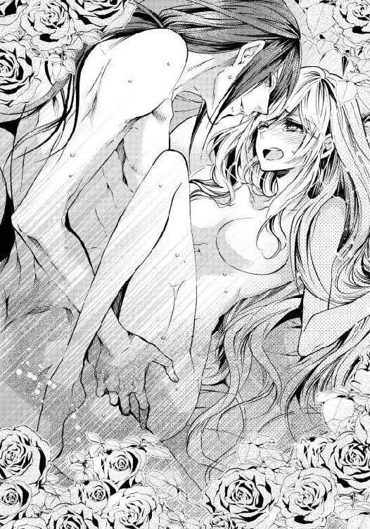
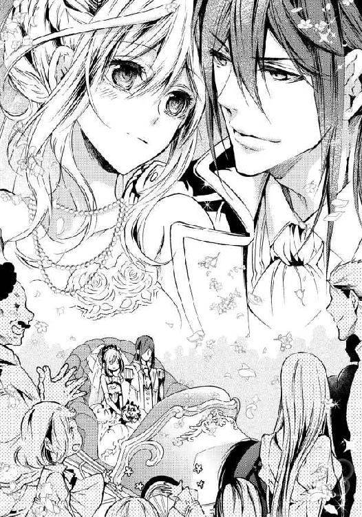

| 元帥公爵の新妻は愛されすぎて困り気味です (蜜猫文庫) | |
| 如月 & すがはらりゅう | |
| 竹書房 (2017) | |
この作品は縦書きでレイアウトされています。
また、ご覧になる機種により、表示の差異が認められることがあります。
一部の漢字が簡略字で表示されていることがあります。
イラスト／すがはらりゅう

プロローグ
──もう、二度と会えないかも。
そう思うと、涙があふれて止まらなかった。
──でも、どうしてこんなに胸が痛いの？
それが初恋だとは気づかず、マリエッタはおさまらない動悸にとまどうばかりだ。
もう行ったかしら、と思いながら、ベンチから立ち上がると、いつの間にか木戸から人が侵入していた。
「......アルベール！」
その日も礼装した彼は、神々しくて美しかった。
マリエッタは慌てて涙を拭う。
アルベールがそれを見咎めて、何か尋ねた。そして、静かにマリエッタの隣に座った。言葉の意味はわからないが、涙の理由を尋ねているのだろう。
「なんでもないわ。......花をさがしていたの」
彼女はそう言って、花園に入ってローズマリーの青い花のついた茎を摘みとった。
ほどよい大きさの花をもつ、ほどよい太さの茎を選び、ベンチまで戻った。
そして、アルベールの前にしゃがんで、彼の左手を取る。
その薬指に、ローズマリーの花枝を巻きつけた。
「この指はね、心臓につながっているのですって。そして、ローズマリーには魔除けの力があると言われているから、......つまり、これはわたしが考えたおまじないなの。あなたが元気に帰れますようにって」
彼女は両手でアルベールの手を包み、願いを込めてからそっと離した。
彼は、まるで瞳に書かれた文字を読み取るかのようにマリエッタの目を真剣な顔で見つめていたが、やがて何かが腑に落ちたという顔をした。
そして、肩の飾緒に短剣の刃を軽く当て、組紐を一本切って抜き取ると、マリエッタの左の薬指にまきつけて縛った。
これはなんのおまじないかしら。
そう思ったが、マリエッタがしたことを真似ているのだろうと解釈した。
「強そうなおまじないね」
金の指輪みたい、と思いながら手を広げて眺め、マリエッタは微笑んだ。
アルベールと視線が交わる。
聡明そうな光を湛えた黒い瞳が、何かしきりに訴えている気がする。
「マリエッタ」
と、彼はやさしい声で言い、金の髪を撫でたかと思うと彼女の後頭部に手のひらを回し、そっと自分に引き寄せた。
──え......？
額にアルベールの唇が触れる。
柔らかくて、少し冷たくて、くすぐったい。
「なに......？」
マリエッタが尋ねると、彼は甘い声で二言、三言囁いたが、その意味はわからなかった。
きっと別れの言葉だろうと、マリエッタは思った。
第一章
馬車の揺れがひどくなったのは、城が近づいた証拠だ。
リシャールは岩山の上に作られた古い要塞で、城壁の中に身を寄せ合うようにして、ひとつの村が集落を作っていた。
この地方の冬は長く、人々は貧しいが、四月下旬ともなれば雪も消え、岩肌に小さな花が咲き始めるので、馬車旅も退屈なものではなくなる。
マリエッタの向かい合わせの席では、馬車の振動に顔をしかめながら、継母のセシルと連れ子のエライザがうたた寝をしていた。三年前、マリエッタの母が病死した後、新しくできた母と姉だ。
──同じお顔だわ。
親子揃って細面に高い鼻、切れ長に吊り上がった目をしていて、口角は不機嫌そうに下がっている。もう少し笑ったらとてもきれいだと思うのだが、彼女らが笑うのをあまり見たことがない。
褐色の髪は強いウェーブがかかっていて、こめかみに時々浮き上がる青筋の位置まで一緒だ。
実母を亡くしたマリエッタは、母子で似ているということがうらやましかった。
毛皮の縁取りをした緋色のマント、衿の高い青いドレスを着た伯爵夫人と、ピンクのレースをふんだんに使ったドレスの上から白テンの毛皮のケープをしたエライザは伯爵家にふさわしい豪華な出で立ちで、全て彼女らが実家から持参したものだという。
伯爵の後妻のセシルは豪商の出だった。
セルナ王国は、ティヘリナから度々侵攻を受けていたため、各地の領主も兵を引きつれて駆り出された。自前の兵士に武器や甲冑を誂え、捕虜になった兵士の身代金を払わねばならないこともあり、この兵役の負担は地方領主の家政を傾かせるほど重く、リシャール辺境伯の借金も膨れ上がるばかりだった。
織物で財を築いたランパール家の寡婦だったセシルは、娘を連れてリシャール伯爵夫人となり、その借金を肩代わりした。
マリエッタのドレスは若草色の麻の、姉が普段着に着ていたもので、ほつれた裾を切り落として丈を詰め、マリエッタに合うように直してもらったものだ。小さくなって着られない服から外したレースやフリルで衿元を飾ってくれたのは、子守のアヤだ。
継母は実家が裕福なだけでなく、やり繰り上手だという触れ込みのとおり、嫁いでくると、まっさきに使用人の数を減らし、さらに残った者の給金を減らした。エライザの服は実家で用意する代わりに、マリエッタにはエライザの古着しか着せないという徹底ぶりもあり、傾きかけていたリシャール家の家計は随分楽になった。
新しい母のセシルは合理的にものを考える質だった。
『マリエッタは何もしなくても伯爵令嬢ですが、私共は成り上がりですから、見苦しい格好をしていたらたちまち馬鹿にされます。エライザのドレスは私の持参した蓄えで買いますから、当家に迷惑はかけませんよ。いずれそのお下がりがマリエッタにいくのですから、いいものを作って損はありません』
こうして、年に何度かの彼女らの買い物に稀に同行させてもらえることがあり、今、その帰り道なのである。
エライザには四揃いものドレスと装飾品を買ったが、マリエッタには何もなかった。
いや、正しくは、何年か先に自分のものになるであろうドレスの買い物につきあわされたのだった。
やがて観察にも飽いて、マリエッタが馬車窓の外に目をやると、青々と茂った木々の姿が流れていくのが見えた。双子のように並んだ山のひとつが父の所領であり、その城壁まであと数キロメートル、この界隈が実は、いちばん賊に狙われやすい危険地帯だ。
──無事に村に着くといいけど。あと少しっていうのが危ないんだから。
マリエッタが心の中でそう願ったにもかかわらず、突然、馬車が止まった。
「......ああもう、......何よ？」
呻くようにそう言ったのは、母親より先に目を覚ました姉のエライザだ。
彼女は、寝ぼけた顔であたりをキョロキョロと見回し、馬車窓から警備兵のカイルが顔を覗かせたのに気づくと、ギャッと悲鳴を上げた。
「びっくりするじゃないの！ 顔を見せないでちょうだい、本当に醜い男ね」
この悲鳴と怒鳴り声で伯爵夫人も目を覚ました。
さんざんな言われようのこの男は、まだ二十歳だが禿頭で、岩のようなごつごつした顔で、気の弱い人間なら目も合わせられないような強面だ。
だが、本当は大人しい性格で、彼は申し訳なさそうに巨体を縮めながら言った。
「実は、死体らしいものが道を塞いでまして......、すぐに片付けます」
「......まあ、いやね」
そう呟いた夫人の慄いた表情の中には、微かに安堵の色も見えた。
「でも、生きた山賊よりはマシというものです」
しかし、エライザのほうは油断なく警備兵を問い詰める。
「ちょっと、死体らしいものって、どういうことなの？」
「その......ひょっとしたら、まだ息があるかもしれません。放っておいてもすぐ死ぬでしょうがね」
カイルの答えを聞くと、エライザの目がさらに吊り上がった。
「やだ、怖い......殺して！ 今すぐ止めを刺すのよ」
エライザの命令に、カイルがもごもごと言った。
「しかし、襲ってくるようなことはないと──」
「口答えする気？ やれと言ったらやるのよ。言うことを聞かないと追い出すわよ！」
ためらいを見せるカイルを一喝すると、エライザは馬車の背もたれに背中をおしつけて腕を組んだ。セシルも同じ気持ちのようで、制止しようという気配はない。
マリエッタが言った。
「わたしが確かめるわ、カイル。下ろしてちょうだい」
「あなたはよけいなことしないの。足手まといになるだけだから」
エライザが止めたが、マリエッタはそこだけは譲らなかった。
「普通の旅人だったら大変だもの」
「マリエッタお嬢さんは、そこで大人しくしていてくだせえ。急ぎますんで」
伯爵夫人と令嬢の命令には逆らえないと、カイルが踵を返そうとした時、マリエッタは馬車の扉の隙間に体を滑り込ませ、ドアを押し開いて飛び出した。カイルが慌てて抱きとめる。
「わっ、危ねえです、お嬢さん！」
「ありがとう、カイル」
「や、そんなつもりじゃ。......お嬢さん、だめですって」
カイルの腕からすとんと地面に降り立つと、彼女はスカートを摘まんで走った。
そして馬車の進路を塞いでいるボロ布みたいな塊の傍にうずくまる。
彼女のしなやかな金色の髪が若草色のドレスの胸に垂れかかった。大きな青い瞳も金髪も母譲りだが、病弱だった美貌の母と違ってマリエッタは丈夫なだけが取り柄だと自覚している。
転がっていたのは若い男で──少年と呼ぶほうがふさわしい。
ダブレットがあちこち裂けて血で汚れているのは、岩肌を転がり落ちたせいだろうか。
血痕を見て少し怖くなったが、顔はとてもきれいだ。
鼻筋はまっすぐとおり、わずかに開いた唇は形よく知的に見える。
切れ長の目は閉じられていたが、今にも開きそう。
「ひどい怪我──！」
外套の肩から脇にかけて、どす黒い染みがあるのを、泥汚れかと思ったが、よく見るとおびただしい量の血だった。
「斬られたんですな。追剥ぎがここまでするのは珍しい。いずれにしてもここは危険ですぜ。死んだことにして捨ておきましょう。山賊の仲間割れかもしれませんし」
「そんなことないと思うわ。服も悪いものではないわ」
マリエッタは注意深く観察を続けた。
少年は、上半身にはクワの実のような暗紅色の羊毛のダブレットを着ており、葉っぱ型のギザギザのついたフードつき外套をつけている。足は太ももまである長いブーツを履いていていた。とても柔らかそうな革で、安物の靴ではなさそうだ。
腰には金メッキを施された装飾金具をもつベルトをしていて、黒い美しい鞘が、細い革紐によって、二か所で留めつけられていた。
「立派な剣......、何か書いてあるわ。異国の文字みたい」
体つきはカイルに比べると随分華奢で──彼と比べたらどんな大男でも頼りなく見えるのだが──手足が長い。
マリエッタが緑色のフードをめくると、肩まで伸びた髪が深紅だった。
「頭に怪我？」
「いいや、もともとこういう色なんでしょう。......さ、こいつを道の端まで運びますんで、馬車にお戻りくだせえ」
「いいえ、助けるのよ」
マリエッタは少年の頬を小さな手で、軽く叩いた。起きて、と言うように。
彼は瞬きを何度かした後、目を開けた。
その瞼が完全に見開かれると、瞳は濡れた黒曜石のように輝いていた。
しばらく視線をさまよわせていた彼は、マリエッタの顔に焦点を合わせたようで、ゆっくりと手を上げてマリエッタの手首を掴んだ。血に染まった手で。
彼女は息を呑んだが、恐怖心はなかった。少年は、山賊などでは決してないと思う。その時、カイルが言った。
「お下がりください、マリエッタお嬢さん。怪我をしますぜ」
肩を掴まれ、少年から引きはがされるようにして後ろに下がらせられた。次の瞬間、カイルは彼の喉元に剣の切っ先を突き付けていた。
「......やめて！」
マリエッタは思わず叫んだ。カイルがぴくりと身じろぎをした。
「殺してはだめ」
「しかし──エライザ様が」
馬車窓からエライザが顔を出し、早く止めを刺しなさい、と叫んでいた。
「これはわたしの命令よ。わたしが責任を持つわ」
マリエッタはカイルに向き直り、伯爵だったらこう言うであろうという言葉を、こうするであろうという態度で紡ぎ始めた。継母の言う、『マリエッタは何もしなくても伯爵令嬢』という言葉には、こういう心の在り方も含まれているのだと思う。
「カイル。あなたは死んだ人を生きかえらせることができるの？」
「......へ？ なんですかい、お嬢さん。そんなこと、誰にもできるはずありません」
「そうよね。じゃあ、なんのためにその人を殺すの？ 二度と元に戻らない命を、どうして奪うの？ あなたの仕事は領民を守ることで、死にかけの子どもを殺すことじゃないはずよ」
「こやつは子どもじゃありませんや......。しかし、わかりました。お嬢さん。では、このまま放置しましょう。奥様には、死んでいたとお伝えください。それでいいんですな？」
こうしてカイルは剣を鞘に収めたが、マリエッタはまだ満足しなかった。
「いいえ、馬車に運ぶの。手当をするのよ」
「何ですと？ 旦那様でもそこまではなさらぬでしょうよ。ゴロツキを屋敷に入れるなど！ それに、どうせもう助かりゃあしません」
「ゴロツキなんかじゃないわ。さあ、手をかして」
マリエッタが再び膝をついて、少年を抱え上げようとすると、カイルが呻くように言った。
「ああもう、お嬢さんにはかなわねえ......。だが、そいつは馬車でなく、俺が馬で運びます。これだけは通させてもらいますぜ」
そこはカイルに従うことにした。
得体のしれない瀕死の旅人を馬車に乗せるなど、セシルとエライザが許すはずもないのだから──。
＊ ＊ ＊
──ここは、どこだ......？
アルベールが気がついた時、まず漆喰の天井が見えた。
寝かされていたベッドには天蓋も垂れ幕もないらしい。つまり、路傍ではないが、自分の家ではないどこかだ。
体は熱っぽい。左肩がひどく痛むが、治療は施されているらしく、包帯が厚く巻かれていた。
「あっ、起きたわ。あなた......お名前は？」
誰かが何か話しかけている。幼い声だ。
そして、この言語は自国のものではない。
アルベールがその方向に顔を向けると、ひとりの少女が、青い大きな瞳でこちらを見つめていた。
金色の髪は解き放したままで、レースのたくさんついたドレスを着ている、まるで人形だ。しかし人形と違うのは、生き生きとした表情でこちらを凝視し、しきりに話しかけてくるところだ。どうやら名前を尋ねているらしい。
「アルベール......」
と記憶の浅いところから、自分の名前を引っ張り出して口にすると、瞬時にこれまでの記憶が蘇った。
「アルベールというのね。......お父様、お父様！」
少女はパタパタと足音を立てて、別の誰かに報告にいったようだ。
アルベールは、伯父であるオルビエ国王の調印を見届けるため、国境付近へと出かける途中、山賊を装った数人の男に襲われたのだ。犯人はだいたい察しがついている。
元帥の息子の命を奪うと脅して、セルナとの国交回復を阻止し、ティヘリナとの同盟を強引に結ばせるのが目的だ。
調印式まであと幾日もなかったはずだ。調印の前に、自分が生きて逃げ延びたことを知らせなくては、助かっても何の意味もない。しかし、言葉は通じるだろうか。
「今日は......何日ですか？」
答えは返ってこなかったが、大きな人影が漆喰天井の視界を遮り、初老の男が覗き込んできた。恰幅がよく、身なりもいい紳士で、手に持った紙とアルベールの顔を何度も見比べ、震える声で言った。
「......貴殿の名前はアルベールとおっしゃるか？ 家名はなんと？」
この紳士は少々ぎこちないながらも、オルビエの公用語を話せるのがありがたい。
「ドブレ......。アルベール・ドブレ」
「ドブレ！ 貴殿のお父上はオルビエ国王軍元帥であられるか？」
「そうです。調印を......見届けに来て──襲われました」
口がからからに渇いていて、掠れた声しか出なかったが、紳士は理解したようだ。
「グラシアン、ペンと紙を！ 早駆けでこのことを国王陛下に知らせるのだ！」
彼はそうして、執事らしい人物に用事をいくつか言いつけると、ようやくアルベールの質問に答えた。
「今日は二十三日です。ここはリシャール辺境伯領で、私が城主です。よく生きて逃げ果せられましたな！ これで貴殿の国と我が国の同盟を阻むものはなくなりました」
──そうか......間に合ったのか。
よかった。オルビエとセルナの二国同盟はこれで無事成し遂げられるだろう。自分ひとりの命でどうこうなるものでもないかもしれないが、公子を見殺しにするという葛藤なく調印できれば尚いい。
本来なら一刻も早く父の元に駆けつけて、自分の生存を知らせたいが、目の前にいる紳士が引き受けてくれそうだ。彼は恭しい態度で続けた。
「国王陛下の命を受けて、貴殿を探しておりました。わが城の威信にかけて、貴殿の治療に当たり、ご快復の砌には厳重な警備のもとに、オルビエにお返し致します」
後をお願いする、という気持ちをこめて、アルベールが右手を差し出すと、紳士は、感極まった顔をしてその手を握り返した。
山賊に扮したティヘリナの兵士八人を殲滅したが、自分も負傷した。
峠にうち捨てた彼らの死体はどうなっただろうか。
「お父さま、知っている人なの？」
少女がアルベールのわからない言葉で、また何か問いかけたが、紳士は視線をこちらから決して離さず、娘の頭を撫でていた。よくやった、というように。
「客室をすぐに整えろ。丁重にお世話をするように」
自分のやるべきことは全てなし終えた、とわかった時、あらためてアルベールに深い疲労感が押し寄せ、彼は再び目を閉じた。
＊ ＊ ＊
少年は使用人用の空き部屋からいちばんいい客室に移され、侍医による施療を受け、その看護は子守係のアヤの仕事となった。
彼が身分の高い人物とわかると、伯爵夫人とその連れ子のエライザが、通訳の執事と共に毎日見舞いに訪れた。
とりわけエライザを美しく飾り立て、夫人のほうは控えめに、娘を引き立てるようなしつらえで病人の前に現れ、たっぷり一時間は娘がいかに聡明で堅実で良い妻の資質を備えているかを並べたてるので、執事も通訳に困って口ごもってしまうほどだった。
関心のない話を長々と聞かされるのも辛いだろうに。
彼女らと通訳の執事が立ち去った後、マリエッタはそっと彼の部屋を訪れた。
「アルベール、お加減はいかが？」
しかし、セルナ語が通じない。
そのためか、アルベールはほとんど話さない上に、いつも何か怒りをこらえているような、そんな怖い顔をしている。
きっとまだ傷が痛くて辛いのだろう。
マリエッタが最初に見たように、彼は左肩から脇にかけてひどく負傷していたし、ほかにもあちこちから血を流していたように思う。
端正な顔を少し苦しそうに歪めて、彼が起き上がろうとするのをマリエッタが手で制した。
「そのままでいて」
「お嬢様、お見舞いのお花ですか？」
マリエッタが何種類かの草や花を抱えているのを見て、世話係のアヤが言った。アヤもアルベールの言葉は理解できないが、執事のグラシアンが通訳して、たいていのことは不自由なくこなせているようだ。
「今、庭園がとてもきれいなの。これを見たら、きっとアルベールも外に出たくなるくらい元気になると思って」
「あいにくと、そうお伝えしようにも、今グラシアンさんは奥様のご用でお出かけなのでございますよ」
「平気よ、通訳なんかなくったって、心をこめて話せば、きっと通じるもの。......アルベール、きれいでしょ？ 庭で摘んできたの」
そして、マリエッタが花束を差し出すと、アルベールはベッドに横たわったまま、それを受け取って言った。
「アリガトウ」
異国の響きだが、お礼を言ったのだと思う。
「どういたしまして」
異なる言語でも、なんとかなるものだ。
「花瓶を用意いたしますね」
と、アヤが言って、客室から出ていった。
マリエッタはもうひとつの見舞い品を、スカートの帯から取り出した。いちばんお気に入りのビスクドールで、白い衿のついた赤いドレスを着ている。
「ベッドにずっといるのは退屈でしょうから、わたしの部屋から持ってきたの」
アルベールは人形には関心なさそうだったが、手にしていた花束から青い小さな花を一本取り、黒い瞳でじっと見つめた。
それはチクチクした細い葉をもち、強い香りを放っている。
「ローズマリーよ」
問われたわけでもないが、マリエッタがそう教えると、彼は『ロスマリン』と言った。
彼の国ではそう呼ぶのだろう。
それから、彼はその花をマリエッタの顔に近づけて、マリエッタの顔と花を見比べるようにして、何かつぶやいた。
きっと、彼女の瞳と同じ色だと言っているのだろうと想像がついた。
少し怖いくらいの大真面目な顔で見つめられて、マリエッタは思った。
──この人もお姉様たちみたいに不機嫌ね。笑ったらすごく素敵だと思うのにな。
黒い瞳は涼し気で、吸い込まれそうに魅力的なのに、完璧なバランスで造形された美貌の唯一の欠点はこの苦々しい表情だ。
──でも、傷が痛いんだもの、仕方ないわね。痛くて夜も眠れないのかも。
マリエッタは小さな手でローズマリーの枝を取り、アルベールの枕の下に押し込む。
「こうするとね、悪い夢を見ないと言われているのよ」
この意味は、彼には理解できなかったみたいだ。アルベールは不思議そうな顔をして、マリエッタの所作を見つめていた。
やがて、アヤが花瓶を持ってきて、残りの花を全て活けた。
マリエッタはそれを見届けると、アルベールのベッドから離れ、窓際に移動した。
リシャール城は古い建造物なので壁がとても厚くできている。
窓の部分は壁をアーチ形にくり抜いた壁龕となっており、窓の両脇に切り出された石には人が向かい合わせに座れる。
この小さな空間は、手仕事をするのにちょうどよく、アルベールが着ていた絹のシャツをそこで繕うことにした。血だらけだったのを洗って乾かしたのだ。汚れは落ちたが、肩はざっくり裂けている。
「ほら、できた。わたし、まあまあ得意なのよ」
繕い終わったシャツを両手で広げてアルベールに見せると、彼は一瞬、ほんの微かな笑みを浮かべた。
すぐに真顔に戻ってしまったが、それには二度と忘れられないような甘さがあり、秘密の宝物を見つけたような気持ちになった。
──彼と言葉が通じたらいいのにな......。お話をたくさんして、彼の笑顔がもっと見られたら素敵なのに。
「でも、グラシアンはここにずっといるわけじゃないでしょう。通訳がいなくて、アヤは不自由はないの？」
マリエッタが尋ねると、アヤは答えた。
「日に何度かグラシアンさんが見にきてくれますし、どうしても困った時は、執務室まで呼びに行きます。ですが、アルベール様は本当に我慢強くていらっしゃって、痛いとも苦しいとも、何もおっしゃらないのです。食事についても治療についても、いっさい何かを要求なさったり不満をおっしゃることはありません。根っからの軍人さんなのですねえ」
『軍人さん』とはそんなに忍耐を要するものなのだろうか......と考えていると、廊下のほうから数人の話し声が聞こえた。
セシル母子と執事のグラシアンがやってきたのだ。
マリエッタは慌ててバルコニーに出た。
この最高の客室にアルベールが移された時、マリエッタが付き添っているのを見たセシルは、『子どもが病人を煩わせてはいけない』と厳しく叱った。
以来、エライザたちと鉢合わせしそうになると、マリエッタはバルコニーから別の部屋に移動し、そこからこっそり立ち去るのだった。
アルベールを見舞った後、中庭を歩いていると、警備兵のカイルを見かけた。
彼は、いつも城内ではリリパイプつきの帽子を被り、鎖帷子の上に丈夫な綿入れの防護服を着ている。こちらに気づくと、思案深げな顔をして歩み寄ってきた。
「お嬢さん、大丈夫ですかい？ やつの正体はわかりましたか？」
「え？」
「あいつは只者じゃありません。相当悪いやつです」
「どうしたの？」
「峠を捜索したら、八人もの山賊の死体が転がっておったんでさ」
「......八人！ いったいどういうこと？」
「俺は、やっぱりあいつも山賊で、仲間割れの末ひとり生き残ったんじゃねえかと思います」
「そんなはずないわ。アルベールはとても立派な身分だそうよ」
「ひぇっ？」
「お隣の国オルビエの公爵様の子ですって。王様とも親しいらしいわ。詳しいことは言えないってお父様がおっしゃっていたけど」
「公爵......！」
「でも、やさしい人よ。恐れることはないわ」
カイルはみるみる顔色を失い、喘ぐように言った。
「何てことだ......！ やつは俺について、何か言っていますかい？」
「カイルについて？ いいえ......何も。そもそも言葉が通じないのだけれどね。オルビエとセルナは長い間、国交を絶っていたから、言葉も違うの。文字の形だって違うのよ」
「国交を絶って──？」
「アルベールが助からなかったら二国の同盟は成立しなかったのですって」
「わぁあ、そんな重要人物に、俺はなんてことを！」
カイルはうずくまって頭を抱えた。
「いったいどうしたの？」
「俺は、俺は──取り返しのつかないことをするところだった」
「......ああ、そういえば」
アルベールがマリエッタの手を掴んだ時、カイルは彼を殺そうとしたのだ。
「でも──、わたしを守ろうとしてくれたのでしょう？」
「そうです。お嬢さんに襲いかかってくるのではないかと思いました」
「それなら、あなたが悪いわけじゃないわ。わたしの願いを聞いてやめてくれたし......なにも問題はないんじゃないかしら。お父さまが、何かおっしゃったの？」
「いいや──、旦那様は何も」
「そう。じゃあ、大丈夫よ。そもそも、命じたのはお姉様だし。お母様は、お姉様を彼と結婚させようと必死みたい。そうなったら玉の輿ですもんね。今はそのことで頭がいっぱいよ。だからカイル、追放なんてされないわ」
カイルの表情が、少し明るくなった。
「ありがとうごぜえます！ ......それにしても、エライザ様が玉の輿なんておかしくないですかい？ 本当に助けようとなさったのはマリエッタお嬢さんなのに」
「わたしはまだ十二よ、そんな話あるわけないじゃない」
「そら、まあ、今はそうですが......。それにしても、あの御仁が立派な身分だとどうしてわかったんですかい？ 身をやつしておったようで、身なりも大貴族というふうには見えませんでしたがね」
「それは......よく観察すればわかるわよ」
とはいっても、悪人に見えなかったというだけで、父が慌てて最上の客室に移すほどとは、マリエッタも思っていなかったが。
「俺は頭が悪いから、わからねえんです。ああいう時、どうしていいか判断できない。お嬢様が止めてくれなかったら、殺っちまってたかもしれない」
「そんなことないわ。カイルのことだもの、死んでいたって嘘を言って放っとくわよ」
「だが、近いうちに追い出されると思うんです。俺は醜いし、読み書きもできねえですし」
カイルの懸念もわかる気がする。継母はこの地に来てすぐに使用人の半分を解雇しただけでなく、給金も減らした。さらに、まだ減らすところはないかと考えているふしがある。
「わたしは醜いとは思わないわ。笑った顔はやさしいもの。読み書きは、勉強すればいいでしょう。......ええ、絶対にそうするべきよ」
「へぇ？ 勉強ですかい？ 俺は兵士ですよ。読めるのはたったひと文字、リシャールの『Ｒ』だけです。なんでかっていうと、この文字がついたマントがあれば、捕虜になった時、殺されずに済むんでさ。リシャールの者とわかれば、人質と金を交換できるって算段でさ」
「戦といっても、殺し合うだけというわけじゃないのね」
「戦目的ではなく、身代金で儲けるために貴族を誘拐するって話もありますぜ」
「とにかく兵士だって、勉強は必要よ。それはきっと、将来、もうひとつの武器になるわ。カイル、あなたの剣を見せてくれる？」
「はあ、......しかし、気をつけてくださいよ。危ねえですから」
カイルは自分の剣を見せてくれた。鞘からは抜かず、マリエッタは黒金の柄にそっと手を触れて言った。
「この剣は、相手がいい人かわるい人か知らないでしょう？ 戦うべきあいてか、そうでないかをわからずに戦うことは、この剣とおなじよ。何も考えずに斬ったら、カイル自身がただの武器になってしまうの」
「へえ......そうですね」
「次は間違えないように、いつも考えることよ。それがわかったら、もう何も心配しないで」
「ありがとうごぜえます、お嬢様」
こうして、自分の何十倍も屈強に見えるが、実は気の小さい男を励まして、マリエッタは自分の部屋へと戻った。
＊ ＊ ＊
「アルベール、お加減はいかが？」
彼を保護して二週間、マリエッタは毎日、執事や母たちの目を盗んではアルベールの見舞いに行った。
彼はいつも厳しい顔をしているが、迷惑は承知だ。マリエッタはどうしても彼が心配で、日に一度は顔を見ないと落ち着かなかった。
その日、見舞いにいった時、彼は窓辺に佇んで微風を浴びていた。
上物仕立のシャツを着て、膝下丈のブリーチズを穿いた彼の姿勢はとてもしゃんとして美しかった。手入れされた髪に日光が当たって、毛先が明るめの紅色に輝いている。逆光によって作り出された彼の顔の陰影は深くて品格がある。背は、こうして立ち姿を見るとマリエッタより頭二つ分も高く、優れた彫像のようだった。
思わず彼に見惚れ、挨拶をしたきり言葉を失っているマリエッタに、アヤが言った。
「これから、特訓をなさるそうなのですよ」
「ええ？」
マリエッタが問い返すと、それに応えるように、アルベールが床にうつ伏せになった。
負傷していないほうの腕だけで身体を支え、その腕を曲げて負荷を与えていく。
「何をしてるの？」
マリエッタの声に、アヤが困り顔で言った。
「お医者に止められているのに、鍛錬だとおっしゃって聞かないんですよ」
「どうしてそんな無理をするの？」
「寝てばかりで動かないと身体が鈍ってしまうので、こうして鍛えていらっしゃるのです。以前は朝と夜だけでしたが、今では昼間もこうして──傷が開いてしまわないか心配です」
「......そんなに動いて大丈夫なの？」
マリエッタがそう言っても、アルベールはこちらを一瞥しただけで、その運動は止めないし、ぶつぶつと何かつぶやいているのは、きっと回数を数えているのだろう。
躍動する背中や肩は思いのほかたくましく、強靭でしなやかだ。
大きな力がかかっている腕の筋肉も盛り上がり、首筋には汗が光っている。
「グラシアンさんにも何度も注意してもらっているんですけど、どうしても聞いてくださいません」
見た目は全然違うが、同じ軍人ということで、案外カイルと中身は似ているのかもしれない。
「困った人ね」
と、通じないのを承知でマリエッタが言うと、アルベールはようやく床から身体を起こし、それから、左肩を軽く回して見せた。傷はもう癒えたと訴えているかのよう。
侍医は、深い傷なので、もしかしたら腕が動きにくくなるかもしれないと言っていたが、すっかり不自由なく動いている。
最初に見せたような、苦悶の表情はなく、どこか得意げに目に微笑をたたえているところを見ると、彼はめざましい勢いで快復したのだろう。
ほら、というように、彼は中腰になって右腕を曲げ、マリエッタの前に突き出してきた。
「どうするの？」
マリエッタは、ためらいながらも彼の腕にそっと触れた。
すると、アルベールは自分の腕にマリエッタの両手を掴まらせ、黒い瞳で彼女を見つめた。
短い言葉で、何かを低く叫ぶと、ひょいとマリエッタを持ち上げる。
「きゃああっ、だめだめ、危ない！ 傷に響いちゃうでしょ！」
もがくと余計に彼に負担をかけると思うと、それもできず、落ちないように彼の腕にしがみついて悲鳴を上げる。
アルベールは軽々とマリエッタを腕にぶらさげたまま、ベッドからドアの方に進み、それから室内を何周か回った後、肘掛椅子にマリエッタを下ろした。
「もう！ なんてことするの！ 怪我は大丈夫？ 痛くない？」
こちらが心配して怒っているというのに、アルベールは愉快そうに笑いながら、腰砕けになっているマリエッタを覗き込んだ。
その黒い美しい瞳に捕えられると、マリエッタの憤懣はたちまち消失し、ただ、心地よさそうに汗を流すアルベールに見入るばかりだ。
「マリエッタ？」
と、彼が言った。
ええ、と頷き、マリエッタはようやく身じろぎをした。
「こんなに元気になって、嬉しいわ」
驚きはもう収まったはずなのに、まだ動悸が静まらないのが不思議だ。
「随分お丈夫になられたので、あと三、四日もすれば、馬車でお発ちになってもいいそうですよ。よろしゅうございましたねえ、お嬢様」
というアヤの言葉に、マリエッタはぎくりとした。
──あと三、四日......！
そんなに早く、アルベールはいなくなってしまうのか。
もっと長い間、ここにいると思っていた。
突然、締めつけられるような悲しみが襲ってきて、マリエッタはうろたえた。
「それは......よかったわね」
震える声で、そう言うのがやっとだった。
その時、廊下のほうから人の気配がしたので、マリエッタは慌ててバルコニーに出た。そこで様子を窺っていると、すぐにドアが開き、セシルとエライザ、執事の三人が入ってきた。
まるでこそ泥みたいに、マリエッタは息を殺して隣の客室に渡り、庭へと脱出する。
どうしてこんなに胸が騒ぐのだろう、と庭を歩きながら考えた。
「お嬢さん、どうしたんですかい？」
カイルが心配そうに話しかけてきた。
「元気がねえようだが。もしや、公子の具合が悪くなったんですかい？」
「いいえ、その逆よ。とても元気になったの」
「よかったじゃねえですか」
「そうなのよ。わたしは喜んでいるのよ」
カイルはこちらを見下ろして、眉をひそめた。
「......嬉しそうには見えませんな」
なぜかしら、と呟くと、カイルが言った。
「ははあ、お嬢さんは情が移っちまったんでしょう」
「え......？」
「別れがくるのが寂しくてたまらないって顔だ」
「そんなことないってば。だって、お姉様と結婚するかもしれない人よ？」
マリエッタは否定したが、カイルに心を覗かれたみたいで恥ずかしかった。
「このところ忙しくて大変だったもの。これでやっと暇ができるわ。前と同じ暮らしに戻るだけで、なんでもないわ」
そう言いながら、マリエッタは、以前の暮らしがどうだったかと思いを馳せたが、とりたてて何かがあったというわけではない。
セシルは社交デビューしたばかりの実の娘にいい相手を見つけることに専心していて、エライザと二人で買い物に出かけていることが多かった。
マリエッタは、人恋しさに使用人たちのいる厨房に入っては窘められ、山に散歩に行っては捜索隊を出される。こっそりオールソン山に向かった時には、ふだん穏やかな父が顔を真っ赤にして激怒したし、アヤが十年も寿命が縮んだと真っ青な顔で言ったので、このごろは外で探検をするのは諦めている。
カイルが時々話しかけてくれるが、彼も忙しそうだ。結局、自分用にもらった小さな庭園で花を摘んだり、小鳥の声を聞いたりして過ごすしかない。
そんな日常にまた戻るだけだ。
それは、今と比べてなんと寂しい日々だっただろうか。
アルベールのために体にいい香草を集めたり、彼が退屈しないように、本や玩具を届けるのは、自分の楽しみでもあったのだ。
言葉が通じないので絵入りのものを書庫から探し出し、彼に読んで聞かせたりすると、わからないなりに彼はじっと、耳を傾けてくれていた。
彼は物覚えがよく、すぐにいくつかの単語を覚え、次に行った時には復唱して聞かせるくらいだった。
窓際で繕い物をして、何を話すこともなく過ごした日もある。
本当は迷惑だったかもしれないが、彼が拒んだことは一度もなかった。
彼のいない一日一日を、これからどうやって過ごせばいいのだろうか。
想像もつかない。その不安で、胸が苦しいのだ。
──でも、わたしはお父様ならそうするだろうと思って、お父様の代わりにアルベールを助けたんだもの。国の同盟に関わる問題だったのだから、寂しいとか、関係ないもの。
カイルがにやにやしながら見下ろしていることにも、腹が立った。
「そんなでたらめを言うなら、もう部屋に帰るわ」
そしてぷいと背を向けると、カイルが追いかけてきた。
「ああ、お嬢さん」
「なあに？」
憤慨の印に、振り向きもせず問い返す。カイルが呼びとめたのは、別の用件だった。
「俺、勉強ってやつをやってみようと決めたんです」
「え？ 勉強を？」
「そうでさ。この年で──まずは読み書きから......何年かかるかわかりませんがね」
そういうカイルは今、二十歳そこそこだ。
「それは──」
マリエッタは少し機嫌を直した。
「とてもいいことだと思うわ。神父様に言っておくわね」
村の神父は、希望する子どもたちに文字を教えているが、大人であろうと兵士であろうと歓迎するだろう。
「それで......、字を覚えたら、お嬢さんに手紙を書きますが、かまいませんかね？」
こんなに近くにいるのに、と思うと、マリエッタはおかしくなった。
「練習ね。いいわよ。暇ができたら、わたしも手伝ってあげる」
「ありがとうごぜえます。これで張り合いができました」
少しだけ、マリエッタの心が軽くなったのは、世話のかかる人物をまたひとり見つけたからだろうか。それでも、アルベールがいなくなる、というショックは完全には消えないが。
あとわずかなら、もっと一生懸命にあの人の世話をしよう、と彼女は決心したが、翌日からそれもできなくなった。
＊ ＊ ＊
昨日、オルビエからの使者が、リシャール城に到着した。
アルベールは怪我から順調に立ち直っていた。
元帥の息子である自分が少々の負傷で長々と床に着いているのは見苦しいことで、本来ならもっと早く帰還すべきなのだが、この異郷の地にひどく心惹かれるものがあり、その居心地のよさについ長居してしまった。
自国から公爵家の臣下たちがやってきたからには、そのような体たらくも終わりにしなくてはならない。
心惹かれるもの、というのは、マリエッタという少女のことだ。
最初は使用人の娘かと思ったが、伯爵と先妻の間に生まれた令嬢だそうだ。
通訳によると、リシャール伯爵の現夫人と長女──いつも執事を連れて見舞いにくる、目の吊り上がった狡そうな顔をした親子だ──がアルベールを発見し、保護したという。その顛末は、彼自身の記憶と通訳の説明は全く違っている。
頬を叩かれて目覚めた時に見たのは、妖精か天使かと思うような美しい少女だった。朦朧とした気分で、アルベールが──こともあろうに血だらけの手で──彼女の手首を掴んでしまった時、それが妖精ではなく生身の人だとわかった。
警備兵は剣を突きつけたが、少女がそれを阻止したのもはっきりと覚えている。
強面で体も大きい男をものともせず、アルベールの理解できない言語で彼女は説教を垂れているようだった。その様子が凛々しい反面、可愛らしく、アルベールの心を魅了した。
彼女の説得により、兵士は剣を収め、アルベールを少々荒っぽい所作だったが、馬に乗せて城に運んだ。
執事にその特徴を説明して、ようやく彼女がマリエッタという名で、伯爵と先妻との間にできた娘だとわかった。
警備兵が抜刀したことについて、アルベールは誰にも言っていない。
彼の行為については、アルベールの正体を知らなかったのだから、無理もないだろうと看過することにした。何か言えば、彼の立場を悪くするだろう。
とにかく、マリエッタが恩人だということに変わりはない。
彼女は、なぜか伯爵夫人たちの目を盗むようにしてやってくる。そして、言葉が通じないのに、毎日話しかけてくる。
彼は生来武骨者なため、あの年頃の少女にどう接していいかわからず、戸惑うことも多いが、意味がわからなくても、彼女の言葉を聞くのは楽しい。聞くだけでなく、その表情が愛くるしく動くのを見ると、永遠に見つめていたいと思う。
むろん、理解して会話できれば、尚いいだろう。
セルナ語を習うべきだ。帰国したら、早速学ぼうと思う。
その日の昼は、伯爵夫妻とエライザを交えての正餐をしたが、マリエッタの姿はなかった。
夫人の実家は裕福らしく、貧しい辺境伯領の財政を立て直した功労者ということだった。
ともかく、彼女がさりげなく、自分の連れ子の美点を吹聴していたが、アルベールは全て聞き流した。せめて、先妻の娘をないがしろにしなければ、その点だけでも評価できたのに。
正餐の後、伯爵夫人がエライザとアルベールに散歩を勧めてきた。
あの押しつけがましさには参ってしまうが、幸い、言葉が通じないため、オルビエの使者と、リシャール城の執事が立ち会い、二人きりにならずにすんだ。
オルビエとセルナの二国同盟の調印も完遂された今、アルベールは肩の荷を下ろし、オルビエからやってきた使者も警戒を解いて城内の散策に同意したのだ。
客室の窓から遠目に見てはいたが、花の咲き乱れた中を歩いていくと、さまざまな花の香りに包まれて、実に気分がよかった。
さらに下りていくと、南西の周壁の下に川が流れており、水車小屋の傍に、召使いらしい女たちが集まっていた。その中に、マリエッタもいて、何やら笑いさざめいている。オルビエの使者がきてから、彼女がいっこうに部屋に来なくなったので心配していたが、元気そうだ。
「あれは何ですか？」
アルベールは川面を指さして言った。
洗濯女たちが衣類を洗っているのは、珍しくもない風景だが、水車小屋から数メートル下った場所に、鉄の檻のようなものが半分沈められているのだ。
「罪人を中に入れて吊るす、見せしめの拷問具のようですが？」
すると、執事のグラシアンという男が答えた。
「はい、そのとおりです。マリエッタお嬢様が今年、十二歳のお誕生日の記念に、旦那様が何を所望かとお尋ねになさった時、あのようにしろと──」
「なんですって？」
「旦那様はお嬢様方のお誕生日に、必ず何が欲しいかとお尋ねになるのですが、エライザお嬢様はドレスをおねだりなさいました。一方、マリエッタお嬢様は少々お考えになった後、願い事がひとつあるとおっしゃいました」
「それは......どんな願い事ですか」
「お嬢様は、リシャールの領民に、拷問を受けるような悪人はいないはずだとおっしゃり、もっと有益な使い方をしようとご提案なさったのです」
「へえ。......それで、あれを何に使っているのですか？」
「シーツなどの大きな布や、何重にも布を重ね縫いした厚地の防護服などをあの中に入れておくと、川の流れによって自然に汚れが落ちるのでございます。水の冷たくなる季節などは特に、洗濯女たちがたいそう喜んでおります。洗濯女たちも、人手不足の上に給金を減らされて苦しんでおりますゆえ、マリエッタお嬢様が見るに見かねたのでしょう」
「洗濯に──なるほど......」
アルベールは思わず笑ったが、その直後、笑いごとではないと思った。
十二歳でそんな考え方をするとは天晴だ。アルベールが下方の彼女に向けて手を挙げると、彼女もようやくこちらに気づいて、手を振り返してきた。
飾り気のない仕草なのに可愛い。思わずアルベールの顔が緩んでしまう。
彼女が使用人と見紛うような質素なドレスを着ているのは、本人も好んでそうしているのかもしれないが、素地が美しいだけに、なんとももったいないと思う。
執事はこれら一連についての通訳を割愛していたが、アルベールの視線や雰囲気でマリエッタの話をしているのだと察したのだろう。
エライザはセルナ語で何か口早に言い、執事を睨みつけた。
言葉は通じなくても、どんな悪態を吐いたのかは、その表情で想像がつく。
「あの向こうはオルビエとの国境だろうか」
話を転じようにもエライザと交わす話題も興味もない。アルベールが谷を挟んでひとつの峠が見える辺りを指さすと、執事が答えた。
「はい。あれはオールソンという大変険しい山となっておりまして、昔、流浪の旅人が集団でリシャールに向かっていたのですが、間違ってオールソン山に入ったきり、忽然と姿を消したという悪しき伝説があるため、人喰いの山とか、呪いの山などと呼ばれています。よほど慣れた人間でなければ、迷ってしまい、生きて出られないと言います」
「そこに行かなくてよかった。ティヘリナに殺されなくても、山に殺されるところだったな」
アルベールが大げさでなく、思うところを言ったが、これは少々物騒な物言いだったからか、執事は通訳しなかった。
「オールソンとリシャールは姉妹山と言われていますが、あちらには人が寄りつかず、こちらは城が建ち、城壁内に村ができました。東からの分岐点には、道を誤ってオールソンに迷いこまないように道標が立っています」
「姉妹山──確かに、形はよく似ている......その差はなんですか？」
「山が人を喰うわけでも呪うわけでもなく、実は、オールソンには、山の断面を見るような深い谷がありまして、昼でも暗い森を進むうちに、そこに転落したというのが真相でしょう」
知ってみるとあっけない話だ。
疲れたので部屋に戻ると言い、ようやくエライザから離れることができた。別れ際の一瞬の隙をついて、アルベールは執事に耳打ちした。
「マリエッタは普段どこにいますか？」
リシャールから使者がやってきてから、マリエッタは部屋に来なくなった。
彼女が恩人であり、感謝していることを伝えないまま帰国の日が迫っている。
執事について行くと、やがて小さな囲い地に出た。木戸を開ける間もなく、匂いで、そこに何があるかわかった。
「こちらがお嬢様個人の所有なさっている庭園です」
「へえ......」
彼女が初めて、アルベールのベッドに花束を届けてくれた日を思い出す。
日当たりはあまりよくないが、ローズマリーなどの花が咲き乱れ、突き当りには低木を丸く刈り込んだトピアリーに囲まれた小さな木製のベンチがある。
「お嬢様は、お寂しい時によくひとりでここで遊んでいらっしゃいます。お嬢様のご招待がなければ、誰も入れない庭園でございますよ」
「私は招かれざる客かな」
「いいえ、きっと喜ばれますよ。中でお待ちください。私は失礼しますが──」
執事が慌てた顔になった理由は、グラシアン、と呼ぶ伯爵夫人の威圧的な声が近づいてきたからだろう。
アルベールひとりがベンチに座って待っていると、ほどなくマリエッタが飛び込んできた。
誰もいないと思っていたようで、人の気配にぎくりとした様子だったが、アルベールだとわかると、とたんに笑顔になる。
「私を助けてくれて、ありがとう。きみは命の恩人だ」
と、アルベールが膝を折って、マリエッタに感謝の挨拶をすると、彼女もちょこんと膝を曲げて、何か囁いた。セルナ公用語で、『どういたしまして』と言ったのかもしれない。
それから、彼女はアルベールの隣に腰かけた。
自分を包んでいるのが花の香りなのか、マリエッタの髪の匂いなのか、よくわからないが、日差しを浴びて座っていると、敵兵と戦って負傷したことによる緊張感と疲労は完全に消え去った。
「こんな心地良い場所を知っていたなら、もっと早くから来るのだったな」
アルベールはひとり言のように呟く。
帰還の日が迫っていた。それは彼女との別れを意味する。
ひどく名残惜しく、辛いことだった。
彼女を連れて帰ることができればいいのに、と思った。
＊ ＊ ＊
アルベールと出会って三週間。
明日いよいよ彼が発つという日に、オルビエの使者たちを交えて、アルベールの全快を祝う晩餐会が行われた。
本来、こうした集まりに、マリエッタのような子どもの出席は許されないものだが、最後の挨拶をするために、わずかの時間が与えられたのだ。
エライザは金色のドレスにエメラルドのネックレスを新調していたが、マリエッタはパーティーに着られるような服がない。
ところがその日の朝、エライザがやってきた。
「これ、もういらなくなったからあげる。晩餐会にはそれで来るのよ」
彼女自ら、マリエッタに古着を持ってくるのは初めてだ。
エライザのドレスは小さくなったらマリエッタに譲られるはずだったが、『愛着のあるもので、まだ手放せない』とか、『ものは大事に、長く使わなければ』などとあれこれ理由をつけて、なかなかこちらに回ってこない。
ようやく払い下げられたとしても普段着で、擦り切れるほど着古した服ばかりだった。
期待してはいなかったが、アヤの悲しげな声を聞いただけで結果は自ずとわかった。
「これは、ひどいものでございますよ。着られたものではありません！」
アヤがドレスを広げて見せ、首を振った。
品質は悪くないようだが、身頃からスカートにかけて大きく裂けていた。
「いくらなんでもこれは──。繕ったところでかえって目立ってしまいます。お嬢様への嫌がらせでございますね」
エライザのやりそうなことだ。継母のセシルは、ここまで愚かなことはしないと思う。
「さすがにこれではパーティーには出られないわね」
かといって、ほかに、晩餐会に着ていけるようなドレスなど持っていない。実母が生前に作ってくれたドレスはみな小さくなってしまった。
これは、表に出てくるなという姉の無言の干渉だろう。
「もういいわ。わたしは行かない。もともと、子どもが出るものじゃないし」
彼女が列席をあきらめた時、アヤは嘆きとも怒りともつかない表情を浮かべて部屋を出ていった。そして、晩餐会が始まる直前に、息を切らして戻ってきた。
「間に合いました、お嬢様！ 昔お預かりしていた奥様のドレスを縫い直しました。どのみちお古ですが、このほうが見栄えがいたしますでしょう」
それは、マリエッタの実母の形見だった。アヤが仕立て直して丈を詰め、三段仕立てのスカートのそれぞれの裾に刺繍の薔薇の花を縫い付けてある。
薔薇の刺繍は、裾先は明るい色糸で密に重ねられ、上へと向かって色濃くまばらに配置されている。遠目に見ても淡色から濃色へとグラデーションが美しい。
「きれいね......！ こんなドレス、初めてだわ。アヤ、ありがとう。でも、勝手な事をして大丈夫なの？」
「お嬢様が破れたドレスを着て公の場に出なさることは、伯爵家の恥だと思います。私は間違ったことはしておりませんから」
そうきっぱりと言いながら、アヤが、これも母の形見の雫形のルビーのペンダントをつけてくれた。
こうして祝宴の間にマリエッタが入っていくと、お人形のようでとてもお可愛らしい、という世辞の声が行く先々で上がったが、セシルとエライザの驚きは隠せなかった。
とりわけエライザのほうは、あからさまに憤慨の様相を見せたが、賓客の手前、彼女らはすぐに笑顔を取り戻した。というのも、エライザは、アルベールにすっかり夢中らしかった。
今日のアルベールは、とてもまぶしい。
病床にいる時には寝間着か、シャツとブリーチズの軽装だったのに、今は青い軍服で正装している。肩から腰に掛けた金の飾帯には、いくつもの勲章がつけられていた。
袖に金のブレード飾りがついていて、肩にも金糸の房、そして、衿から肩に金の飾緒が数本取り付けられていて、彼が立ったり座ったりするたびに、それが涼しげに揺れる。
かっちりとした仕立の上衣を着た時の彼は、ベッドに伏せっていた時よりも肩幅が広く、凛々しく見える。
彼は望むもの全てを手に入れられる、そんな地位にいるのだと実感した。マリエッタの贈った玩具も本も、彼女の繕ったシャツも、彼にとってどれほど些末なものだっただろうか。
そして、オルビエ王国の男性はみんなあのように美しいのかしら、とマリエッタは思った。
アルベールは、よく通る声で、リシャール伯爵とこの城の人々──そこにマリエッタの名前もあったのは、通訳がなくてもわかって嬉しかった──への感謝を述べ、この恩返しは必ずすると結んだ。
それにリシャール伯爵がオルビエ語で答えたので、その後のやりとりはマリエッタには理解できなかったが、父の挨拶の次に、継母のセシルが控え目に付け足した。
「実は、このたびの大変光栄な巡り合わせの陰には、娘のエライザの機転がございました。と、申しますのも、エライザが一番に殿下を発見して、居眠りしていた私を揺り起こしたのでございます。私どもの乗った馬車があの時あの道を通らなかったらと思うと、今考えても恐ろしいことでございます──」
──嘘......。
マリエッタは驚いてセシルを見る。彼女はエライザを愛おしげに見つめ、次に賓客たちに笑顔を振りまいていた。こちらを見ることは一度もなかった。
正確に言えば、馬車を騎馬で先導していたカイルがアルベールを見つけ、彼が生きているとわかると、エライザは止めを刺せと言い、マリエッタがそれを止めたのだ。
しかし、その場にいたのはセシル母子のほかはカイルと馭者だけで、みな立場の弱い人間だ。真相を誰が言えるだろう。
オルビエの使者は当然そのまま訳しただろう。皆がエライザに向けて拍手を送った。
伯爵夫人の挨拶が終わると、とうとう子どもは退室する時間となった。
アルベールとひと言も交わすことなく、マリエッタは執事に促されて席を立つ。
しかし、大広間を出る寸前、マリエッタを呼ぶ声が聞こえた。
振り向くと、赤い髪の少年が手を挙げている。
──アルベール......！
彼は早足でマリエッタに追いつくと、一人前の貴婦人にするように、手を差し出した。
室内楽団が音楽を奏で始め、周囲では皆がダンスをしようとしている。
黒い瞳はやさしくマリエッタを見下ろし、軽く首をかしげて彼女の意志を確認しているみたいだ。
──踊ってくださいませんか？
そう言っているように思えた。
──まるで王子様みたい......。
マリエッタはおずおずと手を伸べる。
生まれて初めてのダンスだ。振りなんか知らないのにどうしよう。
大きな手が、マリエッタの小さな手をそっと引き寄せる。
彼が何か囁いた。
言葉の意味はわからないが、彼についていけば、大丈夫だという気がした。
周囲で微笑ましげな笑い声が起こったが、あとのことは、よく覚えていない。
ただ、やさしい瞳を見ただけで、ドキドキが止まらなくなってしまったことと、アルベールの手があたたかく、力強かったことだけは記憶に残っている。
＊ ＊ ＊
アルベールが出発する朝がきた。
セシルとエライザは着飾っていたが、マリエッタは彼の見送りの儀にも呼ばれず、囲い地に作った自分の庭に籠っていた。
木製のベンチに力なく腰を下ろし、ちょうどそこに彼が座っていたことを思い出した。
隣でマリエッタの自慢の庭を眺めるともなく眺めていたアルベールの美しい横顔は、今も、そしてこれからも永遠に目に焼き付いているだろう。
芳醇なワインのような色をした髪が、さらりと揺れる時にできる影も──。
オルビエは、同盟を結んだとはいえ、長年国交を絶っていたので言葉も通じない国だ。隣国とはいえ、なんと遠いのだろう。しかも国王の親族だなんて。
──もう、二度と会えないかも。
そう思うと、涙があふれてくる。
──でも、どうしてこんなに胸が痛いの？
それが初恋だとは気づかず、マリエッタはおさまらない動悸にとまどうばかりだ。
もう行ったかしら、と思いながら、ベンチから立ち上がると、いつの間にか木戸から人が侵入していた。
「......アルベール！」
その日も礼装した彼は、神々しくて美しかった。
マリエッタは慌てて涙を拭う。
アルベールがそれを見咎めて、何か尋ねた。そして、静かにマリエッタの隣に座った。言葉の意味はわからないが、涙の理由を尋ねているのだろう。
「なんでもないわ。......花を探していたの」
彼女はそう言って、花園に入ってローズマリーの青い花のついた茎を摘まみとった。
ほどよい大きさの花をもつ、ほどよい太さの茎を選び、ベンチまで戻った。
そして、アルベールの前にしゃがんで、彼の左手を取る。
その薬指に、ローズマリーの花枝を巻きつけた。
「この指はね、心臓につながっているのですって。そして、ローズマリーには魔除けの力があると言われているから、......つまり、これはわたしが考えたおまじないなの。あなたが元気に帰れますようにって」
両手でアルベールの手を包み、願いを込めてからそっと離した。
彼は、マリエッタの目を真剣な顔で見つめ、まるで瞳に書かれた文字を読み取るかのようだったが、やがて何かが腑に落ちたという顔をした。
そして、肩に提げた飾緒に短剣の刃を軽く当てて組紐を一本切り、抜き取ると、マリエッタの左の薬指にまきつけて縛った。
これはなんのおまじないかしら。
そう思ったが、マリエッタがしたことを真似ているのだろうと解釈した。
「強そうなおまじないね」
金の指輪みたい、と思いながら手を広げて眺め、マリエッタは微笑んだ。
アルベールと視線が交わる。
聡明そうな光を湛えた黒い瞳が、何かしきりに訴えている気がする。
「マリエッタ」
と、彼はやさしい声で言い、金の髪を撫でたかと思うと彼女の後頭部に手のひらを回し、そっと自分に引き寄せた。
──え......？
額にアルベールの唇が触れる。
柔らかくて、少し冷たくて、くすぐったい。
「なに......？」
マリエッタが尋ねると、彼は甘い声で二言、三言囁いたが、その意味はわからなかった。
きっと別れの言葉だろうと、マリエッタは思った。
＊ ＊ ＊
それから五年──。
マリエッタはまもなく十七歳になろうとしていたが、その誕生日はひどく寂しいものになりそうだ。
この五年間で、マリエッタの大切なものは次々に去っていってしまった。
父、伯爵は忙しく、一年のうちの半分以上は外遊していたので、全ての差配はセシルに託された。伯爵が不在になるたびに、マリエッタの大好きな人たちがいなくなったのだ。
まず最初に、アヤが暇を出されて郷里へ帰ることになった。
アルベールとダンスをした、あの晩餐会でマリエッタにドレスを誂えたことを咎められたのだ。使用人が勝手に伯爵前夫人のドレスにハサミを入れたことを咎められて解雇されたが、罪人扱いしないだけ温情のある処遇なのだそうだ。
次に警備兵のカイルがリシャールを去った。
彼が醜いから嫌われたのか、何か失敗をしたのか、理由は知らない。とにかく、彼は別れを告げる暇もなく追い出されてしまった。以来、彼がどこにいるのか、わからない。
残されたマリエッタは、ひそかに執事にオルビエ語を習うのを生きがいにした。
自室の引き出しに大切にしまってある金色の紐──それは、アルベールが別れ際にマリエッタの指に結んでくれた指輪だ。もしいつか、彼に再び会うことがあるのだったら、あの指輪の意味を尋ねたかった。
グラシアンまでが解雇されるなんてありえないと油断していた。
伯爵夫人はエライザの結婚相手として、隣国のドブレ公爵──あのアルベールが今や公爵になったのだ──に狙いを定めていたから、オルビエ語が堪能な執事は絶対に必要な存在だったし、父も全幅の信頼を寄せていた。
それなのに、今年の春、『ドブレ公からの書状をわざと誤訳した』罪で、伯爵の不在中に夫人は執事を解雇してしまった。
マリエッタは小さな庭で少しだけ泣いた。
──今だけ泣くけど、心配しないでね。天国のお母様。
マリエッタは呟いた。
──だって、もう失うものはひとつもないのだから。
第二章
オルビエ王国の都、サレノにまもなく到着する。
季節は秋。その年は豊作で、往来にもその喜びが満ち溢れているようだ。
しかし、馬車が公爵邸に近づくほど、エライザの顔は緊張で強張っていく。
「もっと笑いなさい。微笑みは女性をさらに美しく見せるものです」
セシルが──自分もにこりともせずに──励ますように言ったが、エライザは笑顔どころか半分怒り顔で言った。
「でも、見て。あの華々しいドレス。私、貧相じゃない？ もっといいドレスにしたほうがよかったんじゃない？」
公爵邸前の広場では、美しく装った貴婦人やテールコートの紳士たちが数多いて、陽光を浴びながら談笑している。
女性は、まるで舞踏会かと思うような華やかなドレスを着て、帽子にも羽根飾りをつけ、宝石で飾った扇を手に持っている。かといって、特別な式典が行われている様子もなく、ただ散歩を楽しんでいるだけといった風情なので、これが都会の日常の光景なのだろう。
「行李を二十個も積んできたのです。ドレスはいくらでもあるから落ち着きなさい」
セシルが娘を諭している間、マリエッタは車窓から視線を戻すと自分の足元を見つめ、そこにいないかのように静かにしていた。
スエードの長靴はつま先が擦り切れている。
マリエッタの着ているドレスは、広場を散策する貴婦人よりは、むしろその召使のお仕着せに似ている。紺の無地で、飾りといえば、左右の袖にリボンがひとつずつ、前身頃には数本、タックがあしらわれているだけの質素なデザインだ。
仕立だけはなかなかのものである。これは、珍しく継母が新調してくれたものだ。
伯爵夫人は今年の春の初めに、急に思い立ったように、自分の侍女を付き添わせてマリエッタを仕立て屋に寄越し、このドレスを作らせた。
その場で仮縫いまで済ませるようにということで、何度も寸法合わせをしながら、半日、仕立屋で過ごしたのを今も覚えている。
セシルはその日、小遣いも持たせて芝居見物に行く手筈も整えてくれるという気遣いまで見せてくれた。日頃節約を心が得ている彼女がどういう風の吹き回しだろうかと思ったが、こんな事態を見越して服を作ってくれたのかもしれない。
娘のエライザにはかなり甘く、多少の不公平さは否めないが、セシルは領主の妻の役割を立派に務めている、というのがマリエッタの印象だ。
「ちょっと、マリエッタの服、派手すぎるんじゃない？ オルビエ語ができるっていうから仕方なく連れてきただけなのに、出しゃばらないでよね」
エライザが不安をぶつけるように言うと、セシルがなだめた。
「ただの付き添いだとしても、あまりみすぼらしすぎては先方に見下されますし、継子苛めの噂が立ってもいけません」
「でも、お母様......！ マリエッタは私たちの目を盗んでアルベール様の部屋に押しかけていたのよ。ダンスも横取りして！ ひとのものをなんでも欲しがる泥棒なんだから、絶対に連れてくるべきじゃなかったわ。お父様ったら、こんな大事な時に倒れるなんて、どういうつもりかしら。当てにしていたのに」
エライザの不満は今度は伯爵に向けられた。
マリエッタはこの時ばかりは、継姉を非難がましい目で見た。
「病気だから仕方ないのに。お父様が心配だわ」
執事が去ってから、マリエッタは彼女たちにおもねることはしなくなった。
もう何も失うものはないはずだから、遠慮などしない。
自分だって、この母子と旅行をすることなど望んでいないのだ。リシャールに残り、父の看病をしていたかった。
「病気なんて気の緩みのせいよ。私を軽んじているから、そんなふうになったんだわ。意地悪なお父様。その罪滅ぼしに、うんと高い宝石を買ってもらえばよかったわ。こんな冴えないドレスで、アルベール様に呆れられてしまわないかしら」
彼女は貝染めの紫色のドレスを見下ろして嘆息した。
胸には二重のフリルがついていて、フリルの端には金糸の縁取りが施されていた。ふくらんだ袖、毛皮つきのコート──この意匠はマリエッタはあまり好きではないが、昨年アルベールがエライザにドレスを贈ってきたらしいので、これがそうだろう。
「彼自身が見立ててくれたドレスなら、文句ないはずでしょう」
マリエッタがそういうと、エライザは顔を真っ赤にして睨みつけてきた。
何が気に障ったのだろうか。自分が女性に贈ったドレスを不快に思う男などいないと思ったから、そう言っただけなのに。
姉のエライザはどうしてもアルベールのことが忘れられず、縁談を全て断って今に至った。セシルも、アルベールとエライザの結婚は時間の問題だと言い続けてはや五年。
その間、件の同盟調印に携わった公爵が病死し、アルベールが後を継いだ。
爵位を継いでも変わらず、リシャール伯爵を恩人として尊重してくれていたようで、一家宛に行李にいっぱいの贈り物を送ってきたことが何度かあるが、ドレスや宝石など、大半はエライザの取り分となった。
残ったのはオルビエ語の絵本や教本で、エライザが全く興味を示さないために、マリエッタに回ってきたが、彼女にとってはむしろそちらのほうが嬉しかった。
「ことが進まないのは、三年前に公爵家にご不幸があり、喪に服されていたこともありますし、もうひとつは、こちらの意向が伝わっていないからです。女のほうに愛情が感じられなければ、男性も申し込みにくいものなのですよ。エライザはこのとおり、自尊心が高くて人懐っこさが足りないから誤解されやすい。でもこうして、わざわざ出向いてきたのですから、会って話をすれば、とんとん拍子に進みますとも」
「マリエッタ抜きならね！ あちらでセルナ語のわかる人を見つけたら、すぐにリシャールに帰りなさいよ」
「はい、言われなくてもそうします。お父様が心配だから」
マリエッタは本気でそう思っていた。
＊ ＊ ＊
ことの顛末はこうだ。
先日、暖炉の前の肘掛け椅子でうたた寝をしている父の肩にショールをかけた時、マリエッタは父の背中がひどく痩せて小さくなったことを知り、胸を痛めた。
セルナ王国は昨年、ティヘリナの支配下にあったソワトゥ地方の独立に力を貸したことにより、ますますその関係は悪化していた。
そのため、各地で小競り合いが起こり、リシャールもたびたび召集をかけられていたのだ。
グラシアンの後継者としては、ランパール家から採用されたボドという執事が家政を預かっていたが、彼の計画書に、マリエッタの衣服という項目はない。
ただ、ランパール家で金勘定をしていただけあって、遠い国の情勢にも詳しく、ティヘリナの脅威に備えて、礼拝堂の地下祭室を避難所に改築した。
緊急時にはそこに退避し、いよいよ落城という時に備えて、隠し扉から城外に逃亡できるように地下道を掘らせた。
こんな厳戒態勢の中で、父の疲労は限界に達していたと思う。
「──おお、マリエッタか」
「お父様、軍役はとても過酷なのですね。それなのに、休む間もなく、オルビエに行くなんて、大丈夫？」
心配する娘をぼんやりと見上げ、伯爵は言った。
「ああ、あれたちがどうしてもと言うのでな。家長のいない間にグラシアンを解雇するなど、とんでもないことをしおって......。おかげで、わしが行くしかないのだ。わしはオルビエ語を理解できるからな」
伯爵がちらりと視線を走らせた先には衣裳部屋があり、そこからセシルとエライザが何か言い合っている声が聞こえた。衣装室からはみ出すほど、行李をいくつも散らかして、まるで引っ越しのような騒ぎだ。
「今なら間に合うぞ、おまえも行くがいい。せっかく公爵閣下が招待してくださったのだ」
父はそう勧めてくれるし、行きたい気持ちもなくはないが。
「でも、お母様にその気がないのだから」
と、マリエッタは遠慮した。
「エライザお姉様は公爵様と結婚するの？」
「本人はそのつもりのようだな。......しかし、難しいのではないかな。辺境伯の娘では......。相手はオルビエの王の血筋だ」
マリエッタも、彼は当家とは釣り合わない、手の届かない人と思っているが、エライザは諦めていないようだ。
「だめとわかってはいても、行って直に断られない限り、執着し続けるものだ。あれたちにとって、いい薬になろう」
「でも、あのお母様なら、やり遂げるかもしれないわ。彼は、お父様を恩人として尊重してくれているのでしょう？ こうして招待までしてくれて」
「今回の招待は、そこのところをはっきりさせるためかもしれないな。しかし──おまえはいいのか？ 本当に留守番で」
父が念を押した時、セシルが近づいてきた。
「お土産のおねだりですか？ 今回は社交界デビューもまだ済ませていないマリエッタは連れていけないから、仕方ないのよ。ええ、お土産はいくらでも買ってきてあげますとも......あなた、何をなさっているの？ 明日出発なのですから、早くお仕度をなさってください」
「わたしは欲しいものはありません」
マリエッタがそう言って退くと、背後に言い訳がましい声が聞こえた。
「これはマリエッタのためでもあるのですよ。下に妹がつかえているんですから、早くエライザの縁談をまとめていただかないとなりません。命を助けたという、五年前の貸しがありますし、当主が出ていけば、先方も蔑ろにはできないはずです」
マリエッタまで引き合いに出されたのは心外だ、と思った時、どすんという鈍い音とともに、セシルが悲鳴を上げた。
振り向くと、伯爵が暖炉の前に倒れていた。
「......お父様？ お父様！」
明日は伯爵夫妻とエライザが揃ってオルビエ王国へと旅立つという矢先に、伯爵を病魔が襲ったのだ。
しばらくして意識は取り戻したものの、伯爵は呂律がまわらず、半身も動かない。
侍医によると、命に別状はないが、よほどの生きる意欲と強い意志がなければ、このまま寝たきりになり、衰弱していくだろうという診断だった。
「いやよ！ オルビエ行きが中止なんて！ 延期も絶対に嫌よ、お父様っ」
エライザが訴えたが、医師は首を振った。
「この状態で旅行など、不可能です」
「ひどい......！ 私の運命がかかっているのに、お父様は残酷だわ、意地悪よ......！ それもきっと、私が連れ子だからよね？」
彼女が地団太を踏みながら訴えると、伯爵は震えて自由の利かない手でマリエッタを指さした。セシルとエライザが振り向き、こちらを見た。
やがて、彼女らは思い出したようだ。
マリエッタがグラシアンからオルビエ語を習っていたことを。
「......冗談じゃないわ、ろくに喋れないんでしょう？」
と、エライザが言い、マリエッタも頷いた。
すると、伯爵も仕方ないというように目を閉じた。
「旅行は中止するしかありませんね。旦那様を動かすのは絶対にいけません」
医師がそう言うと、エライザがヒステリックに泣き喚いたが、もう誰も彼女に目を向けようとしなかった。
「旦那様のお体に障りますので、お静かになさるか、お部屋を出なさるかどちらかにしてくださいませんか」
きっぱりとそう言ったのは、見舞いにきていた村の司祭だ。彼にだけは、セシルの権限も届かない。聖職者に位階を授けるのも、任地を決めるのも伯爵家ではなく、教会だからだ。
「エライザ、泣くのはおやめ。......お黙りなさい」
セシルは出ていくより静かにすることを選んだようだ。
「だって、お母様......」
まだしゃくりあげている娘を目で叱咤すると、伯爵夫人は言った。
「マリエッタ、宿代はいくらかと、オルビエ語で尋ねることはできますか？ 馬の飼い葉代を半額にしろ、という交渉はどうですか」
とっさに、マリエッタは頭の中でオルビエ語に言い換えてみた。できないことはない。執事も、日常の会話にはもう不自由はございませんね、と言ってくれた。もっとも、主人の娘だから甘やかして褒めてくれただけかもしれない。
「......できるのですね？」
マリエッタの表情をどう読んだのか、セシルが言った。
「どうしてですか、お母様」
「お母様、......やめてよ！」
嫌な予感がした。エライザも察して拒んだが、セシルの決意は揺るがないようだった。
「......片言でも通じればいいわ。とにかくあちらに着くまで何とかなればいい。後は公爵様に頼んで通訳を探してもらうのです。オルビエに、マリエッタを連れて行きましょう。そうするしかない、ここで頓挫したらもうチャンスはありませんよ」
「いいえ、わたしはお父様が心配です。ここを離れたくありません」
マリエッタは固辞した。情のない義姉の運命より実の父の健康のほうが大事だ。
「中止も嫌、マリエッタも嫌よ！ こんな家、大嫌い」
エライザが怒鳴り散らし、マリエッタを睨んだ。
この顛末を見ていた伯爵は、ひどく苦しそうに喘ぎはじめた。
「お静かに。これ以上興奮させると、今度こそ命に関わります」
医師はそう言うと、司祭を残して全員を部屋から出した。
＊ ＊ ＊
「本当にこの頃、小面憎いんだから」
と、吐き捨てるように言ったエライザの言葉に、マリエッタは我に返った。
父が倒れた時のことを思い出していただけで、彼女とは目も合わせていないのに。
「あんたよ、マリエッタ。ふてぶてしくて、生意気で」
エライザがなぜそれほどまでに自分を嫌うのか、よくわからない。
彼女は、相手が自分より立場が弱いとわかると、とたんに傲慢な態度に出る。だから、マリエッタは、彼女に弱さを見せないことにした。そこがエライザにとって『ふてぶてしい』と映るのかもしれない。
とはいえ、弱さなど見せなくても、エライザは相変わらず威張り散らしている。伯爵の作った借金をセシルが肩代わりしただけでも、伯爵とマリエッタは十分弱い立場にいた。
「ああ、目障り！ お父様を心底恨むわ」
「もうそのくらいにしなさい。殺伐とした心は顔に出ますよ」
セシルがそう言って、エライザを叱った。そうこうしているうちに、三人を乗せた馬車が、公爵邸の前に着いた。
あれほど父の傍にいたいと願ったのに、マリエッタをオルビエに寄越したのは父本人だった。
父は司祭を通してマリエッタに一通の手紙を託していた。
──お父上からの伝言です。これを、必ずマリエッタ殿の手から、公爵様にお渡しくださいとのことです。
司祭から渡された時には、その書状は既に印璽により封緘されていたので、内容を知ることはできなかった。蠟を融かして家紋つきの印を押した手紙を開けてしまえば、その手紙には正式な文書としての効力はなくなってしまうからだ。
おそらく中身はエライザとアルベールの結婚についての懇願書だろう。
「お母様が渡せばいいのではありませんか？ わたしは父を看たいのです」
すると、司祭は首を横に振って言った。
「お父上の強い望みなのです。決して失くさぬように、あなたが届けるのですよ」
父の身体を気遣いもしないエライザのために、父があの体で必死に書いたのだと思うと、切ない気持ちになる。
医師や司祭の前で薄情者呼ばわりされたことへの意地もあるかもしれない。マリエッタは、父の気持ちを無下にはできなかった。
＊ ＊ ＊
「ようこそおいでくださいました。五年前のご恩は決して忘れてはいませんよ」
客室に響いたのは、意外にも、流暢なセルナ語だった。
公爵邸の応接の間は、ドーム型天井をもつ円形の部屋で、白壁に銀の装飾が施されており、部屋の中央には、美しい彫刻を施された銀のシャンデリアが吊るされている。
一行が到着した時は昼下がりだったが、応接の間で待たされている間に日が傾き、銀の装飾模様やシャンデリアが飴色に輝き始めた。
そこに、今や公爵であり、王国軍元帥となったアルベールと、それに続いて前公爵の妻であるソニエル・ドブレが現れると、あたりは凛とした空気に包まれた。
甘いバリトンの声の主は、五年前見たときよりさらに背が伸びていた。カイルほどの巨漢ではないが、均整の取れた立派な体格をしており、名画から抜け出したような、整った目鼻立ちに加えて、頼もしさと精悍さを増した彼は、国王軍元帥の名にふさわしい。
そして、公爵夫人にはオルビエ語で、二国同盟の際に助けていただいたリシャール家の......と、ひとりひとり紹介をし、こちらにはセルナ語で彼の母親であると教えてくれた。
公爵夫人は銀色の髪を優雅に結い上げており、そこから察するに、アルベールは亡き父親似なのだろう。夫人の黒い絹のドレスは、金や緑の糸で刺繍が施されたオーガンジーのオーバードレスで飾られていた。
高貴な地位の女性は、夫の死後三年は黒衣に身を包むと聞いたことがあるので、まだあと少しの間、喪に服しているが、来客には気を遣って一枚被せたものと思われる。
明るい緑色の目をして、ハキハキと受け答える公爵夫人はとても美しく品があった。
アルベールが結婚すれば、公爵夫人の称号はその妻のものになるが、今のところは皆、ソニエル・ドブレを公爵夫人、あるいは公爵未亡人と呼んでいるようだ。
セシルの挨拶をアルベールがオルビエ語に訳して伝えたので、マリエッタの役割は終わり、肩の荷を下ろした状態であらためて見ると、アルベールの風貌は随分変わっていた。
彼は今、二十二歳にして公爵家を継ぎ、国王軍元帥を務めているというから、ドブレ家の未来は輝かしいことこの上ない。たくましい肩には金の房で飾られた肩章、腰には長剣をつけている。勲章の数は倍以上にも増えていた。
深紅の髪は後ろで緩くまとめられいたが、ここに来るのを急いだためか、乱れて零れた髪が、金糸まみれの軍服に鮮やかな差し色を添えていた。
──アルベール。なんて美しいの......。
マリエッタは、懐かしさと感動で胸がいっぱいになった。
やっと会えた。元気そうでよかった。
瞬時に、傷ついた彼を初めて見た日から別れるまでの思い出が蘇る。最後に交わした指輪は、父の手紙と一緒にレティキュールの中に入れて持参している。
「どうぞお座りください。私のセルナ語はお聞き苦しくないですか？ 意味がわからないようでしたら、おっしゃってください」
アルベールが、そう問いかけた。彼がひととおりの挨拶だけでなく、複雑な表現までセルナ語で話せるのだということを理解すると、エライザは勝ち誇ったような笑顔を浮かべてマリエッタを見た。
あなたなんかいらない、と言っているようだ。
「いいえ、アルベール様！ セルナ語がご堪能でいらっしゃるので、私、本当に驚いてしまいました」
と、エライザが言った。
「いずれはあなた方ご一家と話せるようにと思い、勉強したのです」
公爵の返事を聞くと、セシルが顔を輝かせ、控え目な声で尋ねた。
「と、おっしゃいますと、公爵様は、私の娘と、その──？」
「ええ、是非、家族になれればと」
これにエライザは驚喜し、日頃見せないような愛想を振りまいた。
「ああ、嬉しゅうございます！ ......そうでございますね、連れ添おうと思う相手の言葉なら習得できて当然ですものね！」
「おや、あなたも同じお考えですか？ 愛する人とは同じ言葉で語り合いたいと」
マリエッタは、目の前で起こっているできごとに、しばらく頭が追いつかなかったが、エライザが喜んでいるということは、万事うまくいったということなのだろう。
正体のよくわからない胸騒ぎがしたが、彼が身内になるならこんな嬉しいことはない。
エライザがうっとりとした顔で、アルベールに言った。
「ええ、もちろんですわ。......それで、公爵様の見事なセルナ語に甘えて、図々しいお願いがございますの」
「......何でしょうか」
「どうぞ、妹を一刻も早く、国に帰してやっていただきたいのです。実は、出発直前に父が倒れまして──今日、参れませんでしたのも、そのような事情でございまして。妹はどうしても看病のためにリシャールに残りたいと言っていたのを、無理を押して連れてきてしまいましたの。ほら、こんなに青ざめて......どうにもかわいそうで見ていられません」
「なんですって。お父上が倒れられた？ それは本当ですか？」
アルベールはセシルでもエライザでもなく、こちらに向けてそう言い、ツカツカと歩いてきてマリエッタの前に立った。
さらに、視線を合わせようとしてか、わざわざ膝を折って彼女の顔を覗き込む。
「はい、来られなくなって申し訳ありません」
「お父上のご容態は？」
「命に別状はないそうですが、いつ急変するかもわかりませんので、姉の言うとおり、どうか早々にお暇させてください」
「それは残念だが、お気持ちはわかります。もしよければ、こちらでも医師の手配をしましょうか？ 病状をよく聞いて、その方面に詳しい医師を選びますよ」
全く訛りのない発音だ。アルベールがここまでセルナ語を話せるようになっていたなんて、知らなかったが、これでマリエッタが長居しなくてすむ。通訳を探す手間が省けた。
「ありがとうございます。それでは、母と姉をよろしくお願いします」
そう言って、立ち上がろうとした時、膝にのせていたレティキュールが滑り落ち、中に入れてあったものが飛び出した。
──あっ、お父様の手紙......！
マリエッタが慌てて拾おうとしたが、先にアルベールがそれを掬い上げた。
「大変......、大事なものを忘れていました」
「どうぞ」
彼が全て拾ってマリエッタの手にレティキュールを掴ませた。白い手袋をした彼の大きな手が、彼女の手に重なる。
一瞬、黒い瞳と視線が合ったが、マリエッタは慌てて目を逸らす。今の彼は、まばゆすぎる。彼女は、レティキュールから手紙を取り出して彼の手に押しつけた。
「父から公爵様への手紙です。どうぞおあらためください。もう開けるまでもないかもしれませんが」
そこに、おそらく今までずっとそうしていたのだろう、きつい眼差しでマリエッタを睨みつけていたエライザが言った。
「何それ！ どういうことなの？」
彼女はマリエッタとアルベールの間に割り込んだ。
「そんな大事なものを、どうしてマリエッタが持っているの！ 私たちに見せもしないで」
「渡された時には、もう封がされていたんです。わたしも内容は知りません」
「でも、言うべきでしょう、私たちに」
「ごめんなさい、お姉様」
「エライザ」
セシルが小さな声で制止した。人前で声を荒げてはいけない、と窘めるように。
その間に、アルベールはテーブルの上のランプでナイフを熱して印璽の封を解いた。彼は切れ長の目を伏せて、その手紙を読み終えると、ふとその顔をほころばせた。
「なるほど」
そして、目を上げると、彼の横に立って手紙を覗き込もうとしていたエライザに言った。
「あなた方に託されなかったのは、内容がオルビエ語で書かれているからでしょう。......ああ、あなたもオルビエ語は学ばれたのかな、エライザ殿。ご覧になりますか？」
彼が手紙をエライザに向けると彼女ははっとしたように、後ずさった。
マリエッタからは、手紙は見えないが、もしオルビエ語で書かれているのなら、エライザに読めるはずがない。
彼女はアルベールが送ってくれたオルビエ語の本には手も触れなかった。
「私は結婚したい相手と不自由なく会話したくて必死に学びました。あなたも同じ考えだとさっきおっしゃいましたね──いえ、必ずしもオルビエ語を習う必要はありませんが......」
すると、エライザは顔を赤らめて言った。
「も、もちろん、習いましたわ。ごく簡単なことしかわかりませんけれど......」
「それはよかった。ここに、リシャール家とドブレ家の婚儀について書かれていますね」
──やっぱりそうなの......。
これは驚くしかない。身分差を乗り越えて、エライザの夢が叶った。
「そ、......そうでございますね！ ええ、そのとおりです」
エライザが上気した顔で両手を擦り合わせてそう言った。
「それならご招待したかいがありました。では、父の喪の明ける二か月後に式を挙げることにしまして、今宵は婚約式ということでかまいませんね。私と、そして──」
アルベールが、白い手袋をした手をこちらに伸ばした。
それは、エライザを素通りして、マリエッタの背中にそっと触れ、静かに引き寄せた。
「私と、そしてマリエッタ・リシャールの婚約をお認めくださり、ありがとうございます」
彼は晴れ晴れとした声でそう言い、エライザは引き攣った顔でこちらを見た。
マリエッタは驚いて彼を見返す。
名前が間違っていますよ、と言おうとした時、彼はにこりと笑って、頭を垂れた。
そして──。
次の瞬間、エライザが甲高い悲鳴を上げた。
アルベールが、頸を傾けてマリエッタにキスをしたのだった。
＊ ＊ ＊
──ええっ？ どうしてこんなことになってるの？
マリエッタはまだ自分の立場が理解できないでいた。
人違いだろうと思われるキスが行われた時、公爵夫人は優雅な身振りで小さく手を叩き、周囲の使用人たちも祝いの言葉を口ぐちに述べていた。
「五年前、助けてもらった時から私の心は決まっていた。マリエッタ、きみを妻にすると──」
アルベールのその言葉を聞くと、エライザは怒りで顔を真っ赤にした。
「何をおっしゃいますの？ ──公爵様を助けたのは私よっ。どきなさい、この泥棒猫！」
彼女が今にもマリエッタに掴みかかってきそうになった時、アルベールが立ちはだかって言った。
「止めを刺しなさい」
アルベールの放った奇妙な言葉に、エライザの動きが止まった。
「『トドメヲサシナサイ』──通訳、このセルナ語はどういう意味だ？ 別のセルナ語に置き換えてこのご婦人方にわかりやすく説明しろ」
すると、脇に控えていた男が三歩進み出た。ようやく出番がきたかというように。
「はい。それは『完全に息の根を止める』ことを命じる言葉でございます。閣下」
うん、と頷くと、アルベールはエライザに向き直った。
「マリエッタが私を介抱していた時、馬車からこのような言葉が聞こえたのを、私ははっきりと記憶しています。──あの馬車に残っておられたのは、リシャール夫人と貴女ですね」
セシルの顔から血の気が引いた。エライザはまだ気丈に立ち向かっている。
「そんな──嘘よ。公爵様はあの時はまだ、セルナ語を全く理解なさらなかったはずです。マリエッタ、なんてひどい女！ あんたが告げ口したんでしょう！」
「ち......、違うわ......お姉様」
「マリエッタではない。いいですか、意味はわからなくても、口汚い罵り言葉ほど耳に残るものなのです。私は、当時リシャールで起こったことを少しでも記録するため、耳についた言葉を、聞こえたままの音として書き留めておいたのです」
「そんな......そんな──聞き違いに決まってます！ だって、ほとんど死にかけて──」
「そうです、私を死にかけの山賊とでも思ったのでしょう。マリエッタが止めなければ警備兵に殺されていたかもしれません。しかし、そのことは表ざたにするつもりはなかったのですよ。恩あるマリエッタのご家族のことなので穏便にと思いました。マリエッタが私の妻になることを認めていただければ──の話ですが」
周囲が落ち着きなく、ヒソヒソと小声で何か言い合っている。セルナ語がわからない公爵邸の人々が、何事かとこのやりとりを注視していたのだ。公爵夫人が通訳のほうを向き、首を傾げた。アルベールは通訳の男を手で制して言った。
「訳さなくていい。ここだけの話に留める」
エライザは唇が白くなるほどきつく噛みしめた。アルベールがさらに追い詰める。
「ご納得いかなければ、私の家族や家人にも聞かせて判断を仰ぎますが」
「いいえ！ 穏便にお取り計らいくださり、ありがとうございます。......どうか、ふつつかながら、私の娘のマリエッタをよろしくお願いします」
そう言って、セシルが深々と頭を下げ、エライザにもそうするよう促した。
エライザは屈辱に打ち震えながら、わずかに頭を傾けただけで、「ばかばかしい！」と言ってドアに向かって歩いた。
「今夜の婚約式に出席くださいますか？」
と、アルベールがその背中に向けて言ったが、エライザは無言で出ていった。セシルは取り繕うようにこう言った。
「夫が心配ですので、これでお暇したいと存じます。あとは公爵様にお任せいたしますのでよしなにお取り計らいくださいませ。病床の夫も喜ぶことでしょう。このたびは、ありがとうございました」
どんな思いでそこまでの言葉を紡いだか、マリエッタにはわからないが、とにかく、セシルはその場をなんとか穏便に収めた。
「お認めくださり、ありがとうございます。伯爵に、どうかよろしくお伝えください」
アルベールも丁寧に礼を述べ、二人を見送る。
「お母様、お姉様！」
まさか、今着いたばかりでと思ったが、二人は応接の間を出ると、逃げるように馬車に乗り込んだ。マリエッタが二人に続こうとすると、エライザは恐ろしい顔で睨みつけ、彼女を突き飛ばした。
「あっ」
よろめいたマリエッタを受け止めたアルベールは、エライザ以上に怖い顔をしていた。その眼差しだけで人に鋭い傷をつけてしまいそうだ。
「......あんたの顔なんか二度と見たくない」
エライザはそう吐き捨てると、忌々しそうに、マリエッタの旅行鞄を座席の足下から蹴り落とした。みすぼらしい古い鞄が一度地面で跳ねると、ゴロンと転がって、土まみれになった。それが、この旅に持参した、マリエッタの荷物の全てだった。
そして馬車は公爵邸から出ていき、マリエッタひとりが残された。
「どうして......？」
マリエッタが呆然と旅行鞄を見る。
「これはきみの鞄か？」
「ええ、そうです」
アルベールはそれを確認すると、召使いに命じて、その鞄を運ばせた。
「ひどい姉上だ。家の者たちに言葉が通じなくてよかった。行動は一目瞭然だがね」
「わたしはいつも姉を苛々させてしまうみたい......。公爵様にまで嫌な思いをさせてしまってごめんなさい！ でも、わたし、どうやって帰ればいいのでしょう」
荷物はともかく、馬車もなければ、お金もセルナ金貨を３枚持っているだけだ。
「帰る必要はない。もう婚約したんだから」
「そのことですけど、何かの間違いですよね。わたしがあなたと婚約だなんて──」
「いや、マリエッタ。私たちは五年前に結婚の約束をした」
「え......！ え？ 結婚の約束？」
「忘れたとは言わせない。それとも、心変わりでも？ 誰かほかに男ができたのか？」
そう言って瞳を覗き込んでくるアルベールの表情がとても恐い。
「いえ、いません！ いるはずありません」
「では、私が嫌いになったのか？ 顔を見るのも嫌か？ 致命的か」
今度は悲しげだ。マリエッタは静かに首を振った。
「いいえ。公爵様を嫌う人なんているんでしょうか。お姿も美しく、お顔を見ているのもとても目の保養になりますし──でも、わたしとしては、今回、姉とあなたが結婚してわたしが義妹になれば、また仲良くしていただけるかと思っていたのです」
すると、アルベールの顔から一瞬、表情が消えたが、しばらくすると、彼はぼそりと言った。
「私と仲良くなりたい......と、思っているのか？」
「──はい、もちろん」
五年前と同じように、やさしい時間を共有できたら、どんなに嬉しいだろう。そんな思いで、マリエッタは返事をした。すると、アルベールは「承知した」と言った。
「ただし、残念ながら私は自分の妻以外の女性に振りまく愛想など持ち合わせていない。一瞥すらしない。むしろ冷たい。きみの希望を叶えるには結婚以外ありえないな」
「公爵様っ？」
「そうでなければ、きみと口も利かないし、視界にすら入れない」
その言葉どおりにアルベールにふいと背を向けられると、マリエッタの心に冷たい風が吹いた気がした。
見上げるほどの長身の背中にさらさらと揺れる深紅の髪、姿勢よく立っているその佇まいの高貴さに、マリエッタの心は弾かれてしまう。
──お姉様も、わたしを見るのも嫌だっていつも言うわ。この人もそうなのかな......。わたしは自分では気づかないけど、目障りな存在なのかもしれない。
マリエッタはふうっと溜息をひとつ吐き、それから懇願した。
「それでは仕方ありませんね。ですが、どうかわたしをこのまま夜道に放り出したりだけはしないでください。お願いします、公爵様」
切実に訴えると、彼は驚いたように振り向いた。
「マリエッタ？ ──冗談だ、真に受けるな。ほら、手」
アルベールが差し出した手に自分の手をのせると、アルベールは彼女の手を引いて、ぐいぐいと歩き始めた。
彼に導かれて敷地内を歩いていくと、小さな礼拝堂に行きついた。
「神父、結婚の儀を、今すぐ挙げてくれ」
「なんですって？」
そう言いながら、白い僧服を着た司祭が身廊を歩いてやってきた。
「ここは兵たちが懺悔をするための聖堂ですが。日々の罪を告白し、魂を清めなくては戦で命を落とした時に天国へ行けませんからな」
「それは公爵家の私設礼拝堂を作った時の建前であって、神の了見ではなかろう」
「確かに。──して、結婚の儀とは、どなたのですか」
「私とここにいる、マリエッタ・リシャールのだ」
「えっ」
マリエッタは思わず叫んでしまった。
「正式な結婚式は、父の喪が明けてからする。今は、何の用意もいらない。彼女はたった今、身内に置き去りにされ、行き場を失った。私は喜んで彼女を保護したいし、すぐにでも妻に迎えたいが、手順を踏まずに囲えば、醜聞となって彼女を傷つけるかもしれない。つまり、私の気持ちが偽りのない証を立てたいだけなんだ、急いでほしい」
「この方がリシャールの......、なるほど」
司祭は肯くと、礼拝室身廊左にある小部屋を一瞥した。
「少しお待ちいただかねば。今もひとりの兵の懺悔を聴いておりましてな──ああ、ちょうどいい。その兵士に立ち会い人になってもらうというのはいかがですか」
「兵士？ 誰だ、戦の直前でもないのに、そんな殊勝な」
アルベールが呟くと、懺悔室から長身の男が出てきた。
明るい褐色の短髪に日に焼けた肌、瞳は灰色をしていて猛禽類のように鋭い眼差しを持っているが、物腰はゆったりとしている。
司祭が兵士と言ったとおり、金モールで飾られた青い軍服を着ており、アルベールほどの数ではないが、飾帯に、いくつか勲章をつけている。年は三十に到達していないと思われるが、そこそこの地位をもつ軍人らしい。彼は言った。
「女の未練は恐ろしいというから、懺悔をしていたところだ。で、元帥閣下が結婚だと？ ......まさか、そのいかにも無垢そうなお嬢さんなのか、おまえの鉄の壁を崩したのは」
彼はオルビエ語でまくしたてながら、マリエッタをひどく奇異なものを見るような目で見つめた。公爵に釣り合わないと思っているに違いない。
その男を見ると、アルベールが嘆息した。
「よりによっておまえか、ブリュノ」
「まあ、そう嫌な顔するな。俺が見届けてやろう。よろしく、ええと──？」
ブリュノという男がマリエッタに握手を求めて手を差し出したのを、アルベールが阻んだ。
「口を利く必要はないから」
この言葉だけはセルナ語でマリエッタに口早に言うと、アルベールは祭壇前まで彼女を伴って進み出た。マリエッタの手を取り、しっかりと自分の掌で包み込んだ。
司祭はそこで形式的に二人の名前を確認し、それから、聖なる書の一部を抜粋して、読み上げた。ブリュノは二人のすぐ後ろの会衆席にどっかりと腰を下ろして見物している。
「アルベール・ドブレ。汝はマリエッタ・リシャールを妻として、生涯愛することを誓いますか？」
司祭のオルビエ語をマリエッタが脳内で訳し終わらないうちに、アルベールが『はい』と答え、次に司祭が彼女に向けて言った。
「マリエッタ・リシャール。──汝はアルベール・ドブレを夫として、生涯愛することを誓いますか？」
マリエッタが困惑して、返事を返せないでいると、アルベールが言った。
「私は今すぐ彼女の許諾を求めているわけじゃない。マリエッタには時間が必要だ。ただ、私は彼女を愛しているし、彼女を全ての災難から守り、私自身が、彼女が安心していられる場所でありたいと思っている。それだけは永遠に変わらない真実だと誓う」
ヒュウ、と口笛が背後で鳴った。ブリュノという男が発したものだろう。
「『はい』という言葉は、いつだっていいんだ、マリエッタ」
アルベールはそう言うと、彼女の手にキスをした。
「これで私の気がすんだ。今からきみの新しい家に案内する」
礼拝室を出て、アルベールについて広い敷地内を歩いていくと、やがて白い館が見えた。
第三章
高い天井、それに大きな暖炉に金の垂れ幕──。
大理石のテーブルには美しい銀器が並び、飴細工で飾られた風雅な菓子が置かれている。
リシャールの最高の客室など足下にも及ばない高価な調度に囲まれ、マリエッタは自分の質素な服装が失礼に当たらないかと不安になった。
しかも、高価そうな緞通の上に、マリエッタの薄汚れた鞄が既に届けられていて、部屋を汚してしまいそうだ。
「ごめんなさい、すぐ片付けます。......庭、庭にでも出しましょう」
「気にすることはない。ここはきみの部屋なんだから。しかし、庭なら一応、きみ専用のを作っておいた。外階段から下りることができる。それから──」
彼は、壁に取り付けられていた呼び鈴を引いた。すると、すぐにアヤくらいの年ごろの中年の女がやってきた。
「旦那様、ご用でしょうか」
灰褐色の髪をきつく縛ってまとめあげたその女は、背が高く、肩幅も広くしっかりした身体つきをしていて敏捷そうだが、表情は乏しいように見える。
紺のドレスに白いエプロンをしているところを見ると、メイドだろうか。
「紹介しておこう。これから、きみの世話係を担当するノヴィアだ。用がある時はこの呼び鈴を引けばいい。こちらは以前から話していただろう、マリエッタ・リシャール。五年前に──」
「旦那様のご恩人のお嬢様とお聞きしております」
と、ノヴィアが引き取って言った。
「そうだ。......まず、着替えだ」
「はい。隣の部屋に、お衣装がございます。ご案内しましょう」
「今日はいい、私が説明するから。ノヴィアは食事の用意をしておいてくれ」
といって、アルベールは早々にノヴィアを下げ、自ら隣室の扉を開ける。彼について入ると、隣室には作りつけのクローゼットが壁を埋めており、鮮やかな青や、やさしいミントグリーン、薔薇色、黄金、白──と、さまざまな色や形のドレスが並んでいた。
「きみに贈ろうと思っていたドレスがこんなにたまってしまった。好きなのを着ていい」
「わたしに？」
「これまでにも何着か贈ったんだが──」
「いいえ、それは姉にですよね？ わたしはオルビエ語の本をいただきました」
「違う、全部きみに贈ったんだ。私は興味のない女に贈り物などしない」
「えっ──でも......」
「......やはり、そんなことだろうと思った。執事殿の告発の手紙でわかったのだが、私がきみに何かしようとしても、ことごとく邪魔されていたんだ。今年の初春、雪解けを待ってリシャールに行った時も、きみは不在だと言われた」
「今年、リシャールにいらしたんですか？」
「ああ。きみに求婚の手紙を送ったのに、返事がないから直接問いただそうと」
「求婚......！」
「一度はオルビエ語で書いたが、返事がなかったので、セルナ語で書くべきだったのだろうな。しかし、手紙ではもどかしいので、ついにリシャールに向けて発ったんだ」
「──全然知りませんでした」
あの小さなリシャールの村に隣国の公爵が来たというのに、マリエッタが気づかないということがあるだろうか。
「きみはいなかった。母上によると、侍女を連れて芝居を見に行ってしまったと言われた。近頃浮ついているから、社交デビュー前にふしだらな噂が立たないかと心配だと──。きみに限ってそんなはずはないと思っていたが、一方では不安もあった。きみを嫁に欲しがる男は数多いるだろう」
この話にマリエッタは驚いたが、すぐに思い当たった。
三月にセシルは気まぐれを起こしたかのように、自分の侍女を付き添わせてマリエッタを仕立て屋に寄越し、新しいドレスを作らせた。
この時、侍女の勧めで誂えたのが今着ている質素なドレスだ。それだけでも珍しいのに、せっかくだから芝居にもいってきなさいと小遣いも持たせてくれ、侍女にもそのように言い含めていた。
「──あの時、あなたがリシャールにいらしたから、だから、お母様は急にわたしを町にやったのね......このドレスを作らせて」
自分がそんなに目障りだったのか、とマリエッタは心折れる思いだ。
「執事殿が教えてくれたからわかったことだ。彼は今回は同行されなかったが？」
「グラシアンが？ なんと言ったのですか」
「求婚の手紙を翻訳しても、夫人はその内容を信じなかったそうだ。きみへの求婚の手紙も贈り物も、全て伯爵夫人の目に触れ、その裁量により処理されましたと。これまでの贈り物はほとんど姉上のほうにいってしまったそうだ。きみのために作らせたドレスのサイズはエライザ殿には合わないはずだ。くるぶしが見えてしまうだろうに」
確かに、エライザはマリエッタより十センチ以上背が高い。長い丈を詰めることはできるがその逆は難しいだろう。
おそらく、エライザは彼の送ったドレスは一着も着られなかった。それでもマリエッタには譲れないということだ。
「そんなことがあったのですか。......少し前に、グラシアンは解雇されてしまいました」
「なんだって？」
「理由は、あなたからの手紙を誤訳したからだそうです」
「誤訳──！」
アルベールは呆れたように言ったが、マリエッタはわからないでもなかった。
継母のセシルは、エライザを伯爵家の長女であり、女相続人としてアルベールと引き合わせた。通訳が付き添っていたとはいえ庭園散策も一緒にさせ、いわば公認の仲として扱っていた。むしろ、彼が、接点のないはずのマリエッタに求婚などしても寝耳に水だったに違いない。
「そんなにわたしが邪魔だったの......？ グラシアンだけじゃなく、アヤも、カイルもみんな、わたしと関わったためにお母様の不興を買ってしまったのね」
「きみが私を助けたいきさつを知っている者を排除したんだろうな」
セシルはそこまでして、エライザを公爵家に嫁がせたかったのか。自分は彼女の『娘』にはどうしてもなれなかったのか、と思うと切ない。
なによりマリエッタは、アルベールを助けようとした時、『わたしが責任を取る』とまで言ったのに、結局詰め腹を切らされたのはカイルだった。責任を取るどころか、彼の立場を守ることもできなかった。
「きみは何も悪くない。自分を責めてはいけない。これからは私のことを考えてくれ。絶対に寂しい思いはさせないから。今夜は楽しいことばかり思い出して語ろう。きみに言いたいこと、訊きたいことが山ほどあるんだ」
そう言って、アルベールは薔薇色のドレスを手に取った。
「きみを私から遠ざけた、そのドレスももう目の触れない場所にしまって──いっそ捨ててもいい。そして、私がきみのために見立てたドレスを着てほしい」
「前公爵様の喪が明けていないのに、この色は──」
「この館の中だけなら何を着ようとかまわない。誰に見られることもないし、私が見たいんだ。ダンスをしたあの日のことを覚えている？」
「はい......あの時のドレスとよく似ていますね」
アルベールの全快を祝う晩餐の前にエライザが持ってきたドレスは大きく裂けて、着られるものではなかった。マリエッタは出席を諦めようと思っていたが、母のドレスをアヤが子ども用に縫い直してくれたのだ。
「あれを着たきみがとても可愛かったので、そのイメージを再現したんだ。それを着たら、館の中を案内しよう」
＊ ＊ ＊
「これに見覚えはないか？」
アルベールは、マリエッタの居室だという部屋に戻ると、壁を覆っていた垂れ幕を引いて見せた。そこはアーチ型の掘り抜き窓があり、彼がリシャールで過ごした客室と似た造りになっていた。
「そこにきみがちょこんと座って、繕いものをしていただろう」
「──ええ、いちばん明るい場所ですから。長居してあなたを煩わせてはいけないと思ったんですけど、どうしても心配で......ご迷惑だったでしょうね」
「いや、楽しかった」
そう言ってマリエッタを見る彼の目はやさしい。彼に勧められて着替えたドレスを称賛しているのかもしれない。
薔薇色のドレスはウエストが高く、無地のスカートの上に左右に開く垂れ幕のようなオーバースカートが重ねられている。オーバースカートのヘムには、薔薇の刺繍が施されているのがとても凝っていて、息を呑むような美しさだ。さらに、腰の後ろに大きなサテンのリボンがあしらわれ、薔薇の花束をまとっているようだ。
子どもの時にアヤが作り変えてくれた三段のドレスとはデザインが違うが、薔薇のモチーフはそっくりで、よく覚えていてくれたものだと思う。
「きみは、得意げに、直したシャツを広げて見せてくれたんだ」
「なんだか恥ずかしいです。わたしが破れたところを縫ったからって、それを着るはずもありませんよね」
「普段着には着ていたぞ。もう小さくなってしまったが」
と、アルベールが意外なことを言った。
「ほら」
彼が衣裳部屋から持ち出して、絹のシャツを見せた。左肩が大きく切り裂かれたのを、幼いマリエッタが縫い合わせたものだ。
「まだあったんですか！」
当時のマリエッタはうまく繕ったつもりだったが、縫い目が不揃いで不格好だ。こんなものを大事に着てくれていたとは、恥ずかしいような、畏れ多いような気持ちだ。
「こうしてみると、肩幅が今より随分狭く、あの頃はひ弱で情けなかったな。道中で失神するなど、屈辱で死にそうだ」
感慨にかられて、マリエッタはそのシャツを抱きしめるようにして、窓辺に近づいた。一段高く作られた壁龕に足をかけ、腰かける。
「わたしがここに座って、ベッドはあちらで──アヤがその前に座っていましたね」
奇しくも部屋の構造が、リシャール家の客室と同じなのを、ひとつひとつ指さして、マリエッタは記憶をたどった。
「そのシャツは、婚約者の手で繕われたものだから、大事に取っておいたんだ、なつかしいだろう？」
「婚約者......」
「一方的に私が決めたのだがな。別れ際に。指輪を交わしただろう、きみにとっては、忘れてしまうほど取るに足りないことだったかもしれないが」
「あの時、なんておっしゃったのですか。お別れを言われたのだとばかり思ってました」
「互いに言葉がわからなかったからな。私はきみに求婚されたと思い込んで、きみに言ったんだ。『了解した。必ず迎えにきて、きみを妻にする』と──」
「わたしが求婚したんですか？」
「そうだと思ったんだが、あの時聞いて書き留めた音は『オマジナイ』とか、そういう言葉だった。帰国して調べたが、どうやら求婚ではなかったらしい」
マリエッタもその時のことははっきりと覚えている。
彼を見送ることすら許されず、庭でひとり泣いていた時、彼のほうから来てくれたのだ。涙を隠そうと、ローズマリーの花畑で、花を探しているふりをした。
そして思いついたのだ。
「ローズマリーは魔除けになるんです。左手の薬指は心臓に繋がるから、あなたが無事に元気に帰れるようにっていうおまじないのつもりでした」
「そういうことか！ 私はてっきり──。では、もっと前のことだが、枕の下に花を隠したのはどういう意味なんだ？」
「それもおまじないです。悪夢を見ないで、ぐっすり眠れるようにという。痛くて眠れないからか、厳しいお顔をしていたから──」
重なる誤解が解けた瞬間、アルベールは気の毒なくらいうちしおれてしまった。
「紛らわしかったですね。あの頃はまだ子どもだったから、結婚指輪のことを知らなくて」
「全くだ」
アルベールはマリエッタに向い合せに座り、がっくりと肩を落とした。
十二歳のマリエッタが彼に結婚の申し込みをしたと思ったなんて──その状況を想像すると、申し訳ないと思うのに、笑いがこみ上げてしまう。
「私の早とちりだったのか──やはり。いたいけな少女から求婚されて舞い上がっていたのに、滑稽なことだな。そうか......そういうことか......」
──律儀な人......。
勘違いとはいえ、子どもの約束を守ろうとするなんて、なんてやさしい人なのだろう。見た目の怜悧な美貌からは考えられないような慌て者で、そこがまた微笑ましい。
しかしマリエッタは、大変なことに気づいた。
「あのう......ひょっとして、その約束のために五年間も待っていてくださったんですか？」
「まあ、そうだな」
「それで、そのためにこれまでいい縁談がたくさんあったのに全て断っていらしたとしたら、申し訳ありません！」
「いや、勘違いは確かだが、あれはきっかけに過ぎない」
「でも......、まだやり直しできます。わたし、礼拝堂で『はい』と言っていませんでしたから。言わなくてよかった」
「マリエッタ？」
「本当に、悪気はなかったとはいえ、こんなふうだから、知らずに失礼なことをしてしまって、姉にも嫌われてしまうんですね。わたしが変な真似をしなければ──」
「待て、それ以上私を傷つけないでくれるかな。きみが無邪気に花の指輪で私の健康を祈ろうと、そんなことは関係ないんだ。きみが傍にいてくれて、心から嬉しかったし愛しいと思ったから迎えにくると約束したんだ。それは今も変わらない」
過ぎた言葉だ。長くセシルやエライザに疎まれてきた自分が、こんな好意を受けることが信じられない。
「本当は今すぐにでもきみにキスをしたいし、ベッドに行きたいが、本物の夫婦になるには時間が必要だと思うから自制している。私が勘違いから妙な約束をして後悔しているなどと、絶対に思わないでくれ。これからゆっくりと、それを信じてもらう」
真顔でそう言って、彼は手を伸ばした。マリエッタの髪を撫で、それから、親指で彼女の唇に触れる。どきりと心臓が鳴った。
繕ったシャツを握りしめて、マリエッタはアルベールを見つめ返した。
沈黙の中、自分の鼓動だけが聞こえる。
彼の顔が近づいてくる。
マリエッタは目を閉じた。
チュ、と軽くおでこに触れる唇。
「自制した」
と、アルベールが囁いた。
折しもノヴィアが食事を知らせにきて、食事室へと移動した。
アルベールはやさしかった。少しよそよそしいくらいに丁重に、客をもてなすように接していた。
別々に湯浴みをし、夜着に着替えてからも、アルベールと昔の話をした。
彼は、マリエッタが思いついた『罪人用の檻を洗濯に使った』ことも知っていて、面白い発想だと褒めてくれた。グラシアンがこっそり教えてくれたという。
それから、晩餐会でマリエッタとダンスを踊った後、エライザとも勧められたが、疲労を感じたと嘘を言って断ったそうだ。
エライザが怒るのも無理はないと思う。たった一曲しか踊れないというアルベールの体力を、マリエッタとのダンスで奪ってしまったのだから。
話は尽きなかったが、それでも眠気には勝てなかった。
旅の疲れもあって、瞼が重くなると、アルベールが、ふらふらする彼女の頭をそっと引き寄せて、自分の肩にもたせかけてくれた。
爽やかな香油の匂いがした。
次第に彼の声が遠のいた。
＊ ＊ ＊
天蓋付きのベッドで、ひとり目覚めた。
まだ随分早いようで、窓の外は薄暗い。
マリエッタは、美しい金の垂れ幕を眺めながら、昨夜のことを思い出した。
アルベールと話しているうちに、彼に寄りかかって眠ってしまったのだ。
──彼がベッドに運んでくれたのね。
彼はマリエッタが寝入るまで、ずっと話しかけてくれていた。
──楽しかった......。あんなにたくさん、誰かと話をしたのは久しぶりね。
朝まででも話したかったのに眠ってしまうなんて、わたしったら──。
長旅の疲れもあって熟睡したようだが、その分早く目が覚めた。
マリエッタは、ベッドからそろそろと抜け出して、着替えを探す。
なんでも着ていいと言われたが、無断借用するわけにもいかず、リシャールから持参した旅行鞄を開いた。
継母の買ってくれた濃紺のドレスを鞄の奥底に押し込み、その代わりに若草色の綿サテンに草花がプリントされた日常着を取り出した。ほかに着替え一着と小物、アルベールが送ってくれたオルビエ語の本が入っている。
日常着を引っ張り出したはずみに、一緒に転がり出たレティキュールは、普段使いの古いバッグだ。その中に、金糸の組紐が一本、大切にしまってある。
──これは、結婚の約束の指輪だったのね。
しみじみとそれを眺め、旅先まで持ってきてよかったと思った。もうリシャールの家に戻れないだろうから。
考えてみれば、アルベールからもらったものは、全てこの旅行鞄に入っている。本と金の紐。彼からの贈り物は、自分にとって大切な宝物だった。
マリエッタは着替えると、室内履きの布靴を履いた。螺旋階段を下り小さな庭に出る。
彼女が籠っていた庭とほぼ同じ広さで、置かれている長椅子もよく似ている。まるで自分の庭にいるような心地だ。
──これが、わたしのために作ってくれたという庭ね......。
ただ、自分の庭と違うところは、花壇にローズマリーだけが茂っていて、下草の芝生以外に他の草花は何も植わっていなかった。
「わたしの庭のローズマリーと同じ色......、同じ種類」
と、ひとり言を言って、ローズマリーに手を伸ばした時、突然、背後で怒声が響いた。
「こらっ、何をしておるんだ！」
「きゃっ」
マリエッタが慌てて振り向くと、初老の男が立っていた。
顔もむき出しの腕もよく日焼けしている。作業着であろう、生成りのシャツに粗織りのホーズと長靴を履き、背負った籠にスコップやハサミを入れているところを見ると、この邸の庭師に違いない。
「すみません」
「誰だ、あんた。新入りの召使いか？ 知らなかったなら教えてやるが、ここに勝手に入ってはいかん。それに、ローズマリーに触ってもだめだ」
「まあ、すみません。丈夫な植物だから大丈夫かと思いました」
ローズマリーは枝を土に挿しておくだけで根をつけるのだ。少々触っても枯れることはないと思うのだが、どんな事情かと聞いてみると、彼は言った。
「丈夫なのは間違いないが、旦那様が家宝のように大切にしておられる花だ。うっかり抜いて枯らしでもしたら、首を斬られるかもしれん」
「本当ですかっ？」
「そうだ。何年もかかってここまで増やしてこられた。それほどお好きなら、とわしが以前、よそから持ってきたローズマリーを植えようとしたら、旦那様にひどく叱られた。よその花を絶対に混ぜるな、と──。わしがすくみ上るほど怖い目をなさってな」
男はそう言いながら、しゃがんで下草の世話を始めた。伸びすぎた葉をハサミで切り取ったり、雑草を抜いたりと忙しく手を動かしている。
「......このローズマリーはそんなに大切なものなんですか？」
「おう、リシャールから持ち帰った苗だ。珍しくもない花だが」
「リシャールから！」
彼がローズマリーが好きだったとは知らなかった。リシャール滞在中に株を分けてほしいと頼まれたこともなかった。
もっとも、頼まれても言葉が理解できなかっただろうが。マリエッタの知らないうちに、執事に言って、リシャール滞在の記念にでも持ち帰ったのだろう。
「しかし、本当に旦那様は何を考えておられるのやら。ほんのこれっぽっちのローズマリーをここまでにしなすった」
庭師はそう言って、人差し指と親指でその大きさを示した。
「たったそれだけですか！」
「ああ。その枝一本だけをどうにか枯らさずに持ち帰り、生かす方法はないかとおっしゃるので、わしがそれを土に挿して、毎日水をやれば根がつくとお教えした。以来、軍務で屋敷を空けられる時以外は、かかりっきりでお世話をなさった。なぜそこまで執着しておられるのやら......とにかく、絶対に触れてはならんぞ。わしは見回りに来ただけなのでもう行くが、あんたも早く持ち場に戻ったほうがいい。新入りだから知らなかったんだろうが、これからは気をつけな」
庭師が木戸を指さした。そこから出ていけということだろう。
その時、バルコニーの上から声がした。
「マリエッタ。......マリエッタ？ どこだ」
アルベールだ。
「はい、ここです。お庭です、公爵様」
と、バルコニーに向けて返事をし、マリエッタは庭師に向き直った。
「わかりました。教えてくださってありがとうございました」
そして一礼すると、彼女は螺旋階段を上がった。
＊ ＊ ＊
マリエッタが部屋に戻ると、大理石のテーブルに朝食の用意が調えられ、アルベールが彼女を待っていた。ゆったりとしたシャツと、黒いブリーチズに乗馬靴、腰帯という軽装だが、帯剣しており、長椅子に軍服の上衣が掛かっていた。
「もう庭に出ていたのか？」
「ええ、早く目が覚めてしまって」
「あまり眠れなかった？ 寝心地が悪かっただろうか、このベッドは？ それなら職人に作り直させるか」
「いいえ、よく眠れました。素晴らしいベッドですから、どうぞこのままで。それより、昨夜はすみませんでした。先に眠ってしまって」
「かまわない。私に寄り添って幸せそうな顔で眠られるのは悪くない。残念ながら添い寝はしてやれないが」
「おひとりじゃないと眠れない性質ですか？」
と言ってから、マリエッタはしまったと思った。
「......どの口がそんなとぼけたことを言っているんだ」
アルベールもさすがに呆れたように嘯き、マリエッタの顎を掴んだ。
「ひゃっ、ごめんなひゃい」
「今すぐ押し倒したいくらいなのを堪えているんだ。私は軍人だから耐えてみせるが、まさかこの苦行を面白がっているのではないだろうな？」
「ひがいまふっ」
ふがふがと謝っているうちに、彼の手が離れ、その次に抱きしめられた。
「大切で、大切で──、壊してしまいそうで辛いんだぞ」
耳朶に絞り出すような声音で呟かれ、マリエッタの胸がキュンとときめいた。
「公爵様──」
「五年来の片想いだ。早々叶うとも思っていない。ただ、きみを手の届くところに置いておけるだけでも良しとしよう」
──なんて切なそうに言うの？ どうして叶わないなんて思うのかしら？ 欲しいものは全て手に入る、そんな地位と権力を持っているのに。
まるで、マリエッタが彼に全く心傾かずといった言われ方には反論したい気もある。
「あの......でも、公爵様。お言葉ですが」
「ん？」
「わたしだって、この五年、公爵様のことを忘れたことはありませんよ。だって、──少しお待ちくださいね」
アルベールの腕の中からもぞもぞと抜け出すと、マリエッタは衣装室の旅行鞄から普段使いのレティキュールを持ち出してきた。
「ほら、これをごらんください」
巾着型のバッグから一本の紐を取り出して、アルベールの目の前に差し出した。五年前別れ際に、彼が左手の薬指に巻いてくれた肩章の紐だ。
「これは？」
「婚約指輪──でしょうか？」
切れ長の目でそれを捉え、しばらく眉をひそめて考えていたアルベールは、ハッとしたようにマリエッタを見た。
「わたしだって、ずっと覚えていましたし、あなたからいただいたものは宝物だと思っていますから、負けませんよ。むしろわたしのほうがずっとしつこかったかも。だってあなたは、わたしのオマジナイなんて、もう失くしてしまったでしょうから」
自分ばかりが思い遣っていると、マリエッタを薄情者呼ばわりするアルベールに一矢報いて、マリエッタは笑った。
すると、彼の頬が微かに紅潮した。
「どうかな」
そう言って、彼はマリエッタの顔を両手で挟んだ。
今度は唇に？
ドキドキしながら、彼が近づいてくるのを待ったが──。
彼はマリエッタの頬に口づけて、それから頭をぽん、ぽん、と軽く叩いた。
＊ ＊ ＊
翌日もあの庭師が来ないかと思い、早朝からマリエッタは庭に出た。
リシャールの庭にあるのとよく似た木製のベンチに座り、ローズマリーの香りに包まれて待っていたが、彼は現れなかった。
──声をかけたりして、いけなかったかしら。
ここでは、自分を異邦から来た奇妙な女だと思う人はいるかもしれないけれど、エライザほど憎む人はいない。それなら、仲よくなりたい。
どうして、使用人たちはみな、あんなふうにアルベールを恐れるような態度を取っていたのだろう。けじめというものだろうか。
──触れてはだめなのよね。
ローズマリーも、人も、マリエッタが近づいてはいけないものばかり。
「解雇されてなきゃいいけど......」
アルベールがいつものように起きてきたら、お願いしようと思う。
セシルと同じような仕打ちはしないでほしいと。
──大丈夫、あの人はとてもやさしい人だから。尖った言葉を浴びせられることもない。
今も、芳香の中で、ひとり佇んでいるのに、なぜか温かい。
なんだろう、なぜだろうと不思議でならない。
リシャールの実家に似せて造られたような庭だからなのか。
アルベールが、妻が故郷を恋しがって寂しくならないようにと作ったにしては、花は一種類だけと物足りない配色である。彼は何を思ってこの庭を作ったのだろうか。
マリエッタは、なぜ心が騒ぐのかを探ろうと、五感を研ぎ澄ませてみた。
青い小さな花、尖った葉っぱ、花壇いっぱいに茂っているが、草のように見えて、元は低木のようにしっかりとした枝を持っている。
マリエッタはそれで昔指輪を作り、アルベールの左手につけた。
そのお返しに、彼は金の紐を巻いてくれて──。
マリエッタはそれを今でも大切に持っている。彼は五年来の片想いだというけど、そんなの嘘だ。自分のほうがずっと未練がましいくらい、こんな短い紐を大事にしているんだから。
彼はそれを知って嬉しそうだった。
──わたしだって、ずっと覚えていましたし、あなたからいただいたものは宝物だと思っていますから、負けませんよ。むしろわたしのほうがずっとしつこかったかも。だってあなたは、わたしのオマジナイなんて、もう失くしてしまったでしょうから。
マリエッタが勝ち誇ったように言った時、彼はなんと言ったっけ。
──どうかな。
彼はそれを失くした、とは認めなかった。
ふわりと微風がマリエッタをかすめた。
実家の庭と同じ匂い。同じ花。同じ色──。
「......あ」
はっとして、彼女は花園を見つめた。
庭師の言葉を思い出す。
──しかし、本当に旦那様は何を考えておられるのやら。ほんのこれっぽっちのローズマリーをここまでにしなすった。
「ああ──！」
マリエッタは思わず大声で叫びそうになって、慌てて口を押えた。
ローズマリーの花園に飛び込みたい気持ちになった。
その代わりに、青い可憐な花に、キスをした。ひとつひとつ全部にキスをしたかった。
「マリエッタ？ どこだい」
バルコニーから、彼の声が聞こえる。
ここです、と言いたいのに、のどの奥が熱くなって言えなかった。
「マリエッタ？」
ボロボロと涙がこぼれて、頬を伝った。
彼に返事をしなくちゃ、と思うのにできない。
でも、ここで待っていたかった。彼が来るのを、ずっと待っていたかった。
螺旋階段を誰かが下りてくる。
「ああ、やはりそこか」
そう言いながら、彼は階段室から顔を出し、マリエッタを見て面食らった顔をする。
「どうしたんだ？」
何年ぶりだろう、こんなに涙が出てくるのは。
アルベールとお別れしたあの時以来だろうか。
「マリエッタ！ 何があったんだ？」
「わたし、......見つけたの」
「何を？」
答える代りに、マリエッタは花園に指を差し入れた。程よい大きさの、程よい太さのローズマリーを静かに折り取って、輪を作る。
触れてはいけない、と庭師には言われたけれど、きっと許してくれるはず。
「あの時と同じ指輪を、見つけたの」
マジナイと言って、彼につけた指輪を、彼がどんなに苦労して持ち帰り、庭師の助言を得て、枯らさずに根付かせたかを思うと、胸がいっぱいになる。
「今度こそ、ちゃんと申し込みますね」
呆然とこちらを見ているアルベールに歩み寄り、彼の左手を取る。あの時と同じように、その薬指に花枝を巻きつけて、そしてあの時とは違う言葉を彼女は言った。
「どうか、わたしと結婚してください」
黒い瞳に驚愕の色が浮かび、次に喜びが溢れた。
次の瞬間、マリエッタはアルベールの腕の中にいた。
一度、軽く触れ合うだけのキスをして、そして見つめ合う。
「あの......？」
マリエッタが彼の瞳を覗き込む。答えをまだ聞いてない。
「返事か？ 『はい』と言うべきはきみのほうだったんだぞ」
少し怒ったような、真剣な目が、熱情を宿しているのがわかった。
視線を絡め合わせ、再び引き寄せられるように唇を合わせた。
それから、二人は礼拝堂に行き、司祭の前でローズマリーと金の紐の指輪を交換した。
＊ ＊ ＊
マリエッタはアルベールに抱き上げられて螺旋階段を上り、彼女の寝室に運ばれた。
瞬く間に布靴を脱がされ、金糸で織られた垂れ幕つきのベッドの上で、胸を喘がせている。
目を閉じていると、せわしない衣擦れの音が聞こえた。
彼の軍服とマリエッタのドレスが擦れて、共に乱れていく。
アルベールの衣から、甘いながらも清涼感のある芳香が漂ってくる。
きつく抱きしめられ、口づけを繰り返され、マリエッタは酔いそうになっていた。
マリエッタの心が寄り添うのを、根気よく待っていてくれそうだったアルベールが、今は一秒も惜しいというように、彼女の身体を暴こうとしている。
「これで、きみはもう私の妻になったんだ」
「んん、......ま、待......って」
わずかの隙をついて、彼の胸を押し返そうとするのも虚しく終わる。
「どうした？」
「何をするんですか？」
「それを私に言わせるのか？ 夫婦の営みに決まっている」
そう言っている間も、彼の手は彼女の両手を掴んでベッドに押しつけ、今度は獲物の止めを刺すように、彼女の喉をむさぼっている。
「こんな、朝から......！ だめ、......きゃっ」
抗議の最中に、マリエッタはチュッと首筋を吸われて小さな悲鳴を上げた。
アルベールは肘をついて体を少し浮かすと、彼女の目を見つめた。
「これ以上待てるか」
そういうと、もう何も聞く気はないというように、彼はマリエッタの唇を塞いだ。
今度はついばむのではなく、熱くむさぼって、舌でこじあけてくる。
「......ふ、ん......、んぅ......」
アルベールの舌は歯列を割って侵入し、マリエッタの舌をとうとうとらえた。
その瞬間、ぞくりとした感覚が彼女の背筋を這う。舌先で口内をくすぐられるたびに、奇妙な快感が体を走り抜け、マリエッタの体を強張らせた。
自分の中で何が起こっているのかわからない。
ただ、味わったことのない衝動が体の内側から膨れ上がってきて、未知の行為に対する恐れも理性もそれによって吹き飛ばされてしまいそうになる。
アルベールは唇で言葉を封じると、捉えていたマリエッタの手首を解放し、彼女の背中に腕を回してきた。彼女を放そうなどと毛頭思っていないらしく、より抱擁を強める。
そしてもう一方の手で、彼女の胸に触れた。
ドレスの上から、彼は親指で乳房を受け止めるようにして、それを手のひらにおさめた。それから、丘の頂のあたりを、長い指でゆっくりと探る。彼の指先は、渦を描くようにマリエッタの乳房の中心へと動き、とうとう小さな果実を捉えた。
「......う......、んん......っ」
びくん、とマリエッタの体が震えた。
「感じやすくてけっこうだ」
ようやく唇を離すと、彼は言った。
「この三日間、どんな軍事訓練よりも辛いと感じた。自分の衝動をこらえるのが──」
窮屈だった胸元がふと緩んだ気がして、視線を落とすと、ボディスが開かれていた。時折、エライザに忌まわしいものを見るようにねめつけられるので、硬めのコルセットで隠していたのに、今、彼の指が紐を解いてしまった。丸い双丘が弾けるように現れ、彼の視線に曝されている。
「あ......、いやっ」
彼の指は戯れていたのではなく、器用にマリエッタのボディスを解いていたのだ。
思わず、手で胸を隠そうとしたが、彼の唇のほうが早くそれを捉えた。
「ぁあっ」
濡れた唇に小さな果実を食まれ、彼女は背中をのけぞらせた。誰にも触れられたことのない突端が、彼の舌先で硬く立ち上がるのがわかる。
──何......これ？
「あ、や......ああぁっ」
ズキンと響く、痛みにも似た快感が胸から臍のほうへと突き抜けた。全身が硬直し、次の瞬間ぐったりと力が抜けていく。
「こんなに硬くなって、......可愛い反応だ」
いつの間にか、ドレスのスカートも引き下ろされて、シュミーズだけになっていた。
マリエッタにとっては突然の結婚だったが、彼にとってはそうではなかった。
セシルたちに阻まれて互いの気持ちを確かめることも、伝えることもできなかったのに、彼はたった一本の花枝を育て、増やし続けてくれていた。
「公爵......様」
「名前を呼んでくれ。もう夫婦なのだから」
「アル、ベール......？」
「そうだ」
これまで、マリエッタは人に愛される自信がなく、なぜ彼に求められているのかわからなかった。自分の気持ちすらわからなかった。それが、今、封印を解かれたように胸の奥から噴きあがる激しい感情に戸惑う。自分が自分でなくなりそうだ。
正常な思考を取り戻そうとしても、次々に襲ってくる感覚にことごとく跳ね飛ばされてしまうのだ。
「あ、あっ......！」
休みなく、唇と指で両方の乳房を弄られて、下半身までが熱っぽくなってきた。
舌でコリコリと乳頭に触れられ、軽く歯を当てられるたびに、マリエッタは潤んだ悲鳴を上げて、背中をしならせた。
何度か繰り返される衝撃に身を委ねていたら、朦朧としてきた。
足の間がじっとりと濡れてきたのはなぜだろう。恥ずかしい。見られたくない。
そう思って足をきつく閉じた。
アルベールも勲章のついた飾緒もベルトも外し、シャツとブリーチズだけの姿だったが、そのシャツも前がはだけて、筋肉のついた精悍な腹が見える。
マリエッタの体に覆いかぶさっている彼の足の間で、彼女は身を不自然によじった。
すると、アルベールが体をずらして、マリエッタに寄り添うように体位を変えた。
「五年も待った。目覚めて、きみを見た瞬間に恋に落ちた」
「そんなに前から。十二のわたしに？」
「年なんか関係ない。その後、毎日会いにくるきみが待ち遠しかったし、村人たちと接して生き生きしているきみを見て、もっと好きになった。そして五年ぶりにようやく会えた時、もう一度恋に落ちた。きみがあまりに美しく成長していて──」
彼はやさしい仕草でマリエッタの髪を撫で、緩やかなキスをした。
それから、その存在を確かめるように細い腕をなぞり、シュミーズの上を這い、その薄い布の下に手を差し入れると、次は膝の内側を捉え、撫でるようにして太腿へと上がってくる。
男らしい大きな手が、自分の体のあちこちに触れているなんて、夢じゃないだろうか。
感覚を伴った現実的な──。そして淫らな、でも幸福な夢。
マリエッタが、くすぐったさと恥ずかしさに息を詰めているうちに、やがて彼女の深い場所へと指を忍ばせてきた。
「あ......っ」
思わず体を縮めて抵抗したが、すぐに陥落してしまう。秘裂をなぞるように指を動かされ、甘く上ずった声を上げてしまった。
「ん、......そこは、いや」
「嘘吐きだな、きみは。こんなに濡らしているのに」
「......え......？」
「気持ちがよかった証拠だろう」
するりと花芯に指先を滑り込ませて、彼が囁いた。
「きゃっ」
「ほら──やっぱり」
くちゅり、という濡れた音が信じられなかった。
彼の指がもっと奥へと侵入を試み、マリエッタの肉襞に突き入ってきた。鈍い痛みに彼女の体が強張る。
「まだ硬い。......こういうことをするのは初めてなのだな？」
こういうこと、の意味すらまだわからなかったが、体のごく浅い部分を苛んでいる異物感に、マリエッタは怖くなって、言葉もなく頷いた。
「よかった。なら、とびきりやさしくするよう......努力する」
彼の言葉から、その異物感を排除してくれるかと期待したが、そうではなかった。
彼は指の中ほどまで、さらに深く沈めてきた。
「あっ、い......痛い......です」
「最初は痛いかもしれないが、すぐよくなるから」
マリエッタはアルベールの腕にしがみついた。これから起こることに怯え、体が強張り、汗がびっしょりと噴きあがってくる。
「可愛いマリエッタ......、やさしくする」
そう言いながらも手心を加える気持ちはないらしい。アルベールの指は、マリエッタの中でさらに奥を求めて動いた。軋むような感触が続いた後、ある一点に彼が触れた時、マリエッタの身体が大きくしなった。
「ああ──！」
ドクンと痙攣しただけでは収まらず、小刻みな震えが何度も襲ってくる。そして、彼の指がどんな魔法をかけたのか、触れた先からじわりと熱いものが湧き出したのがわかる。
「あ、......あ、なに、こ、れ......？」
「きみの感じる場所を見つけた。ほら......溢れてきた」
アルベールの低い声が艶っぽくマリエッタの耳に響く。
グチュ、グチュ、と泥をこねるような音をたてて、彼の指がマリエッタの中を抽挿している。滑りがよくなって、痛みも薄れてきた。
意識していないのに、マリエッタの腰が動いてしまう。彼が指を増やしても、それを拒むどころか、迎え入れるように、隘路がひくひくと蠢動している。
「そうだ、きみの身体は従順で賢いな」
彼がそう言う間も、淫らな水音が聞こえて、マリエッタは耳を覆いたくなった。
「やめ......て、そんな......だめです......ぁっ」
再び敏感な一点を擦られて、彼女は仰け反った。
全身を激流のように快感が走り、自分がどこにいるのかもわからなくなってくる。打ち寄せる衝撃を堪えることにも疲れ果て、どっと力が抜けてしまった。
「もうぐっしょりだ。少し......我慢して」
これ以上まだ何を堪えろというのか。
息を吸うのも困難な状態で、肩で喘いでいると、彼がわずかの間マリエッタから離れた。衣を全て脱ぎ捨てて、彼はマリエッタの上に覆いかぶさってきた。
広い肩が、まるで彼女を匿う四阿のようだと思った。
その左肩に、引き攣れた長い傷痕がある。
──あの時の......！
彼女の視線を追って、アルベールが呟いた。
「恐ろしいか？ この傷が」
「いいえ」
そっと手を上げて、傷痕に触れてみる。ゴツゴツとして盛り上がっていた。
「これは、きみの勲章だな。私を助けてオルビエ王国の危機を救った」
それは大げさだが、こんなひどい怪我からよく生還したと思う。
「本物のアルベールね......」
「偽物だとでも思ったか？」
「夢だと思ったの。幸せすぎるから......」
「可愛いな、きみは」
そして、彼はまた口づけた。
アルベールに軽くついばまれただけで、マリエッタは自然に唇を開いて、それを受け入れた。彼の舌がマリエッタの口腔を舐めつくし、唾液までも絡め取っていく。
マリエッタはおずおすと腕を上げて、アルベールの首に回した。
抱きしめると、胸と胸が当たり、乳頭がじんじんと痺れた。
アルベールのまとう高貴な香りと汗の混じった匂いが艶めかしく彼女を包み、理性を奪ってしまったかのようだ。
彼女の下腹に当たっている硬いものが、彼の劣情だとわかった時、微かに震えがきた。だが恐ろしくはなかった。
「マリエッタ......、マリエッタ──私の妻......！」
彼の下肢によって足が割り開かれ、熱い屹立が秘所に触れた。
そこは既に彼の指でほぐされ、蜜で潤っていた。肉棒の先端でぬるぬると花芯の谷間をなぞられると、甘美な疼きがそこから生まれて、次の刺激を待ち受けるように収斂した。
「......あ......っ、アルベール......っ」
マリエッタは夢中でその名を呼んだ。
彼の重みがのしかかってきて、足がぐっと押し開かれた。秘裂を撫でていた肉棒が、ついに彼女の中に挿入ってきた。
人の身体の一部とは思えないような強靭な塊が押し入ってきて、マリエッタの身体をこじあけようとしている。圧迫感に怯えて体が逃げてしまう。
アルベールの大きな手が、マリエッタの腰を捉えて逃げ場を封じ、体を沈める。ずぷ、という淫靡な音が聞こえた。
「ぁ......っ」
「かわいいマリエッタ。頼むから、少しだけ力を抜いてくれ。奥まで入れてしまったほうが楽になるから」
そうは言われても、どうすればいいのかわからない。アルベールがその体を抱きしめ、なだめるように口づけを落とす。唇に、それから頬に、鼻に、そして額に。
「痛いか......？」
彼はマリエッタの髪を撫で、長い指で彼女の汗を拭ってくれた。
「だが、退く気はない──。ずっとこうしたかったから」
そう言うと、マリエッタの腰を抱えて、下肢に力を込めた。
「く......っ、ぁああっ」
引き裂くような衝撃と激しい痛みに、マリエッタは悲鳴を上げた。体の奥まで貫かれて、涙があふれてきた。
「マリエッタ......、愛しくてたまらない。ほら、きみの中に全部挿入った。私たちはひとつになったんだよ」
「結ばれた、のですか......？」
「そうだ。今日はここまでだ。初めて男を受け入れたのだから。しばらくこうして──馴染んだら解放してあげよう」
男女が睦み合うとは、こういうことなのだと初めて知った。苦痛を伴うからこそ、軽々しくできることではないし、誰とでもできることではない。
初めての衝撃に震える体。
重なった胸から互いの鼓動が伝わってくる。
──わたし......、男の人の肌を知ったのね。
痛みの中に、不思議な感動が広がった。
──アルベールが、わたしの中にいる。わたしの身体が、彼の形に広げられてる......。
体の中心が繋がった状態で、アルベールがそっと抱きしめてくれることも、愛おしげに髪を撫で、頬に触れてくれることも、黒い情熱的な瞳で見つめてくることも、身に余る幸せだと思い、ふと怖くなって、彼の胸にすがりついた。
「辛いか？」
と、彼が心配そうに訊いた。
「いいえ......不安なの」
「何が？」
「夢が醒めたらあなたがいなくなりそうで......」
「あんまり可愛いことを言わないでくれ。堪えるのが大変なんだ」
マリエッタの中で、アルベールがびくんと動き、媚肉をさらに押し広げた。
「──ぁ、や、それ以上、だめ......っ」
「すまない」
掠れた声でアルベールが詫びたかと思うと、体を退いた。だが、質量を増した灼熱を抜いてくれたわけではなく、ギリギリまで引いてまた押し戻す。
「はあぁっ」
彼は抽挿を始めた。解放してくれると言ったのに。
「もう耐えられなくなった、きみが可愛いから」
そして彼は力を込める。何度か突き上げられ、マリエッタは呻いた。
はしたないほど足を開かれ、裸身が曝け出され、体の奥を穿たれるうちに、熱いものが溜まっていく。
マリエッタは自分の中で何かが変化するのを感じていた。何も知らなかった無垢な子どもから、女へと──。
苦しいけれど、嬉しい。彼と結ばれたことがこの上なく幸せだと思う。
自分の上で躍動する筋肉、艶めかしい吐息、情熱的な黒い瞳、官能的な唇──全てが愛しい。今まで、触れることも叶わないと思っていたものが、今では悲しいほど愛しいと思う。
「あ、あ......好き......、アルベール......！」
ついに想いを叫んでしまった。
自分の中にそんな激しい感情があるなんて知らなかった。
──この人が好き。大好き......！
その時、溜まっていた何かが弾け、体の芯を稲妻のような衝撃が貫いた。マリエッタは、まるで打ちしだかれた囚人のような悲鳴を上げ、背中を仰け反らせた。
目の前が陽光のように輝き、体が重みを失って、浮かび上がるような感覚に見舞われた。思わず彼女は、細い腕でアルベールの背中にしがみつく。
「......っ」
耳元で、彼が熱い息を漏らした。その直後、彼の腕が一瞬強張り、マリエッタを押しつぶしそうなほど強く抱きしめる。どくん、と彼女の中でアルベールが脈打った。
蜜壺の奥に何かが吐き出される。熱くほとばしる白濁を受け止めて、蜜襞がびくびくと収斂した。
彼の体液が蜜と混じり、マリエッタの中に溶け込んでいく。
──わたしは本当に、この人のものになったのね......！
全てを彼女の中に出し尽くし、マリエッタの肩に頭を垂れたアルベールの背中をそっと抱きしめて、彼女は喜びを噛みしめていた。

マリエッタを微睡みから呼び戻したのは、無数に落とされるキスだった。
愛しくてならないというように、顔中に口づけされ、くすぐったさに目が覚めた。
「アルベール......」
「大丈夫か？」
はい、と答えたものの、体中がギシギシと音をたてそうに痛んで、動くこともままならない。とくに、体の芯に楔でも打ち込まれているような異物感が残っていることを思うと、アルベールとの交合の瞬間を思い出して頬に血が上ってしまう。
肌を合わせ、体を繋ぎ、我を忘れてその衝撃に喘ぎ、正体なく乱れてしまったことが気恥ずかしいと同時に、美しい夢を見た後のような余韻に、いまだ酔いしれている心地だ。
二人とも一糸まとわぬ姿のままでいたことに、マリエッタは慌てたが、ガウンを取りに起き上がろうとしただけで、足の間から何かが溢れ出た。
「......あっ」
「どうした？」
「い、いいえ──」
とても口に出せることではない。
「何があった？」
アルベールが真剣な顔をして、ベッドの上掛けを撥ねのけた。
「ひゃっ......、だめ、見ないでください」
「しかし──」
彼は抱擁を解いてマリエッタの全身を調べ、彼女の内腿からふくらはぎに、そしてシーツにまで己の体液とマリエッタの破瓜の印が零れているのを見ると、自分を呪うようなオルビエ語を発したが、彼女の知らない言葉だ。罵りのスラングかもしれない。
「悪い、抑えられなかった。きみの中に子種を注いだことは後悔していないし、これからもするが、苦痛を与えたことは謝る。怯えただろうな？ 私のことが恐ろしくなったか？」
そして、いたわるようにやさしく抱きしめた。
「いいえ、そんな、謝らないでください。わたし......あなたと結ばれてとても嬉しかったから」
激しい劣情は今は消え去ったのか、揺りかごのような甘い抱擁に身を委ねて、マリエッタは素直に思うところを述べた。彼はすぐには答えなかった。
無言でマリエッタの体を抱きしめたまま、彼は溜息をついた。
何かまずいことを言ってしまっただろうか。
「あの......アルベール......？」
彼の腕の中から見上げると、漆黒の瞳には熱情の色が戻ってきていた。
「妖精どころか、とんだ小悪魔め」
「え......？」
「......私を煽ろうというのか？ どうにかして耐えようとしているのに、それを阻むなら覚悟するがいい」
突然、彼はマリエッタを組み敷いて口づけした。
手加減なしの、激しいキスに、息も継げない。マリエッタは、自分の言葉の何が火をつけたのかしらないが、彼の中で眠ろうとしていた野獣を覚醒させてしまったらしい。
「ん......んんっ、......ふ......」
彼の腕が、マリエッタの腰を引き寄せ、彼の下腹部に押しつけた。硬く猛ったものが触れて、彼女の柔らかな肌に当たっている。
「......っ」
マリエッタの膝を掴んで開かせ、濡れた蜜壺に剛直が挿し入れられる。
「ふぁ......んんう」
鈍い痛みに、目が潤んでくる。
何度も突き上げられ、声が嗄れるまで哭かされ、意識が遠のくほど激しく愛された。
この日、昼も夜も彼の腕に閉じ込められ、アルベールの獣性を思い知るマリエッタだったが、それでも、やはり幸せだった。
第四章
ある朝、窓辺で本を読んでいると、館の外で銃撃のような音がしたので、マリエッタは驚いて立ち上がった。バルコニーに出ると、主塔の向こうの大庭園のほうで何かが催されているらしく、鼓笛隊の奏でる音楽や、号令や行進の足音が聞こえてきた。
「奥様、ご用でしょうか」
ノヴィアを呼んだが、彼女はいたく落ち着いていた。
「あれは、大旦那様の追悼式典の訓練でございます。まもなく三年になりますので」
「そうだったのですか」
不穏な騒動ではないとわかって、胸を撫で下ろしてふと思う。
──アルベールが指揮しているのね。
彼は王国軍元帥だというが、実際、どういう任務を背負っているのかは、マリエッタにはわからない。口数少ないノヴィアの説明によると、前公爵は元帥といっても王弟への褒賞として与えられた地位であり、実際は戦場にはあまり出ず、最期の時もベッドで迎えたという話だから、アルベールも戦に行くことはないのかもしれない。彼は、マリエッタが公爵家にやってきてから、ほとんど彼女につききりだった。
昨夜も何度も愛を確かめ合ったというのに、朝方、一緒にいられないのが残念でならないと言いながら、彼は軍服に着替えてマリエッタの居室を去っていった。
──これまでも、きっと忙しかったのに無理して、ここにいてくれたのね。
リシャールでは、父は不在がち、母と姉はほとんどマリエッタを顧みなかったので、ひとりでいることには慣れているが、やはり自分の家や庭と違い、勝手にあれこれ弄ったり、使用人と交流することもできない。
ノヴィアは実直で有能だが、必要以外の会話はほとんどしないので、マリエッタが少々手持無沙汰なのは否めない。
彼女は所在なく螺旋階段を下りて、庭に出る。
──いろいろな花を咲かせたら楽しそう。
もちろん、ローズマリーは大切な愛の証だけれど、空き地がまだあるので、アルベールは自由に使っていいと言ってくれた。
「あら、庭師さん」
木戸を開けて入ってきた男に、マリエッタは話しかけた。彼に頼めば、種や苗を分けてくれるかもしれない。
「おおい、またあんたか！ 入ってはだめだと言っただろう」
それから、マリエッタがローズマリーの花に触れているのを見咎めると、眉尻を吊り上げた。
「こらぁっ！ 触るな！」
その剣幕に驚いてマリエッタは後ずさった。庭師は半泣きでローズマリーの枝を整え始めた。
「枝を抜いたのか？ おい、引きちぎったのか？」
「よくわかりますね......」
「わぁああ、何しやがったんだ！」
庭師は膝から崩れ落ちた。
「もうだめだ、わしは打ち首で、女房子どもも市中引き回しだ......！」
大げさな驚きようである。
「いいえ、あの、大丈夫ですよ？ ──公爵様に許可をいただいています。好きに使っていいとおっしゃってくださいました」
「なんだと？ 閣下が？ この花畑を好きにしていいと？」
「──はい。わたしが摘んだローズマリーをご覧になっても、お怒りにはなりませんでしたから、あなたが責められることはないと思います」
庭師はその場にうずくまったまま、ぎょろりとした目でマリエッタを凝視すると、うわごとのように言った。
「ほ、本当か──？」
そもそも、アルベールが怒鳴ったり、癇癪を起したりしたのを見たことがない。一度だけ、エライザが馬車に乗る時に、後を追うマリエッタを彼女が突き飛ばした──あの一瞬だけは、目で射殺すかと思うほど鋭い眼差しだったが。
だが、その時ですら、彼女に直接抗議したりはしなかった。大の男が怯えるほど恐ろしいなんて、アルベールとは別の人物と間違えているのではないだろうか。
「どうぞお立ちください。庭師さん」
「ははぁ、そうか。あんた、閣下の許嫁の侍女だな。閣下は大旦那様の追悼式典と同時に結婚という話だ。喪が明けるのを待ちかねておられたんだろうなあ」
マリエッタが彼に、自分のことをなんと説明したらいいのだろうと思っているうちに、庭師はすっかり納得顔になった。どうしてもマリエッタは使用人にしか見えないようだ。
「で、その許嫁はどんな人だね」
「え、......っと......」
それはわたしです、と言い切ってしまっていいのだろうか。教会で誓いは立てたので、事実上はもう夫婦なのだが、公爵家の使用人たちにまだ正式に紹介されていないのに、マリエッタが勝手に妻、あるいは許嫁と言うのは厚かましい気がする。
「ああん？ 言い淀んでおるところを見ると、やっぱり、アレか、田舎から出てきた成り上がりの下品な女という噂は本当か？」
「えっ」
マリエッタは胸を刃物で抉られたような衝撃を受けた。
確かに、田舎の出で、成り上がりだ。それは間違いないけれど。
下品というのも、きっと真実だ。しかし、それが噂になっているなんて。
「どうなんだ。鼻持ちならん女か？ いや、自分の主のことは言いにくいだろうが」
「あの......、そんな噂があるんですか？」
「おう、門番の話だがな。だいたいが、よその国から来た女なんて、厄介に決まってる。風習も言葉も何もかも違うんだからな。国内に身分も家柄も釣り合った女がたくさん控えているってのに、よりによって異国から嫁をもらわなくてもなあ」
目の前に暗雲が立ち込めた気がした。
門番とは、屋敷に到着した時、まっさきにマリエッタがオルビエ語で話をした。その時の印象が悪かったということだろう。必要最低限の通訳をするだけでせいいっぱいで、気づかないうちに失礼な言動があったかもしれない。
下品というのも頷ける。公爵邸前の広場にいた市民たちはみな優雅で美しく気品があった。それに比べてマリエッタが垢抜けないのはどうしようもない。文化も慣習も違う。
──わたしはこのお屋敷のみんなに受け入れられてない？
彼女は落胆をこらえて、庭師に向き合った。
「あの、ちょっと待ってください。これからは本人の前でも言えると思うことを述べてもらっていいですか？ わたしは陰口を言うのも聞くのも嫌なんです。公爵様の婚約者をご覧になりましたか？」
今目の前にいるのがそうなのだが、彼はわかっていないと思う。
「いや、噂話だ。わしが見たわけじゃない」
「では、あなたが見た上で、だめだと思ったわけじゃないのですね？」
「──そう、だな。わしが実際に見た印象じゃあない、確かに」
庭師は申し訳なさそうな顔をして、もごもごと言った。
「本人の前でも言えること、か......、あんた、いいことを言うな」
──だって、本人ですから。
「その人がここでうまくやっていけるように、公爵様や、このお屋敷のことを教えてくださいませんか？ この間みたいに、ためになるお話を」
公爵がローズマリーに固執した話を、この庭師から聞いたのがきっかけで、マリエッタは彼の愛情を感じることができた。彼女の知らない一面を、庭師は知っているようだ。
「相手が誰だろうとうまくいくとは思えんなあ。人に心を開かれることはないし、自分にも他人にも厳しいお方だ。わしたち使用人は、いつ旦那様が癇癪を起されるかとビクビクしていなくちゃあならん」
「ええっ、そんなことないですよ。旦那様はとてもおやさしいと──聞いています」
マリエッタはぼかして言ったが、庭師が言うのとは逆で、マリエッタは、アルベールの冷たい表情など見たことがない。
「屋敷中の誰も、旦那様が笑いなさった顔を見たことなどない。いつも冷たい目でこう、睨みを利かせておられる印象だ。とりわけ、兵士たちに容赦ない仕打ちをなさる」
「容赦ない......どんな？」
「日頃の鍛錬の厳しさは言うまでもないが、あれは、遠征隊を送り出す時のことだったな。アランという若い衆が、直垂をつけ忘れておった。閣下はその理由を問い詰めなさった。アランは直垂を失くしたと言ってな──実際は、売っちまったのさ」
「売ってしまったんですか！ どうしてですか？」
「病気の母親のために、薬を買ったんだ。公爵家の紋章のついた直垂は質がいいから高値がつく。それを知らない閣下は、その場でアランを除隊させ、邸内の牢獄にぶち込みなさった。見せしめとはいえ厳しいものだった。あんな親孝行なやつを」
「それで、お母様はおひとりで？」
「おお、やつは独り身だからな。獄中暮らしが長引けば、やつの母親は病気どころか飢え死にしかねない」
「そんな......！ ほかに世話をする人はいないんですか？」
「肉屋に居候しているが、あんまり親身にはなってもらってないようだなあ」
彼女がどこにいるのかと聞きたかったが、サレノ市の土地勘もないマリエッタには何もできそうにない。
「公爵様にその事情は話さなかったのですか？」
「いいや、誰も閣下には逆らえん。自分の首が大事だからな」
「でも、どうして投獄なんて──」
「軍の秘密を漏らすことになるといかんからだろうが、普通はせいぜい減俸か謹慎だろう、たかが直垂一枚のことで。たとえば、あんた、まだお仕着せの服はもらっていないのかい？ メイドたちはみな同じ衣を着ておるだろう、それを一枚でも失くしたらクビってことだ。しかも牢屋に入れられる。どう思うかね？」
マリエッタは庭師が言ったことを、思い浮かべてみた。
ただ、揃うべきものが揃っていないというだけで、アルベールは癇癪を起こしたりするだろうか。別の理由があるのではないだろうか。
そうして考え込んでいた時、ふとカイルのことを思い出した。
彼は読み書きはできないが、リシャールの頭文字だけは読めると言っていた。それが戦の時に重要だというような話をしていたっけ。
「それは......厳しい気もしますけど、メイドと軍のことは別じゃないかしら」
「へえ？ なんでだ」
「紋章入りの直垂や軍服を着ていれば、捕虜になった時に身代金が期待できるので、生かされる可能性が高くなるんじゃないですか？ 高価な直垂は、一見、戦に必要がない飾りに見えるかもしれませんが、それを身に着けることによって命を守ってもらえることもあるんです」
「ほう──なるほど」
「アランという人は、いわば、命と引き換えにできる大切なものを、売ってお金にしてしまったのです。それは自分の命を粗末にするということになりますでしょう？」
マリエッタなりの推論だが、それを聞くと、庭師は唸った。
「それなら、除隊も仕方ないかもしれんな」
「これはわたしが想像しただけですけど、公爵様にもそれなりのお考えがあることと思います。ただ厳しいだけの人ではありません」
「確かに、あんたの言うとおりかもしれん。教えてくれと言われたのに、こっちが教えられたわい」
「あ、生意気を言ってすみません」
「いやいや、面白かった。若いのにあんた、ものをよく見ているなあ」
「アランという方のお母様の病気はそんなに悪いんですか？」
「腎臓を悪くしてひどい顔色だ。なんとか持ち堪えてはいるが、年内もつかどうか。直垂を売った金で薬は買えたが、それもすぐになくなるだろうからな」
「その女性に会ったことがあるんですか？」
「おお。ロゼッタといって、サルボンヌ門界隈の肉屋の屋根裏に間借りしているが、家賃も滞納しているようだし、いずれは出なくてはならんだろうな」
マリエッタは言葉を失った。アルベールはそれを知っているのだろうか。彼は弱者を虐げるような冷酷な人間ではないはずだ。あんなやさしい人なのに、知らないうちに市民の恨みを買っているとしたら、悲しい。
「いろいろ教えてくださってありがとうございました。ええと......」
「ヤンだ。あんたは？」
「マリエッタです。また教えてくださいね」
こうして名乗って反応を見たが、彼はとくに驚いた顔もしていない。マリエッタの名は、公爵家のごく一部の使用人にしか伝わっていないようだった。
庭師のヤンと別れて居室に戻り、ノヴィアの用意してくれた焼き菓子とお茶をひとりで味わった。ヤンの前ではアルベールをかばったものの、除隊させられた兵士と病気の母のその後が気になって仕方ないマリエッタだった。
銀の食器に食べきれないほどのパンやチーズ、焼き菓子とクリーム、リシャールでは見たことのないような果物を目の前にして、やはりオルビエは豊かな国だと思う。
黄色い丸い果実はオレンジといって、暖かい地方でしか実らないとノヴィアが教えてくれた。
それを眺めている目の前を、白い手袋をした手がすっと横切り、オレンジを掴んだ。
「どうした、浮かぬ顔をして？」
彼は空いたほうの手を口元に寄せて手袋を噛むと、順番に指を引き抜き、素手にオレンジを持ちかえて反対の手袋も取り外した。それから、慣れた手つきでオレンジを二つに割り、片方をマリエッタに差し出した。
「そら」
「はい？」
「食べ方がわからなくて、じっと見つめていたのだろう？ 私が嫉妬するほどに熱く」
「ち、違います」
慌てて否定しながらも、マリエッタは笑ってしまった。自分が彼を嫉妬させることなんて、あるはずもないのに。彼はよくこういう冗談を言うのだ。
そう言っている間にも、アルベールは長い指でオレンジを小房に分け、マリエッタの口にひとつ放り込んできた。
「どうだ？ 食べたことはあるか？」
むぐむぐとオレンジを噛みしめると、甘酸っぱさに頬が痛くなる。こんな贅沢なものは一度しか食べたことがない。セシルと父の再婚の祝宴の時の一度きりだ。
「けほっ」
酸味にむせて咳をすると、アルベールが慌てて顔を覗き込んできた。
「大丈夫か？ 無茶をして悪かった。水、水を飲むか？」
呼び鈴を引いてノヴィアを呼んだかと思うと、慌ててカップボードに駆け寄る姿は、つい今さっき、物々しい軍隊に号令をかけていた指揮隊長の姿を重ねることなど不可能だ。咳き込みながら笑っていると、彼はいじけた顔をしてこちらを見た。
「笑いごとか？ 新妻に異国の果実を食べさせて、のどに詰まらせるなんて、夫失格だ。どうしてきみは、そんなにいたいけで、心許ないんだろうな？ 放っておけないのに、かまいすぎて壊してしまいそうで、どう扱っていいかわからなくて困る。ことに、さっきのように寂しそうにひとりでいる姿を見てしまうと──」
「アルベール......」
──彼が冷たいなんて嘘......。
マリエッタは立ち上がり、彼に歩み寄ると、その胸に額をもたせかけた。
「マリエッタ？」
ためらいがちに、彼が背中に手を回す。
「きみは、ここにいて寂しいか？ リシャールに帰りたくてたまらないのか？」
「いいえ！ わたしは幸せすぎて怖いくらいです。こんなに親切にしていただいて」
「無理やり引き止めて閉じ込め、朝な夕なにきみを抱くわたしを恨んでいないか？」
「恨んでなんかいません。だって、わたしも会いたかったし、お話ししたかったもの。そうでなければオルビエ語を習ったりしません」
マリエッタがそう告げると、耳朶に吐息が落ちた。
アルベールの溜息の理由を探ろうと見上げると、彼の黒い瞳は熱を帯びた様子だ。
彼はマリエッタの頬に手のひらをあてがい、顔を傾け、唇を重ねた。
壊れ物に触れるように、柔らかく、やさしい口づけに、甘酸っぱい気持ちになる。
こんな時だけは、五年前の幼い恋を思い出す。
──了解した。必ず迎えにきて、きみを妻にする──
そう言っておでこに触れただけの紳士の口づけだ。
だが、それは次第に熱を帯びてきて、深く力強いものとなっていく。
頬に添えられていた大きな手はマリエッタの髪に差し入れられ、髪飾りが抜き取られる。
金の髪がほどけて肩や背に垂れかかって、少女のようになるのを彼は好んでいるみたいだ。
「美しくて、凛として、愛らしい......きみは妖精だ」
呻くように彼は褒めあげながら、長い指でマリエッタの全てを剥ぎ取っていく。
「旦那様、ご用でしょうか」
ドアが叩かれ、ノヴィアの声が聞こえた。はっと息を呑むマリエッタを軽く抱擁すると、アルベールは言った。
「いや、間違いだ。用はない、下がっていい」
かしこまりました、と答えが返される間も、彼の手は休まない。
「や......、まだ、明るい......のに」
「暗いのが望みか？ だが、きみのために太陽に隠れろとは言えないからな」
そう言って、アルベールは陽光射し込む寝室で、裸身になったマリエッタを抱き上げ、ベッドへと運ぶ。
上掛けの上に横たえられたたおやかな肢体は、野性味を帯びた漆黒の瞳に捉えられる。恥ずかしくなって、マリエッタが胸に置いた手は、すぐにシーツに縫い付けられてしまった。
「あのあどけない子どもがこんなに扇情的な体に育っていたとは驚きだ」
そう言って、アルベールは彼女の乳房を手のひらで包み、それから指先で乳頭に軽く触れた。
「......あっ」
びくんと体が反応し、上ずった声が漏れてしまう。
マリエッタは軽い悪寒を感じ、肌が粟立つのがわかる。
「もう硬くなった」
と、意地悪く彼が言うのは、柔らかい乳房の頂きを指していた。
指先でコリコリと弄られ、乳頭を尖らせたその刺激は体中を巡り、足先まで強張ってしまう。
「あ、あ、......だめ......んん」
「何がだめなんだ？ すぐにでも欲しいと？ だが、よく慣らしておかないと、きみが壊れそうだから......」
「そう、じゃ、なくて......わ、わたしだって......驚いているんですから」
「ん？ 何に驚いている？」
腕を立てて、体を少し離し、彼はマリエッタを見下ろした。クラヴァットは既に外して長椅子に放り出され、はだけたシャツからしなりのよい筋肉が見える。
「あの時の、おとなしくてやさしいアルベールがこんなふうに......意地悪になるなんて」
「きみを捕まえるために猫をかぶっていたからな。それに、さすがに子ども相手に欲情はしない。結婚の意思はあってもそこまで獣じゃないぞ、私は」
そう言って、マリエッタの前髪を払い除け、おでこにチュ、と口づけた。
それから、鼻筋に唇がおりてきて、くすぐったくなる。
「長く待たされた。会わせてももらえなくてな」
と不服を言う彼の声はひどく悩ましげで、ぞくぞくしてしまう。
「これ以上邪魔するなら、恩ある伯爵といえども戦を仕掛けようかと思ったくらいだ」
「そ、そんな──、あんっ」
憤りを表すかのように、彼が喉元に食らいついてきた。歯こそ立てないものの、ちくりと痛みが走るほど吸いつかれ、マリエッタは悲鳴を上げる。
父が阻んだわけじゃないのに、と理不尽に思う。彼女をここに寄越して、アルベールの腕に飛び込ませてくれたのも父だった。病身な上に、セシルとエライザに責めさいなまれているのではないかと思うと、胸が締めつけられてしまう。
「ああ、禁句を言ってしまったな......。お父上のことは心配ないから。よい医者を送ったし、細かい報告もさせている。快方に向かっておられるから......心配するな。きみの心を占める問題は全て私が取り除くと決めた。きみの心は全て私が埋める」
「......ぁ、......っ、アルベール......」
彼はマリエッタの体のそこかしこに口づけ、吸いついて赤いうっ血の痕をつけた。まるで彼のテリトリーを主張するかのように。
「白布に薔薇の花びらを散らしたようだぞ、きみの肌は赤子のようだな」
首筋だけでは飽き足らず、鎖骨の窪みに、腹に、念の入ったことに、手首にまでくっきりと痕がついてしまった。
「や......ぁ、こんな、人前に......出られな......」
「それでいい。きみの住処は私の腕の中だ、永遠に」
彼の艶めいた声がマリエッタの心を揺さぶり、彼のことで頭がいっぱいになる。

彼女の足の指にもキスをして、それで気がすんだのか、アルベールは体を這い上がらせて、マリエッタのおなかに頭を垂れた。
彼の吐息がくすぐったくて、わずかに背中をのけ反らせた。
「んっ、や、おへそ......いや、ぁあっ」
濡れた舌でしごかれるように舐め上げられていくうちに、彼女の体の奥が熱を孕んでくる。彼の愛撫を促すかのように、マリエッタの腰が自然に動いてしまい、羞恥に消え入りたくなってしまった。
「おねが......っ、も、ああん、だめぇ......」
顔を手で覆ってみるものの、彼の重みで下肢が捉えられ、逃げることもできない。
「焦らしすぎたか？ これが欲しいのだろう？」
アルベールはそう言ってマリエッタの腰を抱え、足の間に顔を埋めた。
「きゃっ、だめ、そんなとこ......っ」
必死の抵抗もむなしく、彼女の秘所は濡れた舌に捉えられた。ねっとりと温かい塊が秘裂を縫って入ってくる。
「......ぁああっ」
目の前で火花が散ったような快感に、マリエッタの体が反り返った。
「そんなとこ、舐める場所じゃ、ない......のに......ひっ」
逃げようとする体を押さえつけ、彼はさらに舌を深いところへと挿し入れてきた。彼の舌が肉襞を広げるようにうごめいている。それをするりと引き抜かれると、恐ろしいほどの虚ろさに震えてしまう。
「はぁっ、あ、あん、......いやぁ、ああ」
彼の舌は今度は、花芯に包まれた萌芽に触れ、舌先を細かく使って愛撫してきた。
「ああああ......っ」
マリエッタは激しいまでの快感に身をくねらせた。官能の悪戯に、蜜洞が収縮し、とろとろと内腿を温かいものが流れだしてきた。
くちゅ、くちゅ、という淫靡な水音は、彼の唾液なのか、マリエッタから溢れる蜜なのかわからない。
「達ったのか？」
うまく息ができない。二つの乳房が激しく上下しているのに、息が吸えない。
これ以上触れられたら、どうかなってしまうと思うのに、彼がその場所から離れたことが寂しくてたまらなくなる。
──欲しい......！
「ああ、その蕩けた顔がたまらない。もう疲れたか？ ここでやめるか？」
本当に止める気があるとすれば、彼は鉄の心を持っているのだと思う。
「や......」
すがるように手を伸ばす。
「どっちなんだ。欲しいのか？ 欲しくないのか」
「ほ、......しい、です......っ」
「素直で可愛いな、きみは」
それから、衣擦れの音がしたかと思うと、彼が覆いかぶさってきた。
太腿を掴まれ、左右に押し広げられる。さんざん濡らされた花芯が空気にさらされてひやりとした。
「きみの蜜に溺れてしまいそうだ」
震える蜜壺に、彼の灼熱があてがわれた。ズキンと響くほどの快感にマリエッタは小さく呻いた。マリエッタだけを悦ばせているかと思ったのに、彼の肉棒は、すっかり硬く勃ち上がっていたようで、膨らんだ鈴口を勢いをつけてねじ込んできた。
「ああ──ッ」
ずぶずぶと一気に挿入ってきた彼も、もう限界だったのだと思う。
「ああ、きみの中はどうしてこうも気持ちがいいんだ」
彼の切ないような吐息まじりの声がマリエッタの耳朶におりてきた。
硬く、熱い剛直に貫かれ、マリエッタの肉襞が歓喜に震える。舐めるように彼に絡みつき、締めつけてしまう。
「く......っ、待て、焦るな」
一方的に搾り取られては敵わないというように、彼も抽挿を始めた。ガツガツを秘部をぶつけるようにして、彼が腰を入れてくる。
「あ、あっ、ぁああ、......ぁ」
華奢な肩を鷲掴みにし、アルベールが最奥まで己を突き挿れた時、マリエッタの全身を嵐のような衝動が駆け巡った。体中の血が沸きたって、頭に上ってしまいそうな快感に、目の前が真っ白になった。
体が宙に浮いたよう。
繋がった場所がギュウッと収斂して、彼のほとばしりを受け止める。
彼は長い間、マリエッタの中に吐精し続けた。ビュクビュクと何度も噴きつける白濁を全て受け止めようと、彼女の肉襞も彼を締めつけた。
体の中に、外に、彼の名残と印がつけられる幸せに酔いしれて、彼女はアルベールの腕の中ですすり泣いていた。
＊ ＊ ＊
「ブリュノ副隊長が小サロンでお待ちとのご伝言です。今日は稽古の日だったそうで、奥様もご一緒にどうぞとのことです」
ノヴィアがそう伝えてきたのは、ある日の朝食の時だった。
「稽古？ ......軍事訓練があったの？ 大変！」
マリエッタが慌てて席を立った。彼女は日常着に着替えていたが、アルベールのほうは、まだ夜着にガウンのままだ。
「いや、違う。今日は行かないと言っておけ」
「かしこまりました」
ノヴィアはすぐに引き下がったが、マリエッタは彼女を止めた。
「待って、少しだけお待ちいただいて。その間に着替えて、ね？ アルベール」
「いやだ。きみとブリュノを引き合わせるなど、断る」
「でも──」
礼拝堂での彼らのやりとりを思い出した限りでは、ブリュノ副隊長とアルベールは、軍務は別にしてもかなり親しい間柄のようである。
マリエッタは、アルベール以外の人物の口から、夫のことを聞くのが好きだった。
庭師からは『冷徹で恐ろしい』という一面を聞いてしまったが、逆にブリュノはアルベールを全く恐れず、時にはからかい半分に絡んでいくほどだ。
その彼からは、どんなアルベールの姿を知らされるかと思うと、わくわくしてしまう。
「『鉄の壁』の話も楽しみですし」
「なんのことだ？」
「ブリュノさんがおっしゃっていたことよ。礼拝堂で。あなたの鉄の壁を崩したのは......って言ってたでしょ」
アルベールはパンを頬張りながら、記憶を手繰るようにしばらく黙考していた。
やがて、ああ、と言うとマリエッタに視線を戻す。
「舞踏会では、私はずっと『壁』だったからな。どんなに女が余っている時でも、私は決して踊らなかった。きみとしか踊る気はない」
「あなたと踊りたいと思っている女性はたくさんいたでしょうに......。社交界で、ダンスは避けては通れないと思います」
「そうだ。だからこそ、ブリュノは私にダンスの稽古をつけにきたのだ、腹立たしいことにな」
「約束していたのなら行かなくちゃ。ノヴィア、そのように伝えてね」
「来た来た、デクノボウが」
白亜館の一階にある小サロンに二人が下りていくと、弦楽の調べが流れており、待ちかねていたブリュノ副隊長から辛辣な出迎えを受けた。
室内はそれほど広くはないが、吹き抜けの内庭をもつ明るいホールにチェンバロが据えられており、壁際には五人は座れそうな長い椅子が置かれていた。
床にはエキゾチックな赤のタイルが敷き詰められ、マリエッタの着ていたターコイズブルーのドレスがとてもよく映える。
「こんにちは、ブリュノさん」
マリエッタが挨拶をすると、彼は毒舌を放っていた同じ人とは思えない優雅な物腰で、マリエッタに一礼した。
「これはこれは、若奥様。どうぞおかけください」
鳴り物が止み、リュートを慣らしていた若い楽師もおじぎをする。
アルベールはうんざりした顔でブリュノの前に立った。
「俺は善意から教えているのに、閣下が不真面目で全く上達しないので、若奥様に一度見ていただきたかったのですよ」
と、ブリュノがマリエッタに訴えると、アルベールが心外だという顔をして言った。
「踊る相手がおまえでは、士気が上がらないのだから仕方あるまい」
「士気がどうとか甘いことをぬかしているが、俺はソニエル公爵夫人の頼みだからこそ、この役を引き受けたんだ。そうでなければとっくにやめている」
「女なら誰にでも鼻の下を伸ばす輩め」
「誰にでも、というわけではないぜ。気が強くて高慢で、わがままな女が俺の好みだ」
邸内で、元帥に対してこれほどの恐れ知らずな物言いをする人はいないが、いったいどういう人物だろうと驚いていると、ブリュノはにやりと笑って言った。
「子どもの頃から鍛えあってきた仲なんです、若奥様。こいつは巷では『大陸最強の軍師』と言われているだけあって、腕も立ちますし、頭も切れる。だが、ダンスだけは情けないほどダメなんですよ」
ブリュノからまた新しいアルベールの一面を知らされた。
「でも、『鉄の壁』から『デクノボウ』に昇格したのですね？」
と、マリエッタがアルベールに話しかけたが、彼は澄ました顔をしているばかりで、それを聞いていたブリュノと楽師が噴き出した。
「貴様が踊らねば俺が奥様のお相手をしようと言ったら、ようやく壁を卒業したのです」
ブリュノがそう言うが、マリエッタの印象は違う。
「五年前は素敵に踊っていましたよ？」
あの日、幼いマリエッタはアルベールにリードされて、わけがわからないままに踊り終えていた。詳しい状況は、緊張していてよく覚えていないが、鉄の壁でもデクノボウでもなく、異国からやってきた王子様みたいだった。
「あの時はでたらめに踊っていたんだ」
アルベールが照れくさそうに言う。
「そうだったの？」
「異国人どうしだから、見ている者たちも、相手の国の風変りなダンスとでも思っただろう」
──普通に立派に踊っていると思っていたわ。
「さあ、ご主人を叱ってやってください、若奥様」
と、おどけた口調でブリュノが言い、マリエッタに座るよう勧めた。マリエッタが席に着くと、楽師が音楽を奏で始めた。
どう見ても気が乗らなそうなアルベールは男役、彼とたいして背格好の変わらないブリュノが女役になり、ぎこちないダンスが始まった。
大きな男二人のダンスはとても奇妙で、楽師は演奏をしながら笑いをこらえるのに苦しそうだ。アルベールも憂鬱そうだが、マリエッタはのんびり見ているわけにはいかない。
彼女もリシャールではひととおりダンスは習ったが、社交界ではまだ一度も踊ったことがなく、しかもセルナとオルビエでは振付けが少し違う。
自分も覚えなくては、と、マリエッタがブリュノの動きを懸命に目で追っていると、突然アルベールが動きを止めた。
「真面目にやれよ、アルベール」
ブリュノの不満そうな声を無視して、彼はつかつかとマリエッタの方に歩いてきた。
「あの......、どうしたの？」
「なぜきみは、あいつばかり見ているんだ？」
彼はそう言って、腹立たし気にブリュノを指さした。
「女性のほうの振付けを見ていたのです。勉強のために」
「うまい言い訳だな」
「本当です。少しでもオルビエのしきたりを覚えたくて──」
どうやら彼に誤解させてしまったらしい。
その黒い瞳には嫉妬の種火がちらりと見える。
「それはすばらしい心がけです、若奥様」
と、ブリュノが称え、アルベールには吐き捨てるように言った。
「それに引きかえ、新妻のことになると、元帥閣下はクズみたいな男になるようだ」
「ごめんなさい、申し訳ありません」
自分が何をしたわけでもないが、この存在が何かしら夫の評判を落としているような気がして、マリエッタが立ち上がって詫びると、アルベールがその腰を抱えて引き寄せた。
「あっ」
「本当なのか？ 本当に振りを覚えるためにだけ見ていたというのだな？ では、私とちゃんと踊れたら、その言葉を信じてやろう」
「ええっ？」
アルベールが合図すると、楽師が曲の始めに戻ってリュートを奏でる。
さきほどブリュノが演じていた立ち位置にマリエッタが入れ替わり、アルベールの腕の中にすっぽり収まった。
一度しか見ていないが、基本的にはセルナのダンスも似ているから、なんとかついていこうと思う。
見上げると、煽るようなアルベールの眼差しがあった。
ブリュノと踊っていた時とはまるで違い、首を下方に傾け、マリエッタを導くようにその背中に手を添える所作がとても堂に入っている。
「ああ、このサイズのほうが数段踊りやすいな」
と、彼も同じことを思ったようで、得意げにブリュノを一瞥すると、ステップを踏み始めた。
テールコートの裾がひらりと揺れ、それが清々しい微風をもたらした。
しっかりと絡めた指、腰に添えられた手が吸いつくようにマリエッタの身体を支え、導いてくれる。彼に操られているみたいに、軽やかに自然に動くことができる。
音楽に乗って、花の香る庭園を駆けているみたい。
さきほど、アルベールが途中で止めてしまったフレーズを過ぎても、ダンスは自然に続いていった。
それほどに、彼のリードが見事だったのだ。
「確かに、きみの言うとおりだな、認めよう」
と、アルベールが耳元で囁いた。
本当は、彼が上手に導いてくれたからこそ、ここまでできたのだけれど──。
「でしょう？」
もう疑わないでくださいね、という思いを込めて、マリエッタは彼の瞳を見つめ返した。
突然、拍手が起こり、楽師の音楽が鳴り止んだ。
「お見事、お見事」
ブリュノが大げさな動作で称賛した挙句、長椅子に寝転がってしまった。
「真面目に教えた俺がばかばかしくなったよ。あのド下手なデクノボウが、新妻と組んだとたんに踊りの名手になっちまうんだからな」
「いえ、あの、......ブリュノさんのご指導がお上手だったからだと思います」
マリエッタが慌てて彼にねぎらいの言葉をかけて、その場は解散となった。
それがまた気に入らなかったらしく、マリエッタはその夜、ブリュノに嫉妬したアルベールにより、閨で執拗に抱かれ、無数の印を身体につけられてしまった。
＊ ＊ ＊
翌朝──。
「ノヴィアが困惑しているんだが」
浴室で湯あみをしているマリエッタに、アルベールが話しかける。
普段は、寝室の暖炉の前にバスタブを置いて湯を入れてもらうのだが、その日は、人に身体を見せたくないために、彼女は珍しく浴室を使っていた。
マリエッタがリシャールで過ごしていた個室より広い浴室の内装は、白地の壁に、灰色がかったポースリンブルーで花蕾と蔓の模様が天井まで彩られており、大小の鍍金の額が掛けられている。休憩用の長椅子も壁と同じ模様で統一されていて、浴槽がなければ客室と言われても違和感がない。
絵画は全て風景画だが、中心にあるべき重要なモチーフを描き忘れたような空間があり、とても不思議だ。
金の額縁はマリエッタの髪、ブルーの模様は彼女の瞳を象徴しているとアルベールが言っていたように、五年前から彼女をここに住まわせると決めて、着々と計画を練っていたらしい。
天井にはシャンデリアが輝き、マリエッタの白い肌を煌々と照らしている。
こんな大がかりな灯りを取り付けた理由はわからない。人目を避けるはずの浴室なのにかえって落ち着かない。
「ノヴィアがどうかしましたか？」
沈黙に耐えられなくなってマリエッタが口を開くと、衝立の向こうで、アルベールが言った。
「湯あみの介添えをさせてもらえないと言ってな」
「ひとりで洗えますから」
言葉の調子に険があるのは、マリエッタにも限界がきたということだ。
アルベールの戯れがすぎて、どうしても隠せない場所にまで赤い印をつけられてしまい、ノヴィアの前ですら手袋やスカーフを離せないので困る。
「そう怒るな。ノヴィアぐらい見たっていいだろう」
「でも......恥ずかしいです」
「悪いのは私だ、きみが恥ずかしがることはない。私も恥ずかしいとは思っていないし」
「思ってください、少しくらいは」
「新妻への愛着だ。誰に遠慮などするものか」
何を言っても彼には通じない。
公爵であり元帥である彼は、表向きは冷淡で厳しいと恐れられているのだ。マリエッタへのやさしさや執着を、少しだけ家人に向けたらいいと思うのに。
「いいさ。ノヴィアに立ち会わせないなら、私が手伝ってやろう」
そう言って、アルベールはバスタブの前までやってきた。
「自分でできますから！」
「触られたくないのか？ なら見守るだけにする。長湯をしてのぼせて、溺れたりしたら一大事だからな」
そう言って、彼は壁際に置かれた長椅子に座った。
シャツは胸まで開いた状態だが、サッシュベルトを緩く締め、乗馬ズボンを穿いた足をゆったりと組んだ姿は見栄えがする。
深紅の髪などは、シャンデリアの光を反射して、神々しいまでに鮮やかだ。まるで名匠の手による彫像のような彼が凝視しているのが、こちらの貧弱な身体で、しかも斑犬みたいにあちこちに痣をつけられているのはあまりにも惨めだ。
くつろいだ様子で眺められ、マリエッタは湯の中で膝を抱えた。
「洗わないのか？」
「み、見ないでください」
「だめなのか？ 今さらどうして」
「わたしは......、ずっと、人にかまわれなかったから、そんなに見つめられるとどうしていいかわからなくなります」
「きみを誰も見なかったと？」
「はい」
「リシャールの男どもの目は節穴かな」
「男の人と出会うこともありませんでした」
「母上と姉上が邪魔をしたのだな」
「そう......でしょうか」
「そうだろうが、そこだけは感謝しなくては。きみが無垢なまま、私のところに来てくれたのは、ひとえにお二人のおかげだから」
「でも、目障りではありませんか？」
継母が彼女を社交界に出したがらなかったのとは理由は違うだろうが、アルベールもまた、彼女を人に見せるのを億劫がる。
「は？」
「わたしを愛してくださるのはあなただけだから、きっと」
「何を言っているんだ。謙遜も過ぎると嫌みになるぞ」
彼はとうとう立ち上がり、バスタブの傍まで近づいて膝をつく。シャツを肘まで捲った手を伸ばし、マリエッタの顎を上向かせた。
「このシャンデリアをつけたのは、きみをよく見るためだ。風景画は、そこにきみを描くために用意した。香油は、きみの匂いを消さないごく弱いものにした。壁の装飾はきみの瞳の色、額縁はきみの髪の色に合わせた。どれほど私がきみを待っていたかわかるか？」
そのやさしさは痛いほど伝わってくるが、自分にそんな価値があるとは思えないのだ。
「言葉で説明してもわからないようなら、やはりこうするしかないんだな」
アルベールは乱暴にシャツを脱ぎ捨てた。
「えっ、ま、待ってください」
言っても無駄だった。たちまち湯殿が揺らぎ、香油が湯気と混じって匂い立つ。
彼が入ってきても十分に広いが、邪魔にならないようにと浴槽に掴まって逃げるように身を寄せると、脇に手を入れられ、縮めていた身体ごと、ひょいと膝の上に乗せられた。
「や、アルベール......？」
滑りそうになって、慌てて彼の首にしがみつく。
腰を支えられて安定したものの、彼の膝を跨いだ格好になり、尻の丸みが彼の大腿に密着し、乳房は彼の胸筋に触れてしまった。
「ああああ、ごめんなさい」
「柔らかいな、きみの身体は」
肩を掴まれ、顎を持ち上げられ、そして唇を重ねられる。まるで飢えた野獣が、口も顎も関係なく貪るように荒々しい口づけだ。
「う......っ、んんふ......ぁ」
唇が腫れてしまいそう。
舌で口腔を扱き、唾液を啜り、それでも触れたりないみたいに、身体を強く抱きしめてきた。乳房がつぶされて、突端の果実だけがコリコリと屹立して彼の胸に当たり、その存在を主張している。彼の指先が、それをなだめるように弄り始めた。
「ん、んぁ、......ぁあっ」
突然、マリエッタが白いのどをのけ反らせたのは、熱を孕んで怒張したアルベールの雄竿が、彼女の花芯を擦り上げたからだ。敏感な陰核を撫でられ、強烈な快感が背筋を貫く。
「あっ、あ、......だ、め......！ こすらな......で......、ぞくぞくしてしまいますっ」
「達くのか？ 我慢できないのか」
「も、無理......、ひっ」
「しょうのない子だ」
彼はマリエッタの腰の下に手を入れて持ち上げた。自然と彼女の下肢が開かれ再び下された時には、肉洞に剛直があてがわれていた。
「ふ......あぁ、やあ、だめっ」
アルベールの肩に掴まって、身体が沈むのを持ち堪える。頬に、彼の傷の盛り上がった痕が触れて、ぞくぞくした。
思わず唇を寄せ、その傷痕に触れた。小さな舌で傷痕をなぞる。
「......っ」
アルベールの鈴口を咥えこんだ状態で、マリエッタは止まっていたが、彼のほうから突き上げて、怒張した肉棒が蜜壺に己を埋め込んできた。
「ぁ、ふ......っ」
「く、奥はこれほど柔らかいのに、根元を締めつけてくるとは──どこで覚えたんだ？」
アルベールの声にも苦悶の色が滲むが、マリエッタにその自覚はない。
「え、あ、わ、わか......ら、な......、ぁあっ」
内側を激しく擦り上げられ、疼痛の中に熱い快感が生まれてくる。
隘路をこじ開けられ、胎内が彼の形を強いられているのに、下腹がきゅうきゅうと収斂して、官能の喜びに震えている。
「ああ......、お腹の奥が......変になっちゃう......っ」
「気持ちよくなっているんだろう？」
「ちがっ、そんな、に、動かしちゃ......はぁああっ」
その動きの激しさに湯が跳ね、浴槽の外に零れる。
抽挿され、蜜洞に湯が入ってちゃぷちゃぷと水音がするのが、聞いているだけで恥ずかしい。
「おねが......ゆるし、て──もう」
乞うようにすがりついても、マリエッタの中の彼はさらに硬さを増すばかりだ。
「マリエッタ──、私に乗っているのはきみのほうだぞ。この体勢で何を言っても、私を煽る結果にしかならない。ほら、この乳房も物欲しげに私に触れられたがっている」
振り落とされまいと必死にしがみついているのに、彼は意地悪くそう言って、マリエッタの背中をぐいと引き寄せると、その胸のふくらみを口に含んだ。
「あっ、きゃぁん」
尖らせた舌先で乳頭を押し込むように愛撫され、ねっとりとした快感が腰にまで広がる。あまりの気持ちよさに、貫かれたまま、彼にまたがった状態で足を締めつけてしまった。
はぁ、はぁ、と喘ぐ吐息の艶めかしさは自分のものでありながら、見知らぬ人のよう。
カリッと歯を立てられた時、悪寒にも似た震えが身体を走り、肌が粟立った。きゅっと内腿が締まり、下肢が硬直する。
低い呻き声が乳房をかすめたかと思うと、アルベールの屹立がどくんと脈打った。
──あ......、くる......！
全ての感覚が子宮に注がれ、頭は空白になった。
暗闇から突然光の世界に飛び出したような衝撃に、彼女は悲鳴を上げた。
＊ ＊ ＊
「ああ──またやってしまった」
ぐったりと身を委ねるマリエッタの髪を撫でながら、アルベールは自分を呪った。
「抱きすぎてきみが弱ってしまうのではないかと、不安でたまらないのに、この体たらくだ。こうするしか、きみの心を掴めないような気がして、いつも焦りがある。どうしたらいいんだ、私は？ ノヴィアにも注進されているというのに」
あの侍女は、無口で無表情なところが気に入ってマリエッタ付きにしたのだ。護衛としても使える腕の立つ女であり、また、アルベールとマリエッタの夫婦の問題をあれこれとよそで拡散するような心配は絶対にない女だ。愛想はないが、そんなものは必要ない。
また、たとえ主にでも媚びることもないのでさっぱりしていい。ただし、目に余ると思うと控え目ながら自分の意見を言う。
余計なことに口を突っ込まない女が敢えて言うのだから、見るに見かねたのだろう。
とうとう新妻は浴室に閉じこもるようになった。
それで自分を抑えるつもりが、暴走してしまい、結局また抱いてしまった。
湯あたりもあってフラフラになった彼女をベッドに寝かせ、懸命に介抱しながらも、懲りずに追い詰めてしまうアルベールだ。
ベッドサイドの椅子に座ってマリエッタを見守り、髪を撫でてひたすら詫びると、彼女は可愛らしく上気した顔でちらりとこちらを見た。
「ノヴィアが？ なんて......？」
「マリエッタ様はお疲れのご様子ですので、骨休めも必要ですと。遠まわしに、性欲を抑えろと言われたのだろう。だが、きみを見るたびに、いや想うだけでたまらなく欲しくなるんだ。蜜月だから仕方ない。とはいえ、この熱が冷める時などないように思う」
アルベールが率直に言うと、マリエッタは小さな溜息を吐いた。
「きみはどうすればもっと幸せになるんだ？」
これはアルベールの新たな頭痛の種といってもいいほど悩ましい問題だ。
自分は無粋である。愛した女に対して、できる限りのことをしようと思うが、手加減がわからなくて困る。
言葉が通じれば解決すると思っていたのに、結局セルナ語を習得しても彼女の心はわからない。むしろ、明け透けなエライザの心理のほうがよほど読み取れる。
あの女は欲張りで、地位と金と名声があればそれで良しだ。だが、マリエッタからはそういった野心は感じられないので、どうすれば喜ぶのか見当もつかない。
五年前の事件の時に通訳をしていた執事のグラシアンは、時折マリエッタの様子を伝えてくれたが──ドレスを誂えるために寸法を教えてくれたのも彼だ──、その彼もいなくなってしまい、誰に相談したものやら。
アルベールは、彼女が継母や姉に疎外され、貧相な格好をさせられていたことから、まずはそこから改善した。
もともと母親譲りらしい美しい顔立ちで、それなりの格好をさせればオルビエ一美しい花嫁になると思ったのは、愛しいがゆえの身贔屓だけではない。
アルベールの母である公爵未亡人は、マリエッタをサロンの仲間に紹介したがっているが、そんなことをしたらたちまち社交界の人気をかっさらい、あちらこちらの断りづらい茶会などに引く手あまたとなるのがわかっている。
王族に目をつけられたりなどしたらたまったものではない。中には権力を行使して横取りしようという輩も現れるかもしれない。
むろん、アルベールが譲るはずはなく、その時は戦も辞さぬと思っている。
そうなっては国政の混乱も招きかねないので、ひたすら彼女を人目から遠ざけている。
籠の鳥のようでもあるが、不自由はさせていないつもりだ。
リシャールにいる時の何倍、何十倍も豊かな暮らしを与え、愛情もおそらくかの地にないほど表しているが、彼女が時折見せる寂しそうな表情はどうしても消すことができない。
「きみの望むことを全てかなえたい。欲しいものはないのか？ ドレスでも宝石でも、本でもいい。なんでも言ってくれ」
アルベールが降参したようにそう言っても、彼女は困った顔をするばかりだ。
リシャールにいた時は、庶民と交ざっていても違和感がないような粗末な衣を着ていたが、その顔は愛くるしく、生き生きと輝いていた。
彼女をあの地から引き離したことが悪かったというなら、リシャールを奪って支配し、そこを自分の領土にするしかないのか。
──いや、それも違うんだろう。
マリエッタを見ると、彼女は小動物のような目をして言った。
「ドレスも宝石も、もう一生分いただきました。これ以上はどうか作らないでくださいね」
そうまで言われると、ある意味難攻不落な砦とさえ思える。
「そういうわがままではなく──」
「わたしは十分幸せです。でも、もしわがままを言わせていただけるなら」
「なんでも聞こう。真珠より稀有なきみのわがままとはなんだ？」
そう言って、アルベールは身を乗り出した。
＊ ＊ ＊
──あなたと一緒に町を見て歩きたいんです。
マリエッタがそう言ったら、願い出たことが申し訳ないほど拍子抜けした顔をされた。
「まあ、気晴らしになるのなら。あまりきみを連れまわしたくないのだがな」
少々不満そうだったが彼は承諾し、翌日、馬車を出してくれた。
マリエッタは膝の上にバスケットを抱えている。いつも豊富に用意された菓子や果物がとても食べきれないので、持ち出してきたのだ。
そして、町を散策する際に、路傍で物乞いをする貧しい人々や飢えた子どもを見ると、何かしら手渡して歩いた。
公爵邸から数十分馬車を走らせ、王宮前広場に行くと、露店が並んでいた。
そこで、小間物を見るともなく見ていると、アルベールが先回りして、あれこれと買ってしまう。見るだけでも無駄遣いをさせてしまうと危惧したが、彼が最初に買ってくれたのは、マリエッタが子どもの頃よく遊んでいたものによく似た人形だった。
今思うと、少年とはいえど立派な大人の仲間入りをしていたアルベールに、退屈でしょうと玩具や絵本を届けていた自分の幼さに呆れてしまう。
「こんなものが欲しかったのか？」
「いいえ、思い出していたのです。あなたの退屈しのぎに、お人形を渡したりして──」
すると、アルベールは大まじめな顔で答えた。
「いや、かまわん。たとえば犬が、こちらが頼みもしないのに小動物を捕まえたと誇らしげに見せにきたり、猫が鼠の死骸を運んできたりするのは親愛の表現だと聞いている。幼女の心理は解せないが、当時のきみもそうだったろうと受け取った」
──鼠の死骸......！
間違ってはいないが、たとえがあんまりだ。
そんなふうに思われていたとは、顔から火が出そうに恥ずかしい。
「どうした？ 気に入らなかったか？」
「いいえ......、本当にもう、なんだかごめんなさい！」
いったい、彼はどうしてそんな愚かな小娘と結婚しようと思ったのか、ますます不思議でならない。
馬車は広場を出発すると、市壁に添って走り出し、サレノ市内を一周することになった。
「あの塔は？」
「カルサール門だ」
あの橋は、あの凱旋門は、と、ひとつひとつアルベールに尋ねて車窓を見ていくうちに、ようやくマリエッタの望む名前が聞こえた。
「そして、あれがサルボンヌ門だ」
公爵邸から王城周辺を巡り、さらに市壁沿いに馬車を走らせて到達したのは、寂れた街並みだ。
「お店があるみたいですね」
庭師から、そこは商い人が軒を連ねていると聞いていた。
「馬車を降りて歩いてみてもいいですか？」
「こんな裏ぶれた町を？ もうバスケットは空だろうに」
彼は、マリエッタが施しをすることは認めてくれていた。彼と一緒にいる時のみという条件付きだったが。食べ物はなくなったが、まだやることはある。
「ノヴィアが用意してくれたコインがあります......だめですか？」
アルベールに、変わり者を見るような目でまじまじと見つめられ、マリエッタはうしろめたさに目を伏せる。
町の人々と交流したいという気持ちはもちろん本当だが、別の目的もあったのだ。
彼がわがままを許してくれるのをいいことに、ここまで連れてきてもらったのは、確認したいことがあったからだ。
リシャールのような寒村の育ちの娘には、これぐらいのほうが落ち着くのだろう、とでも納得したのか、彼は「よかろう」と言った。
細道の両側に小さな商店の長屋が続いている。馬車も通れないような小路を歩いていくと、貧者たちが恐ろしげに、アルベールを見た。
彼は軍装の上に黒い外套を着ていたが、その風貌から、元帥がお忍びで歩いていることは一目瞭然だったようだ。
マリエッタはサフラン染めのドレスと、それに合わせて誂えられたレティキュール、扇、長い手袋、そして髪は上半分を緩く編み、残りは背中に垂らして共布のヘッドドレスをつけていた。アルベールにつけられた印が消えるまでには数日は要したので、マリエッタの希望で衿の高いドレスを選び、恥を忍んでノヴィアに着付けを手伝ってもらった。
着替えの途中、どう隠しても、彼女にも歴然とわかる痕が目立つ場所にあったが、そこはノヴィアのできたところで、顔色ひとつ変えず、何も見なかったように淡々としている。口数も少ない人なので、何を思っているかわからないが。
レティキュールの中には、ノヴィアが気を利かせて、貧者への施し用にコインも入れてくれていた。
そこに、マリエッタが継母たちと出国する際に持参したセルナ金貨を少し足しておいたが、オルビエ国内でどのくらいの値打ちがあるかも、そもそも、異国の通貨が使えるのかどうかもわからない。
どぶ臭い川を横目に、二人は商売屋が並ぶ細道を歩いた。
マリエッタは、すり寄ってくる貧しい子どもに銀貨をひとつずつ渡す。
そして、目的の肉屋の前で立ち止まった。
三層建ての長屋が続いているうちのひと棟で、隣は革細工師、反対隣は袋物屋と、いずれも関係の深そうな商売屋が並んでいた。
随分と古い造りだが、上方に小さな四角い窓があるので、そこが屋根裏部屋だろう。
人ひとりやっと通り抜けられるほどの狭い抜け道の奥に見える川の流れは泥のような色をしていた。肉屋や皮革を扱う商人たちが裏で家畜や狩猟の獲物を解体し、各自の持ち分を取り分け、その際に出る汚物を垂れ流しにしているようだ。
病人にとって心地よい環境ではなさそうだ。
庭師のヤンの話では、そこにアランの母親がいるということだったが、一見しただけでは、生活の跡は見つからない。
腎臓を患っているという女性は、家賃が払えずにもう追い出されてしまったのだろうか。
「いらっしゃい、奥さん」
恰幅のいい亭主が店の奥から出てきた。膝の上までたくしあげた短いブリーチズに生成りの前掛けをし、腰には短剣を提げている。
『奥さん』と言われて、恥ずかしいながらも嬉しく、アルベールの顔を盗み見ると、彼の眼差しも柔らかく、微かな笑みさえ含んでいた。
もっとも、それは一瞬のことで、すぐに真顔になったので、気のせいだったかもしれない。
マリエッタをじろじろと通行人たちが見るのを、アルベールが鋭い目で睨み返して撥ねのけていたことは、彼女は気づいていなかった。
薄暗い店内を覗き見ていると、アルベールが言った。
「なんだ、腹が減ったのか？」
彼の視線をたどると、煉瓦の建物の壁に太い針金で吊るされた肉の塊──燻製にした豚の肉や、陳列台には豚の膀胱で作られたソーセージなどが並んでる。
「え、ええ──美味しそうですね」
「自分はろくに食べないで、菓子を全部振る舞ってしまうからだ。帰ってからたらふく食べさせてやるから辛抱しなさい。外での買い食いは勧められない」
彼女の肩を抱くアルベールの腕に力が籠り、彼の我慢も限界に達しているとわかった。
「ごめんなさい。もう気が済みました。帰りましょうか」
肉屋の主人と話がしたかったが、難しそうだ。
マリエッタはこっそりと、自分の扇を陳列台に置いてその場を離れた。
今来た道を引き返してしばらく歩き、マリエッタは立ち止まった。
「どうした？」
「あ......、忘れ物をしてしまいました。取ってきます、少しお待ちください」
そう言って、アルベールをその場に止め、彼女は小走りに肉屋に引き返した。背後に彼の視線を感じる。彼は何かおかしいと感じただろうか。
マリエッタが彼の隙をついて動こうとしているのを──。
「ああ、奥さん。よかった、今追いかけようと思ったとこでさ」
肉屋の主人がマリエッタに気づいて言った。
「ごめんなさい、扇を忘れてしまいましたの」
「ここです、ここです」
主人が差し出した扇を受け取ると、彼女は口早に言った。
「お礼を差し上げなくては」
レティキュールに手を入れると、主人は、「いえいえ、あっしは何もしておりませんから」と一応遠慮はしたものの、その視線はマリエッタの長手袋をした手元に釘づけである。
マリエッタは、その手を止めて言った。
「あの、お尋ねしたいのですが、こちらにロゼッタさんというご婦人が住んでいませんか？」
「へ？ あ、ああ。お知り合いですか？ ここひと月ばかり伏せってましてね。息子もこのところ顔を見せないようだし......こっちも困っておるんですよ。お見舞いですかい？」
──よかった、間に合ったみたい。
マリエッタは安堵し、力を込めてレティキュールの中の塊を掴んで、肉屋の亭主の手のひらにおさめた。
「お礼です」
「ええっ」
扇を手渡しただけの謝礼には過ぎる金額だ。ハンカチの包みを開かなくても明らかな重さに、亭主がぎょっと目を剥いた。
「お家賃が溜まっているとお聞きしましたが、これで足りますかしら？」
肉屋が自分の手に置かれた包みをちらりとめくって、ヒェッと言った。忘れ物を渡しただけの礼には過ぎる金額だが、かといって返すつもりはないらしく、人の気配を察知すると、さっと手を握りしめて前掛けの下に滑り込ませた。
「マリエッタ、忘れ物は見つかったのか？」
アルベールがもうそこまで来ていた。
「足りなければまたお持ちします。どうか、ロゼッタさんの面倒を見てあげてください。お願いしますね」
もう亭主の返事を待つ暇はない。
肉屋が承諾したか否かはわからないが、マリエッタは言うべきことを全て言い終えると、あらためて、にこやかな笑顔を作った。
「ありがとう、助かりました。大切な扇でしたので」
マリエッタはそう言って、肉屋の主から離れ、アルベールに向き直る。
「ごめんなさい。あなたからの借り物なのに、失くしてしまうところでした」
そして彼の腕に自分の腕を添えて馬車の方へと彼を促す。
アルベールは肉屋の主をちらりと見た。下手な芝居でなんとかアランの母親の手助けのきっかけを掴もうとしたが、あやしい行動と受け取られたかもしれない。
「肉屋に何か渡したのか？」
馬車の中でアルベールに言われてぎくりとした。
「お礼です。わずかの間にも、持ち去られてしまったかもしれないのに、預かってくれていたので。ノヴィアがバッグに入れてくれたコインを少しだけ」
「そうか。恋文でも渡しにいったかと思ったぞ」
冗談めいてそう言ったが、彼の目は真剣だ。
「お礼を差し上げてはいけませんでしたか？」
質問に問い返してはぐらかすなんて、卑怯だと自分でも思う。
彼に対して秘密をもつ心苦しさはあるが、本当のことを言えば、庭師が余計なことを言ったと罰せられるかもしれず、それではリシャールにいた時の二の舞になってしまう。
そうまでして、自分は何を守ろうとしているのか、自分でもわからない。
「肉屋がきみに見惚れていた。いや、あいつだけじゃない。通り沿いの商店の連中がきみに釘づけだ。油断も隙もない」
「え？ あなたを見ていたんですよ。そうに決まってるじゃないですか。元帥閣下が下町を歩いているなんて、誰だって驚きますし......あなたはとても見栄えがしますから」
これは嘘ではなく、本当に思ったことだから、堂々と言える。
しかし、アルベールは怪訝な顔をして吐き捨てた。
「自覚がない分たちが悪いな！ こんな町外れまできてその愛らしさを人目に曝し、私を嫉妬させ、混乱させたいのか？」
彼がまたおかしなことを言い出したが、反論する前に唇を塞がれてしまった。
「ううん......っ、ん」
馬車の揺れるのを持ち堪えようと、彼の背中にしがみつくと、口づけはさらに深くなった。背もたれに押しつけられ、完全に囲い込まれたまま、なすがままにされてしまう。
アルベールの舌がマリエッタの歯列を割り、口の奥まで強引に入ってきた。口蓋をくすぐるように舐められて、背筋がびくんと反り返った。
「......あふ......っ、んん」
息を継ぐのもうまくいかず、唇の端から熱い喘ぎ声が漏れてしまった。
こんなふうに荒っぽい口づけをするのは、何か責められているような心地だ。
嘘をついていると、彼は見抜いてしまっているのかもしれない。
──ごめんなさい。あなたのことを誤解されたままなのが嫌なの。
こんなにやさしい人なのに。
苦しくなって、彼のマントをぎゅっと握りしめる。
「本当は檻に閉じ込めておきたいくらいなんだ」
唇をようやく解放したかと思うと、彼は言った。
「ほかの人間の目に触れさせたくない。きみも、オルビエ語など話さなくていい。習うべきじゃなかったんだ」
──そんな。オルビエのみなさんとお話したい。話せてよかったと思っているのに。
呻くような彼の言葉を、マリエッタは悲しい気持ちで聞いた。
──わたしが田舎者で、貧相だから......なのね。
＊ ＊ ＊
その午後、町の散策で手に入れた小さな品々をテーブルに並べて、アルベールと話しているところに、珍しい来客があった。
「大奥様がマリエッタ様にお会いになりたいと、こちらへじきじきにお運びになっております」
日頃落ち着いたノヴィアも少々慌てた様子で伝えにきたが、アルベールは冷徹だった。
「まだ早い。断る」
しかし、ノヴィアがそれを伝える間もなく、貴婦人が現れた。
前公爵夫人のソニエル・ドブレである。
セシル、エライザと共に公爵邸にやってきた時に一度対面しているが、直接口を利くのは初めてである。黒いドレスを着ているにも関わらず、夫人が現れたとたんに、その場が華やいだ雰囲気になった。
「一度も許嫁を見せにこないで、どういうこと？ 今日か明日かと待たされる身にもなってちょうだい」
マリエッタが膝を折って一礼し、夫人を迎えると、彼女は、何かを思い出そうとするようにこめかみに指を当て、緑色の瞳を天井に向けて言った。
「ええと......、『コンニチ、ワ』？」
銀色の髪を結い上げ、黒いドレスをまとった貴婦人の表情は、喪に服しているとはいえ、三年の年月に悲しみも薄れたようで、思いがけず明るい。さらに驚いたことには、彼女はセルナ語でたどたどしく挨拶をした。
「あっ、はい。......こんにちは」
マリエッタも同じようにセルナ語で挨拶を返すと、夫人の顔はさらにぱっと花が咲いたように輝いた。
「きゃあっ、通じた！ 通じたわよ、アルベール！ ごらんなさい」
今度は彼女の自国語で喜びを表すソニエルを、白けた顔で一瞥するアルベールだったが、マリエッタは感動して、しばらく言葉が出なかった。
「母上、喜びすぎです。幼児でもそのくらいは瞬時に覚えますから。用はそれだけですか？ それならもういいでしょう、お引き取りください」
「待ちなさい。まだ言えるわよ。うん......と、そう。『ゴキゲンイカカ』？」
そのたどたどしい物言いを馬鹿にしたように、アルベールが噴き出した。
「発音をもう少し勉強して、出直してください」
「ちょっ、この薄情息子！ 母親を追い出す気？」
「そうですが、何か？」
マリエッタはこの貴婦人の意図がわかったが、すぐには信じられなかった。
──ひょっとして、わたしとお話しをしようとなさっているの？
華奢な背中を息子にぐいぐい押されていく貴婦人に、マリエッタはたまらず呼びかけた。
「奥様、ありがとうございます。もしよろしければ、どうぞ、お茶をご一緒に......」
オルビエ語でそう言うと、アルベールが苦々しい顔をし、公爵未亡人のほうは瞠目している。
「え......？ 今、私、すごくよく理解できたのだけど？」
「当然です。オルビエ語ですから」
「嘘！ どういうこと？ セルナ語しか通じないって言っていたじゃないの」
──えっ、そうなの？
なぜ、アルベールはそんな嘘を吐いたのだろう。
確かに、マリエッタは公爵邸の門番に、リシャールから辺境伯夫人と娘が来たことを告げ、公爵への謁見を願うところまではオルビエ語を使っていたものの、アルベールとソニエル・ドブレが揃って客室に現れたその瞬間からは、マリエッタもアルベールに合わせてセルナ語で話していた。だから、マリエッタがこちらの言葉を全く喋ることができないと言われれば信じてもおかしくない。
「公に発表するまではそういうことにしておくつもりだったのに、なんてことだ」
不服そうにつぶやくアルベールを無視して、ソニエル・ドブレがこちらに歩み寄る。
「アルベールに騙されたわ！ 早く会いたかったのに、言葉が通じないから来るなと止められていたのよ。......今言った意味、わかるかしら？」
そうだったのかと、マリエッタも納得した。
早々に対面させたら、挙式前に失望されてしまうのではないかと危惧していたのだろう。
「はい、奥様。こちらからご挨拶申し上げなくてはいけませんでしたのに、失礼しました」
「やだ、普通に話せるんじゃないの！ よかった......、私のセルナ語が通じるようになるまでに寿命がもつかと、気が遠くなってたのよ。奥様じゃなくて、お母様って呼んでいいのよ？ わたし、娘が欲しかったのよ！」
ソニエルの緑色の瞳はやさしく、嫌みっぽさも見下した様子も感じられない。
──え......？ 歓迎されてる？
「うんうん、そのドレスも似合ってるけど、いちばん地味な服よね。ほかにもたくさんあるの、クローゼットを見た？ あれ、実は半分は私が見立てたのよ。アルベールはセンスがありませんからね」
「母上！」
振り向いて、失言をなじるようにアルベールが言うと、ソニエルはわざとらしく口元を押さえた。
「あら、口が滑っちゃった」
悪戯っぽい笑顔を見せる夫人を見ると、マリエッタの目頭が熱くなり、涙がぽろぽろと零れてしまった。
──受け入れてもらえた。言葉を交わそうとしてくださった。
それをどうとったか、アルベールが冷えた口調で言う。
「私の大事な妻を泣かしましたね？ 母親でも許せませんよ」
「えっ、私、いじめてないわよ？ ひどいこと言ってないわよね？」
慌てるソニエルに、マリエッタが言い訳した。
「いいえ、嬉しいのです。お母様がわたしを受け入れてくださって、セルナ語でお話しまでしてくださって......とても嬉しかったのです」
そう言ってしまうと、もう我慢できなくて、顔を覆って泣いてしまった。
ソニエルがマリエッタをそっと抱きしめてくれたのが、本当の母親の抱擁のようにやさしい。この温かさに飢えていたのかもしれない、とマリエッタは思いながら、彼女の胸でしばらく泣きじゃくった。
すると、アルベールが悲嘆にくれた声で言った。
「信じられない。不自由なくセルナ語を操るまでに至った私の努力より、あんな下手な挨拶たった二言のほうが泣くほど喜ばれるというのか？ そうなのか？」
──そうじゃない、そうじゃないのです。
と、釈明しようとマリエッタが涙で濡れた顔を上げると、ソニエルがぴしゃりと言った。
「黙りなさい。あなたは望みの花嫁だけ手に入れればそれでいいと思っているんでしょうけど、女は違うの。夫の周りの人間に認められるかしら、受け入れられるかしらと、不安でたまらないものなのよ」
彼女の言うとおりだった。さすがに、アルベールもぐうの音も出ないようで、悔しそうな顔をして母親を睨み返していたが、ソニエルはさらに言い足した。
「私だって──、同じ国の、そう遠くない町から来た私だって不安だったもの。あなたはどれだけ心細かったでしょうね？ もう心配しなくていいわよ。明日から私のサロンに遊びにいらっしゃい。喪中でも、お茶会や朗読会はいつもどおりやっているの。みなさん、あなたを喜んで迎え入れてくれるわよ」
「だめです、まだひと月は公の場に彼女を出すつもりはありません」
「サロンはお友達の集まりよ。公の場じゃないわ」
「結婚の約束を交わしてから正式な結婚まで四十日を要します。それまで、彼女を人目に曝したくありません」
ソニエルの提案を頑として拒絶するアルベールの心が、マリエッタにはわかるような気がした。辺境地からやってきた垢抜けない娘を曝せば、庭師が言った噂のように市民の反発もあるだろう。
四十日の間に異議が唱えられ、結婚が不成立に終わることを恐れているのだと思う。なるほど、マリエッタが望んだ、町の散策を彼が嫌がった理由も明らかになった。
「あ......、ごめんなさい。そんなことも気づかないで、町に連れていってだなんてお願いしたりして！ もう、無理は言いませんから」
マリエッタが慌てて言うと、ソニエルが口を挟んだ。
「あら、たまにはいいじゃないの。家の中にばかりいたら気が滅入っちゃうでしょう」
「だめです。マリエッタが町に出て、どんな目で見られているかわかっていますか？ 不埒な市民相手に、私はずっと目で威嚇し続けていたんですからね」
それほど肩身の狭い思いをさせてしまったのかと、マリエッタはいたたまれなくなったが、ソニエルは鈴を振るような声でひとしきり笑った。
「体ばかり大きくて、器量の小さい男でしょう？ でも、どうか愛想を尽かさないでやってね」
「とんでもありません。ご心配をおかけして申し訳ありません」
ひたすら恐縮して謝っていると、アルベールがついにソニエルに引導を渡した。
「さあ、もう本当にお引き取りください。母上が息子の嫁を思うほど、相手は会いたがってなどいないものですよ」
このひどい言いぐさはマリエッタとしても放っておけない。
「そんなことありません。とても嬉しいです、お義母様」
意を決して、義母と呼ぶと、ソニエルはまんざらでもない顔をしてこちらに微笑み返したが、すぐに真顔に戻ると、アルベールに言った。
「全くなんて息子かしら......でも、今日は突然来てしまったから、もうアルベールに返してあげる。あなたとお喋りができるとわかって、本当に嬉しかったわ、マリエッタ。また今度ゆっくりね」
こうして、ソニエルは主塔の館に帰っていった。戸惑いと不安の多い中、マリエッタにとって心強い味方ができて嬉しいできごとだった。
それから、何度もソニエルが誘ってきたが、アルベールがすげなく断ってしまい、親類縁者への挨拶もできないまま三週間過ぎた。
「いい加減にしなさい。このままでは、使用人たちが誰も花嫁の顔を知らずに結婚式を迎えることになるわよ？」
と、痺れを切らしたソニエルは、とうとうマリエッタを主塔へと連れていった。
その際に、「せっかく若くて可愛らしいのだから」と、ソニエルが見繕ったのはペールピンクのサテンドレスだ。
「髪や瞳の色、雰囲気は聞いていたけど、実際に会うまでは似合うかどうか心配だったのよ。片っ端から着てほしいけど、そういうわけにもいかないから、今日はこれを」
艶のいい絹サテンのドレスの、スカート部分には同色のチュールレースが重ねてあり、ウエストから垂れ幕のように左右に開いたオーバースカートには共布のリボンが四つ、さらにオーナメントのようなベル飾りとペールピンクの房がつけられている。
ボディスには繊細な襞飾りが施され、胸元にもサテンのリボンが縫い付けられていて、華やかではあるが、色が落ち着いているために、品のよさは失われていない。
衣装負けしてしまいそうな美しいドレスを前に、マリエッタが臆していると、ソニエルがそれを彼女の身体にあてがって言った。
「これはギリギリ肌色に近いピンクだから上品だけど、一歩間違えると寝ぼけた感じに見えてしまうのよ。でも大丈夫だったわ。色白が際立って見えるし、あなたの目のブルーがとても印象的だから。さあ、着てごらんなさい」
「着るのはかまわないが、家人に見せつけることはない」
アルベールは不満気だ。
「見せびらかすわよ、もちろん。隠しておいてどうするの？」
「母上！」
「みんな見たがっているの。誰のために仕えているのか知りたいのは使用人の当然の気持ちよ。仕事の励みにもなるでしょう。さ、出し惜しみしない」
「だからこそです。好奇の目に曝したくない。無駄に接触すれば、聞かなくていい雑音も入るでしょう」
アルベールのその言葉は、マリエッタにも痛いほど伝わった。門番が言っていたような悪い噂のことを言っているのだと思う。
彼は、そうやって、周囲の悪意に満ちた目からずっとマリエッタを守ってくれていたのだ。
しかし、ソニエルは息子とは考え方が違った。
「これからどんどん人前に出なくてはならない立場ですよ。慣れておかなくちゃ。ノヴィア、手伝ってちょうだい」
結局、口舌では母親に敵わなかったようで、アルベールは悔しそうに退いた。
こうして初めて、マリエッタは邸内の使用人たちに正式に紹介されたのだった。
「おまえたちも知っているように、セルナ王国の伯爵令嬢マリエッタ・リシャールは、私の命の恩人であり、いまや正当な妻となった。母国語はセルナ語であるから、全ての質問と連絡は私を通すように」
居並ぶ召使たちを前に、アルベールがオルビエ語で言った。
少しぐらいは理解できるので、遠慮なくオルビエ語で話しかけてほしいと思いながら、数十人の人々を見回していると、ひぃぃっという悲鳴がその中から聞こえた。
声のするほうを見ると、見覚えのある男がへなへなと座り込んでいた。
──あ、庭師のヤンさん......！
マリエッタが会釈すると、彼を取り巻いていた使用人たちがいっせいにこちらを見た。
「あんた、あ、あ、あんた......新入りの......じゃなくて、ひぃぃ」
「マリエッタです」
と、マリエッタはオルビエ語で言ったが、庭師は目を剥き、脂汗を流している。
「どういうことだ？ 面識があったのか」
アルベールの冷えた声が問いかける。
「ひぃっ、お許しください！ 今後いっさいお声掛けしませんので！」
周囲の人々の表情も凍りついていた。見れば、門番の男もいたが、庭師と同じような反応だ。彼は、マリエッタを今でも田舎から出てきた下品な女だと見なしているだろうか。
──やっぱり、歓迎されていないみたいね。
奉公にきて日の浅いような幼い顔をした召使いの女の子は、見てはいけないものを見るように上目遣いでちらりとマリエッタを見ると、すぐに俯いた。
フットマンらしい青年も、まじまじとマリエッタを見ていたかと思うと、ふいと視線を逸らした。
公爵の睨みが彼をけん制していたことには、マリエッタは気づかなかった。
「ごめんなさい、わたし......どこか変なのね。公爵家にふさわしくないですよね」
慌てて母国語でアルベールに言うと、いや、と彼もセルナ語で言った。
「何を言っている？ 誰も不満など言っていないぞ。それに、私がきみを愛している、それだけで十分だろう？」
彼は庭師に向けたのとはまるで違う、甘い声音でそう言うと、彼はマリエッタの髪にキスをした。それだけでは足りないと言うように、マリエッタの顎を持ち上げ、上体を傾けて口づけまでした。
──あ、みなさんの前で......！
恥ずかしさに顔を赤らめるマリエッタを軽く抱擁し、それから彼はようやく離した。
アルベールは、再び召使たちに向き直ると、またオルビエ語で命令した。
「おまえたちが直接関わることはないと思うが、顔と名前だけは覚えておくように」
全体が波打つように一礼した。
みな、アルベールをひどく恐れているように見える。
ただひとり、緊張感のない人物がいた。ブリュノ副隊長だ。
アルベールがマリエッタを妻に迎えると宣誓したのを見届けた人でもあり、先日は彼が教授するダンスの稽古に、アルベールと二人で参加した。
彼は薄ら笑いを浮かべてこちらを見ている。
「元帥の弱点見たり、だな。皆、これは機密事項だ、国外に漏らすなよ」
彼は腕組みしたまま、朗々と言ったが、誰も頷く者はいなかった。
第五章
マリエッタがオルビエに来て一か月後のことだった。
リシャールの父から祝いの荷物が届いた。
「お父様は随分元気になって、杖をついて歩けるようになったんですって」
グラシアンの後継の新しい執事の代筆によると、アルベールの派遣した医師の処方の成果もあって、日を追って快復しているという。
父の病気がマリエッタとアルベールを引き合わせるきっかけになり、その結果、エライザの望みが絶たれることとなった。そんな事情で、エライザたちの父への風当りが強いのではないかとずっと気にかかっていたが、それについて詳細は書かれていない。
取り越し苦労ならいいのだけれど。
父の手紙の他には、行李三つにマリエッタの着替えや日常使っていたハンカチ、手鏡、櫛などの小物が入っていた。意外にも、セシルの実家で調達したであろう布地も何揃いか入っていたが、アルベールが贈ったというドレスや宝飾品はなかった。
「きみにはいくらでも誂えるから。彼女の何十倍も美しいドレスや宝石を。そうがっかりしなくていい」
「がっかりしてはいませんよ。隣の部屋にあるだけでも、わたしの一生分のドレスですから、これ以上何もいりません」
ただ、姉の怒りが解けていないのが悲しいのだ。
「私がきみを飾りたいんだ。こんな可愛い顔立ちをしているのだから、飾りがいがあるというものだ」
そう言うわりに、マリエッタを親戚筋にも紹介したがらないのは、やはり、自分は気に入っていても王侯貴族の前に出すにはあまりにも垢抜けないということなのだろう。あと十日もすれば、結婚は成立するので、それまで波風を立てたくないという彼の気持ちはわかる。
だが、他人にどう見られようと、彼の愛情は揺るぎないものだと思う。
「それから、私にこんなものが届いたのだが」
マリエッタが、荷物をひとつひとつ確認していると、彼が言いにくそうに切り出した。
差し出されたのは手紙が二通。一通は飾り気はないがこぎれいな手紙、もう一通はひどく汚れて皺だらけの手紙だ。
「一通はきみの姉上から私に、もう一通はきみ宛だ」
「わたしに？ でも、開封されてる......」
マリエッタが誰にともなくそう呟くと、アルベールが気色ばんで言った。
「封を開けたのは姉上だ、断じて私ではないぞ！ つまり、姉上の手紙の内容は、きみの不在中に届いた手紙を読んで、きみのことを心配しているという私への警告なのだが──、私はきみを信頼しているから、中身は確かめていない。本文を見ないまま、きみに渡すことにする」
何やら含みのある彼の態度はなんだろう。
マリエッタはその手紙を広げ、彼の目の前で読み始めた。なんと、差出人はカイルだ。
『マリエッタおじょうさんへ
おげんきですか。
おれはこのとおり、おじょうさんとのやくそくをまもりましたよ。
とおくにいても、あのやくそくをわすれたことはありません。
おじょうさんのしあわせをねがっています。
ついしん
カイル』
──まあ......、カイルは文字を書けるようになったのね。
マリエッタは驚いて、短い文面を何度も繰り返し読んだ。
手紙は汚れて皺になっていたし、拙く乱れた筆跡だが、懸命に書いたのが見てとれる。
彼が読み書きを覚えて手紙を書くと言った時、こんな近くにいるのに、とおかしく思ったものだが、振り返ってみると、彼はあの時既に、リシャールを追われることを予感していたのかもしれない。
──ついしん、で終わっているのがちょっと変だけど、意味をよく知らないで書いたのね、きっと。
どこでどうしているかわからないけど、元気そうでよかった。
そして、読み書きを習得したということは、理不尽に解雇されても、彼はやさぐれたり投げやりになったりしていなかったということだ。彼の心が前向きでよかった。
アルベールを助けたことは間違ってはいないし、エライザの命令に背いてでも救うべきだったから、それについては後悔などしていないが、カイルを巻き添えにしてしまったことは申し訳なく、それでもこうして手紙をくれたことで、マリエッタの心がふと軽くなった。
さり気ない文の行間から、『俺は大丈夫ですから、気にしないでいいんですよ、お嬢さん』と言っているようで、そのやさしさに目が潤む。
──ありがとう、カイル......。
ひとしきり感慨にふけって、ふと顔を上げると、アルベールの訝しげな視線があった。
「アルベール？ どうかしたの？」
「何か変わったことが書かれていたか？ 姉上の心配は当たっていたのかな」
「え？ お姉様が何を心配していたのかしら......、カイルのこと？」
マリエッタは何のためらいもなく、その手紙を彼に見せた。
「──いいのか？ 私が読んでも」
「もちろんです」
まさか、アルベールがカイルに疑念を抱くことはないと思うが、男から女への手紙というだけで怪しく思われても困る。
彼にそれを見せるのは、なんらやましいことなどないという証だ。
「カイルというのは──あの警備兵のことだな？」
「ええ、そうです。あなたを発見し、あなたを馬で運んだ人よ、覚えているかしら。わたしと関わったために、リシャールを追われてしまったのです」
本当にいいのか、というように、アルベールはマリエッタの瞳をしばらく見つめ、それから手紙に視線を落とした。
拙い文字を彼の目が追うのを見て、マリエッタは不思議な胸騒ぎを感じた。
「......彼は読み書きができたのか」
「ええ、そうみたい。あの頃はできなかったのだけれど、どこかで習ったようです」
「あの約束、というのは？」
「文字を覚えたら、わたしに手紙を書くという約束をしたのです。アルベールのことがきっかけで、彼は勉強しようと決めたのですって」
「私がきっかけ？ どういうことだ」
「誤ってあなたに剣を向けてしまったでしょう？ わたしが止めたけど、ああいう時の判断はどうしたものかと問われて、勉強すべきだとわたしが答えたから。そして、文字を覚えたら手紙を書くと言っていました」
「へえ──、それで、きみがリシャールからいなくなったことを知らずに手紙を」
「そうでしょうね。わたしがオルビエにいるなんて、彼は知らないはずですもの。それにしても、お姉様、よくこちらに送ってくれたわね。カイルのことをすごく嫌っていたのに。その場で破り捨ててしまってもおかしくないくらい。──でも、お姉様はどうしてわたしではなく、あなたにこの手紙を送ったのかしら。しかも開封して」
アルベールはカイルの手紙をたたむと、マリエッタに返した。
「開封したのは、自分にとって都合の悪いことが書かれていないか確かめるためだろう。カイルはきみの味方だったんじゃないか？ そして、それを私に寄越したのは、きみとの仲を攪乱するためだと思う。約束、という言葉に秘密めいたものを感じて、きみとカイルの間に何かあったかと思わせる魂胆だ」
アルベールの推理にまさかと思ったが、言われてみれば、あの姉ならやりかねない。
相手があの武骨なカイルだと知らなければ、秘密めいた恋文に見えるかもしれない。
「お姉様ったら、こんなものでどうしてわたしたちの仲を掻き回すことになるなんて考えたのかしら。おかしいわ。ね？ カイルがあなたに敵うはずないのに」
そう言って、アルベールを見上げる。
「そうだといいんだがな」
「アルベール？」
意味深な物言いに引っ掛かりを覚えて、マリエッタが呼びかけると、彼はおずおずと手を伸ばした。
「......あ」
ふいに抱きすくめられる。その腕の力強さから彼の不安が伝わってくる。
「きみの心に波紋すら生まれていないとしても、私の心はひどく揺さぶられている。姉上の攻撃力はすさまじいものだな」
「ええ......っ？」
「今のきみは、まるで長いこと会えなかった恋人からの手紙を読んでいるみたいだったぞ」
アルベールに、カイルとの仲を疑われようとは思ってもいなかった。醜いといってエライザにひどく憎まれていたカイルが、どうして二人の仲に水を差すようなことがあろう。
美貌と地位と権力、そして聡明さ──全て備えた彼が誰を恐れるというのか。
マリエッタが笑い飛ばすと、彼は恨めしげに言った。
「カイルが私に敵わないなどと、何を根拠に信じられる？ 地位も身分も富も持たないものが私を出し抜くとすれば、そいつの中身が秀でているということで、その心根は、私がとうてい及ばないほど気高いということだろう？」
「おかしな人ですね。カイルとの仲をこれっぽっちでも疑うなんて、信じられない。懐かしいのは確かですけど。でも、届いた荷物を見て、ふと気になることはありました。リシャールの状況と父のこと......ティヘリナとの小競り合いが頻発している中で、病気に罹ってしまって」
すると、アルベールの腕が一瞬強張った気がした。
「アルベール？」
「いや、ティヘリナがなんだって？」
「ソワトゥの独立に手を貸したことで目をつけられたと思うんです」
「あり得ない。ティヘリナがリシャールを手に入れても得策ではない。気にしなくていい」
「でも......」
国境地帯でもあるリシャールに目をつけるというのは自然だと思うのだが、アルベールは頑として聞かなかった。
「私は戦のプロなんだ、これでも。素人がいい加減な知識で憶測するんじゃない。きみは、ただ、私に守られていればいいんだ。口を出すな」
最後にぴしゃりと言われた時、庭師の言った元帥閣下は厳しいお方だ、というのが少しだけ垣間見えた気がした。
──そうよね。元帥がそういうなら、間違いないわよね。
病気の父と、おそらくギクシャクしているだろう関係のセシル母子を思うと、不安は完全に払拭できないが、彼を信じるべきだと思った。
しかし、数日後、マリエッタの不安が確かなものとなる一件があった。
庭師のヤンを通じて、門番が目通りを願い出たのである。彼らはアルベールを恐れており、マリエッタと直に話すために、『庭』という手段を使ったらしい。
アルベールは徹底的に彼女を周囲の目から遮断しようとしたので、唯一、外の世界とつながっている場所がこの小さい庭なのだ。
マリエッタを使用人と思い込んでいたヤンは、あの後、慌てふためいて謝ってくれたが、次は門番が来た。
マリエッタを下品な成り上がり者と評したことを以前聞いていたから、今度は苦情でも言われるのだろうか。
「門番さん。あの時はお世話になりました」
セシルとエライザの通訳としてこの公爵邸の門をくぐる時、マリエッタひとりが馬車を下りて、彼とオルビエ語で自分たちの素性を説明したので、今でもよく覚えている。
「こちらこそ──、公爵夫人になる方だったとは存じ上げず、申し訳ありません！」
「それは、無理もありません。公爵夫人だなんて、誰も思うはずありませんから」
平身低頭する門番は、年の頃三十ぐらいだろうか。
ソニエル公爵夫人に連れられて、使用人の前でマリエッタが初めて正式に紹介された時、ひどく取り乱していた記憶だ。
「違うんです、私は、貴女はリシャール伯爵夫人とご令嬢に付き添ってきた通訳だと思っておったのです」
「ええ、間違いありませんわ」
「でも、貴女こそがリシャール伯爵のご息女だと──」
「義理の母と姉が一緒で、わたしはその通訳をするためについてきたのです」
「ああ、そうだったんですね。随分失礼なことを言って、申し訳ありませんでした」
「本当のことですから、仕方ありません。少しずつ直していくよう、努力しますので、気になるところがあったら言ってください」
「いやいや、私が貶したのは貴女のことではありません。貴女のことは、正直言って、ご令嬢とは思っていませんでしたから。姉上様の言動を見て、閣下の奥様にはふさわしくないと、陰口を叩いてしまったんです。どうぞ根に持たないでやってください」
そう謝罪されても、疑い半分ではあるが、苦情を言われることにはならなくてよかった。
「それで、今日お目どおりをお願いした理由はもうひとつございます」
と、門番は前置きを終えたというように、姿勢を正して言った。
「アランという兵士について、覚えておられますかね」
「はい──、ヤンさんが話してくださった、直垂を売った人ですね」
「はあ、やつは少し前に釈放されまして」
「そうなんですか。よかった。病気のお母様もお喜びでしょうね」
マリエッタがそう言うと、門番は気まずい顔をした。
「それが──一昨日亡くなりましてね。アランはなんとか死に目に会えたんですが、あっけなかったですわ」
「まあ──」
マリエッタはしばらく言葉が出なかった。
悲しい知らせを心の準備もなく聞いてしまった。
肉屋に彼女の家賃として金貨を渡したものの、その後、見舞いにもいっていない。
なんの力にもなれなかったかと思うと悲しい。
「それは......、お気の毒でした」
アランは除籍したアルベールを恨んでいるだろうか。
「それで、ひと月ばかり前に見知らぬ二人連れが訪ねてきて、大金を肉屋に渡していったそうですが、もしやそれは閣下とマリエッタ様ではありませんか？」
「ええ......、そうです」
「それまで家賃を払えないなら出ていけと言われていたそうで、釈放されたアランが諦め半分で母親の元に戻ると、肉屋の亭主の態度ががらりと変わっていたそうなんですよ。食事やら身の回りやら、肉屋の女房が随分世話を焼いてくれていたらしいですよ。それもこれも、閣下がああ見えて温情のあるところを見せてくださったからだったんですな」
「そうですか......、でも、結局お母様は残念なことになってしまったんですね」
「ですが、アランの不在中も世話をしてもらい、死を看取ることができた上に、立派に弔うことができて心残りがなくなった、閣下にいたく感謝していると伝えてほしいということでした」
「それで、今、アランさんは？」
「はあ、除隊になってしまいましたからね。外国の兵に混じって傭兵として世界を廻るそうですよ」
自分が勝手にしたことなのにアルベールを巻き込んでいいのだろうかと、一抹の不安は感じるものの、肉屋を追い出されずに最期まで看取ることができたのであれば、あちらまで足を運んだのも無駄ではなかったのかもしれない。
「病気が治ればなおよかったのですが......」
「いやいや、アランはこれまで病気の母親が気掛かりで思い切ったことができなかったそうですが、これで心置きなく、少々危なくとも儲けのいい戦線に行けると言っていましたよ。今頃はリシャールに向かっているでしょうな」
「え......、リシャール？」
儲けのいい戦線、とは危険だから給金がいいということなのだろう。その地にリシャールの名が挙がるとはどういうことだろうか。
「リシャールで戦が起こるんですか？」
「はあ、昨年、リシャール伯はソワトゥを支援して、ティヘリナから独立させました。報復攻撃に合うことは間違いないですからな」
──報復攻撃......！
マリエッタは青ざめた。
父が痩せて病に倒れるほどだったことを思うと、遠征がいかに過酷だったかわかる。
──でも、そこまで？
「あの、すぐにでも危ない状態なんですか？ セルナの王国軍の援護はないんでしょうか」
マリエッタが顔色を変えたことに気づいて、門番ははっとした。
「す、すみません。余計な事を言いました。閣下はそこのところは十分に考えておられると思います。過剰なご心配はならさぬように」
こうして、門番は慌てた様子で去ったが、マリエッタの心には不安が渦巻くこととなった。
──相談したいけど、このごろ、アルベールは忙しそう。
顔を合わせれば、やさしい言葉をかけ、あれこれと与えて甘やかしてくれるし、その心を疑う暇もないほど丁寧に愛してくれる。
無口なノヴィアが注進するほどの執着ぶりに、マリエッタは心はともかく身体の休まることがなかったが、このところ、少し楽になってきたのは、慣れたからというのもあるが、彼の足が少し遠のき加減だからだ。とはいえ、日に一度は愛してくれるが。
──先の公爵様の追悼式が近いから当然だわ。
そんな時に、彼を煩わせてはいけないと思う。式典と同時に結婚の儀が行われ、正式に彼の妻になれるのだ。
「あと十日......それまでは、心を落ち着けて待つのよ」
そう自分に言い聞かせて、ローズマリーの庭にひとり佇むと、リシャールで過ごしたさまざまなことが思い出される。
決して豊穣な土地ではない領土で、貧しいながらも身を寄せ合って暮らしていた人々。
新しい家族には今ひとつなじめなかったし、親しかった家人も去っていったが、リシャールになんの思い残すこともなく出てきたわけではない。出発する時は、セシルとエライザを公爵邸に導いたらすぐに帰るつもりでいたのだ。
アルベールの愛を得たことはこの上ない光栄で幸せなことだが、リシャールとの決別があまりにも突然で、どこか落ち着かない。
──リシャールの山に、そしてみんなに、お別れをちゃんと言ってきたかった......。
マリエッタは、衣装室の古い鞄を開いた。
激怒したエライザが、馬車から蹴り落して土まみれにした旅行鞄だが、そのシーンすらも懐かしいような気がする。
セシルが作らせた紺色のドレスを持ち上げると、リシャールの日向の匂いがした。
アルベールからの贈り物の本を開くと、話し相手もなく、ひたすら文字を綴り、時折グラシアンにおさらいをしてもらっていたことを思い出した。
寂しい子ども時代ではあったが、リシャールの領民はいつもそこにいた。
カイルの手紙を広げてもう一度読んでみる。
乱れた筆跡──これは、ただ書きなれないだけが理由だろうか。
カイルはどこからこの手紙を出したの？
せめてどこにどうしているか、ぐらいは知らせてくれればいいのに。
何度読み返しても、それ以上のことはわからず、ふっとため息を吐いた時、彼女を呼ぶ声が聞こえた。
「そこにいたのか、マリエッタ？」
ひとりであれこれと考えすぎて、不安が募っていたところに、彼が現れたのは嬉しかった。
鞄に手紙を置いて立ち上がり、彼女が歩み寄ると、アルベールが手を差し伸べた。
青に金房のついた軍服にサーベルまで帯剣している。軍事訓練から戻ったばかりのようだ。いつものように甘えていいのか、ふと迷って、その腕に飛び込めなかった。
軍装の彼は普段よりも数段まばゆくて、厳格そうに見える。これこそが、使用人たちの恐れる、表向きの姿なのだろう。
やさしくて気さくな人、とわかっているマリエッタですら、この姿を見ると、彼が王国軍を統べる元帥だということを思い知らされてしまい、触れることもためらってしまう。
「薄暗い部屋で何をしていたんだ？」
「リシャールのことを思い出していたの」
「リシャールの何をだ？」
その声が少し冷えた響きなので、マリエッタは意外に思った。
彼はどんな時も、マリエッタを受け入れ、こちらが当惑するほど熱く包み込んでくれるのに、今はなぜかよそよそしさがある。
「何をって......？ 岩山や、川や水車や......オールソン山、そして」
「カイルのことか？ やつが恋しいのだろう」
「えっ？」
「やつの手紙を食い入るように見て、切ないため息をついていたじゃないか」
アルベールがよくいう冗談かと思ったが、声が硬く、響きが暗いので、マリエッタが見上げると、彼は不機嫌な顔で見下ろしていた。
「違うわ......、どうしてそんなことを言うの？」
「私がいつもきみを想って、きみをどうしたら幸せにできるか、そればかり考えているのに、きみはほかのことで頭がいっぱいなようだからだ」
「わたしは幸せよ。あなたが愛してくれることが、自分に過ぎた幸せだと思うくらい......。でも、リシャールの領民や、病気の父のことはどうしても気になります」
「その手紙のどこに伯爵のことが書いてあるんだ」
「どこにも書いてないです......けど」
エライザがアルベール宛に送ってきた手紙が、これほど彼の心に働きかけるとは思わなかった。戯言だとばかり思っていたのに、彼は本当にカイルとマリエッタの仲を疑っているのだろうか。
「お父上の心配などと、下手な言い訳はやめてくれ。ほかの男の手紙を大事に持っていることすら、私には面白くないんだ。いっそその場で燃やしてほしいくらいだ」
「何もやましいことはありません」
「だが、捨てられないのだろう」
そう言って、彼が指さしたのは燭台の蠟燭の火だ。
燃やせということなのだろうか。
恋人の手紙でもない限り、そんなことはなんでもないだろう。
彼の黒い瞳がそう語っている。それを拒めば彼の愛を失ってしまうかもしれない。
マリエッタは、その視線に強いられるように、カイルの手紙を蠟燭に近づけた。
──恋人じゃないわ。カイルは恋人じゃないから、できる......。
皺になった手紙が炎に煽られて、微かに震えた。
──これでアルベールの信頼が得られるなら、大したことじゃない、のよね。
カイルは、アヤやグラシアンのような類の親密な人であり、それ以上の感情はない。
だが、今、どこにいるかもわからない。彼が元気でいるというただひとつの証だ。
どこにいるとも書いてないが、唯一の繋がりなのだ。
「......ごめんなさい！」
マリエッタは手紙を蠟燭から遠ざけた。
「燃やせないわ。......でも、アヤから来た手紙と同じことなの！ 本当に......男性として愛しているのはあなたひとりしかいません。信じて」
カイルの手紙を炎から取り戻した時、アルベールの目にも少しだけ安堵の色が見えたような気がした。これを燃やしても、彼は本当に満足するわけではないと思う。
「五年間、離れていても愛してくださったのに、こんなことで疑わないでください」
「だが、私といる時は不安そうな顔ばかりする。幸せそうには見えない」
うなだれるアルベールを見て、マリエッタも悲しくなってしまった。
彼にこんな顔をさせたのは自分だ。
「それは......わたしがあなたの妻としてふさわしくないのではないかと心配だからなの。あなたがご親族や使用人の人たちに紹介してくれなかったことも、みなさんにわたしを見せれば反対の声が上がるからですよね？」
彼が護ってくれているからこそ、マリエッタ自身の耳に入る噂はわずかだが、実際にはどれほどの悪評が飛び交っているかと思うと、自信をもてというほうが無理だ。
「それは思い違いだ。使用人たちはきみを歓迎しているし、母もきみを娘のように可愛がっているじゃないか。万一不満をもつ者がいたとしても、この邸で私にたてつく者は全て排除する。きみの中の別の男の面影だけは排除できないがな」
彼の最後のひと言に、マリエッタは愕然とした。
──ひどい......！
ここまで断定的に言われると、何を言っても無駄な気がしてしまう。マリエッタはアルベールをキッと見つめた。
「そこまでわたしを侮辱するのですか？」
「は？ 侮辱しているのは自分だろう。私にふさわしくないとか、反対されるとか、何を言っているんだ。卑屈なことばかり言って、私がきみを愛しているし、可愛くてたまらないと何万回言っても届いていないようだな。私の言葉を軽んじている証拠だろう」
自信なんてあるわけない。自国で社交デビューすらしていないのに、いきなり異国の、それも公爵家に住むことになってしまって、戸惑うほかない。オルビエ貴族のしきたりなどわからないし、それに慣れる機会も与えられない。
ただひとり、頼るべき相手が信じてくれないのでは、どこにも居場所がない。
「今はお話しても無駄ね？」
マリエッタは後ずさり、彼の腕の中から逃れた。
＊ ＊ ＊
「まあ、ひどいわね......。わが子ながら情けないわ。本当にごめんなさいね」
ソニエル・ドブレに思いの丈を打ち明けたのは、母の面影を重ねていたからかもしれない。
「あの子、あなたに夢中なのよ。昔から──。あなたに逃げられたら、アルベールは一生結婚しないわね、大げさでなく。......さ、涙を拭いて、甘いものでもお食べなさい」
そう言って、彼女は焼き菓子を勧めてくれた。
「でも、あなたの気持ちもよくわかるわ。故郷のお友達や、お父様のことも心配なのよね？」
「はい」
「一か月前に、あなたはなんの心の準備もできていないまま、身体ひとつでここに来てしまったのですものね。本来なら、ご実家でちゃんとお別れをして、お仕度をして──というのが筋です。お仕度はもう、先日送っていただいたから問題ないのですけど、あなたの心が落ち着かないままというのはよくわかりますよ」
ソニエルはそこで言葉を切ると、しばらく何かを考えるようにマリエッタに視線を投げかけていた。
──あ、わたしったら。こんなにやさしいお義母様に心配をかけるなんて......。
甘えすぎてしまったという後悔が沸き上がってくる。
「そう、──そうよ。一度里帰りしたらどう？」
「えっ」
「これはあなたの人権に関わる問題よ。アルベールは、あなたがオルビエ入りしたら二度と離さないつもりでいたのは確かだけど、それじゃあまるで拉致したようなものだもの。あなたにもあなたの感情がある、それを思い知らせるいい機会よ」
「リシャールに帰る......んですか？ わたしが」
「ええ。結婚の報告も直接していないのでしょう。公表はまだですけど......。お父様のお顔を見ていらっしゃい、私が許可します。大丈夫、しっかりした護衛をつけてあげます。ノヴィアも連れていきなさい」
「......本当ですか、お義母様？」
思いがけない申し出だった。
「でも......、アルベールには......」
「言わないほうがいいわ、絶対許すはずないもの。だから、喧嘩のほとぼりが冷めるまで、しばらく私の館で過ごすと言って、その間に出発の準備をするのです」
少しだまし討ちのようで気が咎めるが、それでリシャールの父に会えると思うと、すぐにでも飛んでいきたい気持ちになった。
「ありがとうございます。ひと目だけでいいから、父に会いたかったんです」
「でも、ひとつだけ約束を守ってちょうだい」
娘を見るような慈愛に満ちたやさしい目を少しだけ陰らせて、ソニエルが言った。
「絶対に、帰ってくること。これだけは」
「もちろんです、お義母様」
そんなやさしい言葉をかけてくれる人は、父のほかにいない。リシャールよりも多くの愛を与えられても尚、故郷を恋しがるわがままを自分で叱責しながら、それでもマリエッタの心はリシャールへと飛んでいた。
＊ ＊ ＊
アルベールは、女主人のいない部屋で、理不尽な思いを噛みしめていた。
──どうして、女どうしで手を組んでいるんだ？
あの母上に何ができるというのだ。マリエッタの何がわかるというのだ。
せいぜい愚痴を聞いて、甘いもので機嫌をとるくらいだろう。
異国で出会った少女を妻にすると決めた時から、この白亜館を建て、彼女のための庭も造った。彼女のためにセルナ語も学んだ。
彼女の継母たちに阻まれて会うことさえ叶わなかったが、マリエッタを妻にしようという決意は一度も、一瞬たりとも揺らぐことはなかった。
瀕死の重傷を負った自分の頬を小さな手で叩いて呼び戻し、『助ける』と、たったひとりで決断した少女。
顔立ちの美しさは言うまでもないが、その声の愛らしさは異国語でありながら耳に心地よく、おっとりとした物腰の彼女には、ただ隣にいてくれるだけで癒された。
領民を愛し、素朴なドレスさえも輝いて見えるほどの可憐な笑顔、家族に恵まれず、不遇の時をじっと耐えてきた強さも持つ──。
彼女の小さな唇から溢れる言葉を、どんなに理解したかったか。
多忙を極める毎日だが一日も欠かさず学習し、セルナ語を必死で覚えた。
元来、武芸の鍛錬は得意なほうだが、語学など苦手なアルベールなのに。
──それを、まるで彼女はわかっていない。
本当に母上の邸から帰ってこないつもりか。
この小さな館ですら、マリエッタがいないと広くて寒々しい。
アルベールは、言い争いのもとになった手紙を取り上げた。
警備兵が母国語の文字を書いたくらいで、なぜ彼女は感動に目を潤ませていたのだ？
むろん、彼女は何も後ろ暗いところはないという清廉潔白さで、その手紙を見せてくれた。
クシャクシャに丸めて捨てられていたかのような粗末な紙に、拙い文字、震えてぎこちない筆跡、途切れた言葉、しかもおかしな空白がある。
ついしん──を結句と勘違いしたのだろう。
アルベールは、その誤謬に改めて不自然さを感じた。
これは何だ──？
皺になっていて目立たないが、よく見ると、一部が薄茶色に変色していた。
マリエッタが蠟燭の火にかざした時に焦げたのだろう。すんでのところで彼女は止めた。
彼女がそれを燃やしたところで、彼女の心の中の郷愁までは消せないとわかっているのに、何をやらせているのだ、自分は。
そんな自己嫌悪に溜息を吐きながらも、アルベールは焦げ跡から目が離せなかった。
小指の先ほどのわずかな範囲が変色し、その中に細い文字の一部のような形が見える。
見えない文字で、愛の言葉でも書かれているのではないか。
そんな不穏な予感に、彼は奮い立った。
新妻は、それを見つけて慌てて手紙を火から遠ざけたのではないか？
こんな子どもでさえ知っている方法で愛を伝えてきたのだろうか、やつは。
──もしや、これは逢い引きの合図か？
エライザはあぶり出しについては何も触れていなかったが、リシャールで、マリエッタとカイルがこのような秘密めいたやりとりをしていることを知っていたのではないか。
──待て......、マリエッタは私に処女を捧げてくれたのだ。不貞ではない。
断じて、不貞ではない。それは自分がいちばんわかっていることだし、自分が信じてやらなくては、誰が彼女の潔白を証明できるというのだ。
本当に、自分という人間の小ささが嫌になる。
彼女の潔白はわかっているのに、それでも心を焼くほどの感情はまだ消えない。
たとえば敬虔な信仰とか、崇高な精神によって彼女らが結ばれているのだとしたら──自分に勝ち目はあるのか。
そんな思いに急き立てられて、アルベールは決心した。
燭台にその手紙をかざし、蠟燭の火に近づける。
炎が揺れて、カイルの文字を照らしている。
燃えない程度に近づけて、アルベールは待った。
胃の腑がキリキリした。
確かめていいのだろうか。隠れた文字を炭化させたら、もう元には戻らない。
マリエッタはそれを見て、夫が自分を疑い、隠し文字を暴露したことを知るだろう。
その時、彼女の信頼は二度と戻らない。
──それでもいいというのか？
冷静に判断するなら『否』だ。
それでも、アルベールは止められなかった。
妻の秘密を盗み見する卑怯な男に成り下がってしまうとしても。
そんな矜持はとっくに捨ててしまった。
彼女の前で、自分は惨めで無様な、ただの男なのだ。
第六章
約一か月ぶりの故郷なのに、わずかの間に風景が様変わりしていた。
ちょうど五年前にアルベールを発見し、保護したあたりに強固な壁が築かれている。
なぜかオルビエ王国軍の直垂をつけた兵士たちが警備を固めており、マリエッタがリシャール城の娘だと言っても信じてもらえず、猫の子一匹通せないという。
困り果てて、いったん黒馬亭という旅籠まで戻ろうと話していた時、ノヴィアが進み出た。
「お父様に手紙を出して、旅籠まで迎えにきてもらいましょう」
と、マリエッタが言うと、彼女はオルビエ軍兵士のひとりにすたすたと歩み寄った。
兵士は身構えて腰の剣に手をやった。
ノヴィアにまさかのことがあってはいけないと、固唾をのんで見ていると、彼女は兵士の手首を掴んだ。
「何をする」
兵士が振りほどこうとしたが、どんな術をかけたのか、びくとも動かず、そうして彼の動きを封じておいて、ノヴィアが耳打ちをした。
すると、兵士の顔色がさっと青ざめ、ぎらぎらした目でノヴィアを見つめた。その目には、気のせいか、恐怖の色も混じっていたように思う。
そして、ノヴィアが彼から手を離すと、すぐに通行が許可されるという不思議なことが起きた。何をしたのかと聞いても、彼女は無表情で、「オルビエ王国軍には、軍特有の合図があるのです」と言うのだった。
防壁の警護は物々しかった割に、城の中は変わりない。
ひっそりと人の気配も少なく、最初、出迎えたのは父だけだった。
「マリエッタ......！ いったいどうして帰ってきたのだ？」
杖をつき、身体を傾げて歩いてくる父の姿に、マリエッタは涙が出そうになった。
娘の突然の帰国に驚いていたが、思ったより元気そうだった。
「里帰りよ、お父様。あちらのお義母様が許してくださったの」
病床に伏していた父に、どれほど会いたかったか、どれほど心配していたか。
しかし実際に、元どおりとは言えないまでも、自力で歩いている父を見たら、いくらかは心が落ち着いた。
「どうしてもお父様と、リシャールのことが心配で──。こちらはわたしの世話をしてくれているノヴィア──。これがわたしの父です」
オルビエ語で紹介しながら、マリエッタは父伯爵も最初からオルビエ語で話していたことに気がついた。
「あら......お父様、言葉が──？」
「そうだ。実は不思議なことに、この病は母国語を話そうとすると言葉が出ないのに、異国語だと詰まることなく話せるのだよ」
「そんなことがあるのね。......習っててよかった。でも、来る途中、様子が変わっていてびっくりしたわ、あの防壁は何？」
「──ああ、何、国境付近を固めておるだけだ、心配ない。さあ、向こうでゆっくり話そう」
父の身体を支えながら居間に行き、テーブルについたが、セシルもエライザもいなかった。
「おまえは、不自由なくやっておるか？ 公爵とは──」
それについてはすぐに答えが返せなかった。
彼にはちゃんと愛してもらっている。
自分も彼を愛している。
ただ、あまりにマリエッタがリシャールを想いすぎてしまい、食い違いが生じてしまったのは否めない。
「......ええ、お父様。とても幸せよ。お邸の人たちともうまくやっているわ」
「それならいいのだが、何かもめて帰されたのではないだろうな」
父がそう言って、ノヴィアのほうをちらりと見た。彼女に同席を求めたのは父で、公爵家での娘の様子を聞きたかったのだろうが、元来寡黙なノヴィアは、直接尋ねられない限り、ひと言も喋らない。その乏しい表情から読み取ることも、ほぼ不可能だろう。
「お義母様──公爵夫人にもとても可愛がってもらっているわ。今回の里帰りも、お義母様がわたしの気持ちを汲んで提案してくださったの。......あのね、お父様。あちらにたくさんのドレスが用意してあって、その大半は、お義母様がわたしのために見立ててくださっていたのですって」
「そうか......わしは十分な用意もしてやれず、すまなかったな」
「ううん、荷物を送ってもらって嬉しかったわ。それですっかり里心がついてしまったというわけなの」
「そうか。それならいいのだ。──確かに着ているものを見ても垢抜けたし、見違えるように美しくなって、よくしてもらっておるのだなあ」
「ええ、もちろん。そうよね、ノヴィア？」
マリエッタがそういって相槌を求めると、ノヴィアが『はい』と感情の籠らない声で返事をした。
「......それで、お姉様たちは元気？」
マリエッタが、公爵家の馬車で、護衛を引き連れての里帰りをしたというのに、姿を現さないセシルとエライザは、今もまだ自分を憎んでいるのかもしれない。
「おお、相変わらずだ。先日からランパール家に行っておる。たんまり買い物をして、今日の夜には帰ってくるだろう」
病気のお父様を放っておいて買い物──。
マリエッタの心にふと影が差したが、その言葉は飲み込んだ。
「そういえば、カイルから手紙がきたの。お姉様が荷物と一緒にこちらに送ってくださったのだけど......お父様、カイルはどうしているかご存知？」
「カイルだと？ おまえに手紙を？」
「ええ──、深い意味はないのよ。文字を覚えたことを知らせたかったみたいで、あまり内容のない文だったわ。わたしが子どもの時、カイルに文字を習うよう勧めたから、その約束を守ったというような──」
「やつの行方は知らんな。エライザが嫌って解雇してからは、おそらく傭兵にでもなったか......どこぞで野垂れ死にしたかもしれぬと思っていたが、文字をなあ」
「ね、立派なものでしょう？ でも、どうしてお姉様がカイルの手紙なんかを持っていたのかしら。どこで彼に会ったの？ それともここに届いていたの？」
「わしは知らなかった。手紙は全てセシルが管理しておるから、先に見つけたのだろうが、エライザめ、余計なことをしおったな」
「お父様宛の手紙でも、お母様が管理を？」
「おお。金の管理と一緒にな。全て開封し、目を通してからわしのところに寄越してくる。あれは全部読んで内容を把握しておる。......暗号でもない限りな」
「お父様の手に渡っていたら、カイルの手紙をどうするつもりでした？」
「それは......ふうむ、オルビエに送ることはしなかっただろうな。内容がとくに意味の深いものでなければ、なおさら、そのような些末なもので、おまえの不貞を疑われるようなことがあってはならないからな」
そこまで険悪ではないものの、気まずいやりとりの原因になったことは否めない。
「その手紙がどうかしたのか？ 公爵閣下の前で嬉しそうに読んだりはしていないだろうな？」
父にまるで、その場を見られていたようで、どきりとした。
「嬉しそう、ではなかったと思うし、アルベールにも見せて、なんの疑いもないことを証明したから大丈夫よ。どうすればよかったの？」
ノヴィアのように無表情ならよかったというのか。
「焚きつけにでもしておけ、そのようなまぎらわしいものは」
「そんな──」
父は思い切ったことを言うものだ。
「カイルはわたしのせいでここを追い出されたようなものだから、無事とわかって安心したのは事実だけど、本当にそれ以外のどんな気持ちもないのよ」
あの手紙を自分の部屋に置いてきてしまったことが、ふと気になった。
「どうした？ マリエッタ。おまえはもう、オルビエの人間になったのだ。リシャールに過ぎた執着を持ってはいかんぞ」
「過ぎた執着って......？」
マリエッタが問い返すと、結婚前夜の娘にでも説教するように、父は姿勢を正して言った。
「オルビエ入りが、あのように急ななりゆきだったため、父親として、娘に言うべきことを何も言っていなかったし、おまえ自身、心の整理がつかないまま結婚することになり、さぞや戸惑っておるだろう。だから、あの時言えなかったことをこの場で言っておく」
「はい──お父様」
マリエッタも背筋を伸ばして、父の次の言葉を待った。
その顔には、家長としての威厳と、父親としての甘さが混在しているように見えた。
アルベールとの結婚を、父は心から喜んでいてくれる──そんな気がする。
「わしが病に倒れた日、司祭を通じておまえに託した手紙を見たかね？」
「......いいえ、わたしは見ていません。オルビエに着いたその日に、アルベールに渡したけれど、彼はそれに目を通した後、わたしではなくお母様とお姉様に見せたわ」
「それで？」
「アルベールは、とても紛らわしい言い方をしました。お姉様と彼の結婚について書いてあるかのように......。お姉様はオルビエ語が理解できると嘘を吐いてしまったために、読めるふりをして、手紙の内容に同意したの。お姉様自身が彼と結婚するつもりで──でも、結果は覆って、お姉様はひどく怒って帰ってしまったわ。いったい何が書かれていたの？」
マリエッタの運命を変えたあの瞬間のことを説明すると、父は低い声で笑い、「公爵もなかなか策士であるな」と呟いた。
「あれは、五年前に閣下が書き置いていった結婚申し込み書だ。閣下は帰国直前に、走り書きのような書きつけを寄越した。マリエッタ・リシャールに結婚を申し込むという内容で、自分の署名がしてあった。こちらにも署名を求められたが、急なことだったし、マリエッタがまだ幼すぎたこともあり、わしは承諾をしぶって、一時預かりとしておいたのだ。その後は、おまえも知っているとおり、エライザが閣下に入れあげてしまい、セシルが後押しをしようと、徹底的におまえを閣下から遠ざけた」
それについては、アルベールからも聞いてわかった。
どういった風の吹き回しか、セシルがマリエッタに侍女をつけて仕立屋に行かせ、そこで時間をかけて服を仮縫いさせて足止めし、芝居にまで行かせたことがあったが、ちょうどその時、アルベールがリシャールに乗り込んでいたのだと。
「その後も、たびたび申し出があったが、おまえが大人になるまでと返事を先延ばしにした。おまえは幼かったし、異国にやるのは正直心配だった。......せめてもの誠意として、公爵に無断でおまえを他家に嫁がせることはしないと一筆書いて送ったが」
「アルベールはずっとわたしを待っていてくれたのね......」
「しかし、軍役が頻繁になり、ここになかなか居つくことができず、セシルとエライザに随分掻き回されてしまった」
アルベールは、マリエッタとの再会をこれ以上邪魔するようなら、リシャールに戦を仕掛けるつもりだったなどと、冗談ともいえない語気の鋭さで言ってのけたのだ。
「だが、公爵から招待状が来た頃には、おまえなら異国でもやっていけるような気がしてきて、むしろ望まれているのなら、あちらにやったほうが幸せになるのではないかと、考えが変わったのだ」
「求婚のこと、わたし、何も知らなかったわ」
「おまえは一度も閣下のことを言わなかったではないか。それで、関心がないとばかり思っておった。おまえがオルビエ語を学んでいることを知った時、わしは考え違いをしていたことに気づいたが、その時にはもう、エライザの勢いを止めることができなかった」
「わたし自身も自分の気持ちに気づいていなかったのだからお父様にわからなかったのも無理ないわ。アルベールとの思い出はとても大切で、尊かったけど──」
「おまえをなんとしてでも公爵に会わせたかった。倒れた時は、長い手紙など書けなかったから、わしは──昔預かっていたあの文書にどうにかこうにか署名をして、おまえに持たせたのだ。おまえはすぐに帰るといってしぶしぶ出かけたが、わしは今生の別れのつもりだったぞ」
「そうだったの......。でも、どうしてわたしなのかしら？」
「閣下が望んでおられたのはおまえだ。不満なのか？」
「いいえ、とても大事にしてもらっています。でも、過ぎた幸せを手にするって、怖いことなのだわ。たとえば、土を耕して種を蒔き、毎日水やりをして世話をしたなら、美しい花が咲いても納得できるけれど、突然大輪の薔薇を見つけた場合、それはわたしのものではないわ」
マリエッタにとって、大輪の薔薇とは、アルベールのことだ。男性をそう例えるのはおかしいかもしれないが。
「おまえは自分に手をかけてはこなかったのか、いっさい？ これからも育てる気は全くないというのかね？ 金をかけて派手にするばかりが能ではない。物事をどう考え、どう生きるかを含めてな」
「じゃあ......彼とわたしが不釣り合いだとは思わないの？」
「むろんだ。どこにいってもおまえは力強く生きていけるだろうし、着々と味方も増やしておるのではないか？ わしはふがいない父親で、リシャールを守るのがせいいっぱいだ。多大な借金を肩代わりしてくれたセシルに頭が上がらない。ここにいても、おまえには何も残してやれぬ。忸怩たる思いで、今までしてやれなかったことを全て、閣下に託した。閣下ほどおまえを理解し、愛してくれる人間はおらんだろう」
「お父様──」
「カイルのこともそうだが、全てにおいて、おまえはもうここの人間ではなくなったということを、心しておかなくてはいけない。こちらに気を散らしてはならぬ。リシャールの領民を思い出した時は、公爵家の家人のことを思いやりなさい。リシャールの風景を思い出した時は、オルビエの、サレノの町を愛するのだ。そして、わしたち家族を思う時は、姑である公爵未亡人に親孝行をし、おまえの夫である公爵をいかに喜ばせるか、それだけを考えるがいい」
「でも......あまりに突然だったから──。お父様のことも心配だったし、リシャールを忘れるなんて無理よ」
「公爵閣下のおまえを思う気持ちは突然ではない。それがわかったら、明日にでも戻るがいい。リシャールは大丈夫だ。オルビエ王国軍が力を貸してくれる」
そのとおりだった。アルベールの彼女への愛情は昨今突然生まれたものではなく、五年前から一枝のローズマリーを育ててきたように、長く続いてきたものだ。
それに、マリエッタがもうなにを言おうと関係ない。父の強い意志は揺るがない。
娘が甘えて懐に飛び込んでくるのを、父はもう受け入れる気はないのだ。
マリエッタは自分のすべきことを理解した。
──わかったわ。リシャールの全てにお別れを言って、明日、戻ろう。そして、これからはオルビエの人として生きるの。
夜になってセシルたちは帰ってきたようだが、結局、父とマリエッタの前には現れなかった。あからさまな拒絶に落胆しながらも、久しぶりに父と夕食をし、就寝前に、マリエッタはふと物見の櫓に上がってみた。
夜のリシャールやオールソン山を眺め、見納めにしておこうと思ったのだ。
木組みの屋根を持つ古い物見櫓は老朽化していて、今は見張りの役もなしていないのだが、マリエッタはひとりこっそり登って、ここから夜空を眺めるのが好きだった。
「奥様──？」
ガウン姿で螺旋階段を上がると、ノヴィアもついてきた。
どこに行っても、彼女は寡黙にマリエッタを見守っている。
「この小塔は古いから、見張りはいないの。脆いから気をつけてね、わたしは慣れているけど。──昔、ここに登って警鐘を鳴らしてしまったりしてよく叱られたけど、すばらしい眺めなのよ。......でも、今日は月が細くてよく見えないかも」
「明日は新月ですから、今夜の月もほとんど見えません」
「ほんと、残念ね......朝にまた来ましょう」
そう言って戻ろうとしたが、ノヴィアが足音も立てずに、マリエッタの隣にきた。
「奥様は、その──」
「......なあに？」
ノヴィアのほうから何か話しかけてくるのはとても珍しい。何を言いたいのだろうと、暗がりの中で耳を澄ますと、低い声でぼそりと彼女が言った。
「奥様は、ご自分が旦那様にふさわしくないなどとお考えだったのですか」
父との会話を無言で聞いていたが、彼女にも思うところがあったらしい。
「ええ。でも、努力するしかないわね......オルビエのしきたりもわからないし、不安でいっぱいだけど」
「それは、私もですよ」
「え？」
「私はオルビエ軍の兵士ですので、三か月ほど前に奥様付きの侍女を任命されるまで、公爵家のしきたりについては全く無知でした」
「ええっ？ へ、兵士......？」
「はい。奥様の護衛が主な任務ですから」
マリエッタは夜のリシャールを見るのも忘れて、ノヴィアを見た。
兵士──と言われれば、なるほど、その姿は想像できなくもない。痩せているというより、引き締まった体つき、すらりと高い身長、優美というよりは力強い、女性にしては大きな手をしていて、日ごろから身のこなしが俊敏だ。
彼女がもし男性で、この寡黙さと冷静さに武力を備えれば、かなり上級士官になれそうな気がする。
「ですから、公爵家のしきたりについては短期間で必死に覚え、ドレスの着せ付けなどはメイドを練習相手に、百回以上稽古しました」
「まあ──そうだったの......」
「ですが、衣装の組み合わせについては、なかなか難しいところがあります。揃いで作られたものについては決められたとおりにお出しするまでですが、小物を合わせるとなると──。そこのところは大奥様に全てお願いしたところ、大奥様は快く承諾してくださったのです」
マリエッタは心底驚いてしまったが、こんな打ち明け話をしてくれたのは、闇に紛れてのことだろう。
「大奥様は王家の人々からも信頼され、サロンでもさまざまな相談を受けるほどの立派な貴婦人です。その大奥様を味方につけられた奥様は、もうなんの心配もございません」
「ありがとう──そのお義母様との約束もあるし、明日には帰りましょう。ノヴィア」
そう言うと、安堵した声で彼女は「はい」と言った。
ノヴィアも無表情の仮面の奥では、マリエッタを守り、無事に連れ帰るという任務を背負って、いろいろと心を砕いていたのかもしれない。
「じゃあ、これで見納めにするわ、ノヴィア。ほとんど見えないけど、城内は灯りでだいたいの形はわかるわね。あれが礼拝堂で──いざという時の避難所よ。それから、城壁には四つの塔があるの」
「はい、私たちは南の塔門から入城しました」
「四つの塔の間にいくつかの小さな楼門があるでしょう。前に数えたら全部で三十以上あったわ。あれを星座のように繋いでごらんなさい」
「二重構造の城壁の有様がよくわかりますね。鶉のような形をしています」
「そうなの。これがリシャールの全体像なのよ」
ノヴィアを振り向いてそう言った時、下方に灯りが見えた。
柱廊の突き当りの一室だ。あれは昔、アルベールが看護されていた最高級の客室だ。漏れるのは灯りだけでなく、甲高い女の笑い声も時折聞こえる。
どうやらマリエッタの結婚の件で、伯爵と疎遠になってしまったらしいセシルとエライザが、最高の客室を自分たちの居室に使っているようだ。
買い物の戦利品を広げて二人でお披露目でもしているのかもしれない。マリエッタはその灯りから目を逸らし、視線を遠くへと移した。
「東側に黒く切り立った山、あれはオールソン山。昔、国境を越えようとオールソン山に入った人たちがたくさん、行方をくらましてしまったという伝説があるのよ」
「険しい山なのですね」
「ええ、深い谷があるから、そこに転落するか迷って出られなくなるみたい」
「あれはなんですか？ 集落があるのですか」
ノヴィアが指をさした先を見ると、オールソン山のふもとからかなり離れたところに、点々と灯りが連なっているのが見えた。
「いいえ──あそこには村はないわ」
マリエッタが答えると、隣にいるノヴィアから、緊張感が伝わってきた。
「動いているように見えます」
ノヴィアは遠目が利くらしい。マリエッタも目を凝らして見ると、ごくわずかだが、列をなした光が前進しているのがわかった。
「──本当ね。巡礼路でもないのに不思議......」
「奇妙だと思います。戦の只中ではないので、警鐘は控えますが、すぐにでも伯爵様に知らせたほうがいいでしょう」
兵士出身というノヴィアが何か感じたようで、その声音に、マリエッタもふと背筋の引き締まる思いがした。二人は急いで、伯爵の部屋に向かった。
＊ ＊ ＊
「それはティヘリナ兵かもしれぬ。もしそうなら、やがて、五里先からでも行軍の音が聞こえてくるだろう」
伯爵は、手すりにすがりつくようにしながら、自ら物見櫓に登ってそれを確認すると、瞬時に距離と規模、速さを弾き出した。
それから、家人たちを小広間に呼び寄せた。
梁の高い小広間の正面には暖炉があり、両側の壁には戦の図と農業の図をそれぞれ刺繍した年代物のタペストリーが掛かっていて、長いテーブルが長方形に並んでいる。
暖炉のフードにはリシャール辺境伯の頭文字であり、紋章の『Ｒ』が装飾された書体で刻印され、そのまま同じ模様が、集まっていた兵士のマントに縫いつけられている。
リシャールの軍の副隊長、各班長が集まり、軍務会議が開かれたその場で、伯爵はなめらかなオルビエ語で言った。
「灯りの動いている位置はここから東へ二十里、兵数二千といったところか。ただちに防壁の警備兵に知らせるのだ。そして、南門に大砲隊を待機させておけ」
と命じたのはいいが、その場にいた兵士たちにはオルビエ語が通じず、ぽかんと呆けた顔をしている。伯爵は、病の後遺症で、母国語になると言葉がなかなか出てこないのだ。
マリエッタがそれを訳して伝えると、下知を下された兵士は慌てて出ていった。
その後、彼女は急いで部屋に戻り、夜着から普段着に着替えた。
これから領民や兵士に父の言葉を通訳して伝えたり、時にはマリエッタ自身の判断で指示を出さなくてはならないだろう。
動きやすい日常着の、装飾の少ないドレスを選んだ。
色も控え目な、灰色みを帯びたブルーの絹サテンだ。
就寝前で解いていた髪も、もう未婚の娘ではないのでノヴィアに手伝ってもらって緩いシニヨンに結った。身なりを整えて戻ると、父と副隊長がリシャール近辺の地図を広げていた。
「敵の現在の位置からここまでに、シャロン川を越えなくてはならない。主要な橋はこことここ、それから──この三か所を破壊する。まだ多くの橋があるが、時間がない。人選は副隊長に任せるが、三班に分かれて遂行しろ」
その下知も、マリエッタが通訳した。
「防壁の警備はオルビエ兵がしているのよね。言葉は大丈夫かしら」
「それについては各小隊にひとりはセルナ語のわかる人間を配備してあるので心配ない」
と、伯爵は、さきほどまで杖をついて歩いていた病人とは思えないほどしっかりと指示を出していく。
「わたしは何をしましょうか。お父様」
「おお、マリエッタ。リシャールのことは忘れろと諭した舌の根も乾かぬうちですまんが」
と、言い置いて、無念そうにひと息おいてから、伯爵は言った。
「オルビエの医者付きの通訳を呼んでくれ。そうすればおまえはもう少し動くことができる。おまえには領民のことを頼みたい。まず、全ての村民に、警鐘が鳴った時にはすみやかに教会に集合するように伝えてくれ。女子どもと年寄は地下室に避難させる。おまえをオルビエからここまで連れてきてくれた護衛兵や馭者たちの安全も確保するのだ」
その地下室は、新しい執事のボドが改築を提案してできた避難所であり、地下道を通って外部に抜けることができる。
リシャールでは、特定のリズムで鐘が鳴った時、村民は領主の館か教会のどちらかに集まらなくてはならないという取り決めがある。
そこで集まった村民の点呼を取って安否を確かめ、いざという時には地下道から彼らを逃亡させるのが領主の務めだ。
「わかったわ、お父様。このひと月の間に、領民の人数は変わった？」
「ああ......執事の部屋に人頭台帳がある。確認を頼む」
父の答えを聞いたマリエッタは執事室で台帳を探し、それから柱廊を小走りに進んで、客室のドアを叩いた。
「お母様、お姉様」
ベッドや長椅子にさまざまのドレスを広げて談笑していたらしい二人は、ぎくりとこちらを見た。エライザは、そこに立っていたのがマリエッタとわかると怒りに満ちた目を向け、芝居がかった口調で言った。
「まあ、泥棒が来たわ！ 隠さなきゃ、お母様」
義理の妹を泥棒と言う彼女の恨みは相当深そうだが、今はそれに怯んでいる場合ではない。マリエッタは要点だけを伝えた。
「ティヘリナ兵らしき隊列がこちらに向かっているのです。もしそうなら襲撃を受けるかもしれません。教会の警鐘が鳴ったらすぐに礼拝室の地下に行ってください」
「はぁ？ なんであんたなんかに偉そうに命令されなくちゃならないのよ」
「お父様は兵を指揮しています。その間、領民を保護し、安全に導くというのがお母様、領主の妻の責務です。当然、お姉様にもその手伝いをしていただかなくてはなりません」
すると、エライザが目尻を吊り上げて言った。
「領民なんて知ったことですか。ランパール家がこの貧乏くさい村のためにどれだけ金を出したと思ってるの？ それなのにあの仕打ち──！ 私たちをどこまで馬鹿にしたら気がすむの？ あんたの顔など見たくないと言ったはずよ！ 声も聞きたくないんだから、出ていってよ！」
マリエッタは唇を噛んだ。
状況を呑み込んでいないとはいえ、あまりの奔放さに小さな怒りが湧いてくる。
エライザが広げて散らかしたドレス一枚で、何百人の村民がパンにありつけることか。
ランパール家の財産だと言われればそれまでだが、ここにいる以上は指示に従ってほしい。
たったひとりのわがままにより、村全体が危機にさらされることもあるのだ。
ここまで彼女を甘やかしたセシルにも正直言って、怒りを覚える。
エライザを見捨てる気持ちはなかったが、ここで甘えと驕りを一喝しておかなくてはならないと思った。
「わかったわ、お姉様。そこでドレスに埋もれて逃げ遅れてもいいなら、どうぞごゆっくり。さすがは領主の妻と娘、最後まで屋敷を守って果てたと、後々讃えられることでしょう──行きましょう、ノヴィア」
エライザは憤怒しか表わさなかったが、セシルは動揺しているように見えた。
ドアを閉めて、次にすべきことをするためにマリエッタは動いた。
「......大丈夫ですか？」
ノヴィアが客室を振り返りながら言った。
「緊急時にすべきことは伝えたから、警鐘が鳴った時にどうすればいいか、お母様ならわかってくれるでしょう。わたしは領民に伝えてから、また戻って様子をみるわ」
それから、使用人部屋に行き、護衛たちにも情報を伝えた。
アルベールが父のために派遣してくれていた、オルビエの医師の通訳に後を頼み、マリエッタは小広間に使用人を集めた。
彼女は、使用人を数人ずつのグループに分け、役割を分担した。
その中から足が速くて身体の丈夫な使用人数人を選りだして、領民への連絡を頼んだ。
日頃領民と接しているマリエッタの頭の中では、どこに誰を走らせれば最も早く確実に下知が届くか、すっかり把握できているのだ。
「わたしがここを出てから、赤ちゃんが八人生まれてる。山羊の乳も必要ね」
台帳を確認して人数を把握すると、マリエッタは厨房で用意すべきものを書きつけた。
まだ砲撃の音は聞こえないが、しばらくすると金属音の混じった地鳴りのような音が響いてきた。父の予感が当たってしまった。
「ティヘリナ兵だわ...！ もう五里先まで来ているの？」
彼らは行軍する時、太鼓や鉄器を叩き、大きな音を鳴らすという。
敵の度肝を抜き、大軍に見せかける効果があると、父から聞いてはいたが、やはり実際にそれを聞くと、恐ろしくなってしまう。
「ご心配はいりません。奥様のことは私がお守りします」
と、ノヴィアが言った。それが彼女の任務だ。おそらく、リシャールの領民が目の前で襲われていても、彼女はマリエッタひとりだけを救うだろう。
こうしてみると、やはり、マリエッタはリシャールを愛しており、その領民のひとつひとつの命が大事なのであり、父の言いつけは守れないかもしれない。
──でも、恐い。......アルベール......、遠くでわたしを守ってね。
喧嘩別れ同然に出てきてしまったのに、身勝手な言い分だと自分でも思う。
愛想を尽かされて、見放されても仕方ない。
彼の愛情に甘えていた自分が恥ずかしいが、その諍いがなければ、何も知らないうちにリシャールがティヘリナの襲撃に遭って陥落した知らせを後で聞くことになっていたかもしれない。
──わたしは、ここにいてよかったのよ。
すっかり夫婦仲が冷えたと思われるセシル、そして父を恨んでいるであろうエライザ──。
家族の協力もなしに、これからこんな危機をどうやって乗り越えていくのだろう。
マリエッタは休みなく動いた。
小広間で村人の動向を確認し、厨房に行っては指示を出し、教会に物資を運ばせ、危急に備えさせる。
使いに出した使用人たちが戻ってくると、事情を知ろうと村人たちが何人かついてきた。小広間でマリエッタが物見櫓から見たことを伝え、父の判断を告げ、彼らがいざという時何をすればいいかを改めて説明する。
こんなことが繰り返されるうちに、夜が明けてきた。
「最速で、やつらは昼には破壊した橋に着くのではないか」
というのが、父伯爵の見解だ。
小広間には、見張り塔からの伝令がひっきりなしに敵の進軍の度合いを知らせてきて、常に緊迫した空気が流れている。
父の身体を気遣いつつも、マリエッタ自身も一睡もしていない。それでも眠気が全く下りてこないのは、恐怖がそれに打ち克っているからだろう。
領民の相手をしているうちは、しっかりしなくちゃと自分を励まし、落ち着いて対応できるが、ふと人が途切れた時、思い出したように足が震えてくる。
疲れて長椅子に座れば、今は鳴り物の音は聞こえないが、無数の騎馬兵が近づいてくるのが、音と振動でわかり、その重圧感に気持ちが追い詰められていく。
彼らはどんな武器を持ち、どんな攻撃をしてくるのだろうか。
村に火を放たれたらどうなるのだろう。
伯爵邸前の広場に若い兵士たちが隊列を組み始めた。
ふだんは農業を営んでいる青年たちだ。このひとりも欠けずに持ち堪えることができるのだろうか。マリエッタはアルベールの姿を思い浮かべた。
──あの人の腕の中に戻れるのかしら......？
たった数日会えないだけで、もう会いたい。
「大丈夫ですか？」とノヴィアが言った。
「少しお休みになってはいかがでしょうか。何かあれば、私が起こしてさしあげます」
そう言われたものの、とても眠る気にはなれない。
召使いが暖炉脇に運び込んできた石を、マリエッタは暖炉に用心深く入れ、火箸で薪を静かに動かして火に勢いをつけた。熱した石を皮で包むと、それで暖を取ることができる。
その時、兵士や村の若者が連絡に右往左往している小広間の片隅に、セシルが姿を現した。
日常着にショールを羽織り、人目を意識してか、髪も乱れなく整えていた。
「お母様、眠れませんでしたか？」
マリエッタが駆け寄って声をかけた。セシルは少し青ざめていた。
「あなたは何をしていたの？」
「石を温めていたんです。地下室にお年寄りや子どもが避難した時に寒くないように、たくさん用意しておこうと思って」
セシルは暖炉を見やり、次にマリエッタに視線を戻した。
「私は何をすればいいのか、教えてちょうだい」
硬い表情で、呟くように言ったのを、マリエッタは信じられない気持ちで聞いていた。
「え、お母様......？」
その真意を探ろうと、セシルを見つめると、彼女はふと目を逸らして言った。
「嫁に出したあなただけにやらせておくわけにもいかないでしょう」
マリエッタは、継母にできることは何かと考えた。彼女は父の言葉を代弁することもできないし、村人のことを何ひとつ知らない。
「お父様の傍に寄り添って、疲れの取れる飲物などを時々勧めていただけますか？ もし具合が悪そうでしたら、通訳か医師にそのことを知らせてください。それから、伝令を担って行き来してくれている兵や村の人たちには『ご苦労様』とひと声、かけてあげてください」
「それだけでいいの？」
「ええ──どんなに心強いかわかりません。お母様」
エライザの姿は見えない。彼女は部屋で眠っているのだろう。
あるいは、起きていたとしても、マリエッタを激しく憎んでいるから、ここには出てこないのだ。それでもいい。エライザはいずれどこかに嫁いでいく身だからかまわない。
継母のセシルにだけは、父やリシャールのことを少しは考えてほしかったが、彼女のほうから手を貸そうと言ってくれたことが嬉しかった。
「あの方、一時間前からずっと奥様を見ておられました」
ノヴィアがそっと耳打ちしたのは、セシルのことのようだ。
「え、お母様がわたしを？」
「はい、目立たないように物陰から、ただ、奥様のなさっていることを」
「憎いという顔をしていたでしょう」
「いいえ、この状況に戸惑いながらも、ご自分にできることはないかと探しておられたように見受けられました」
寡黙だが、観察眼は鋭いノヴィアの言うことだから、本当にそうなのだろう。
セシルは、なんとかリシャールの領主夫人になろうとしているのかもしれない。
彼女に任せて、少し息抜きをしようとマリエッタは庭までやってきた。
ひと月以上、放置してしまった小さな庭だ。
五分だけ庭で休むとノヴィアに言ってきたものの、中は荒れているだろう。
寂しい時、悲しい時、退屈な時、不安な時──いつもこの庭に慰められていた。
木戸を開ける前からローズマリーの匂いがした。花の時期はもう終わっているが、葉だけでも強い芳香を放つのだ。
他の繊細な植物はほとんど枯れていたが、ローズマリーだけは丈夫で、よく茂っていた。
トピアリーも色褪せてしまい、長椅子の上には砂埃や枯草が積もっていた。
マリエッタは静かにそれを払って座った。
両手で顔を覆い、目を閉じる。
「怖い......」
──お父様は、こうなるのを予感していて、わたしを急いでオルビエに出したのかしら。
今さらながら、公爵邸が、いかに安全だったかわかる。アルベールの後ろにはオルビエ王国軍がついているのだ。
でも、父だけに委ねて逃げるわけにはいかない。
リシャールを捨てることなんかできない。
目を閉じてじっとしていると、ノヴィアが心配しているのだろう──足音が近づいてきた。
ノヴィアを心配させてしまう、顔をあげなくちゃ、と思うのに、疲労感がおしよせて、身動きができない。
そのうちに、目の前で足音が止まった。
誰かがマリエッタの頭に手を乗せた。
ぽん、ぽん、と子どもをなだめるように軽く触れるのは、ノヴィアにしては大きな手のような気がする。そもそも、彼女はこんなことはしない。
マリエッタは顔を覆っていた手をそっとおろし、目を上げる。
朝の光が逆光になって、その人の姿を翳らせていた。
黒い外套の前身が割れて、その下には金の飾帯、斜め掛けした剣帯が見えた。
──ノヴィアじゃない......！
彼女は女性にしてはかなり大柄だが、それよりももっと長身だ。
自分はいったい何を見ているのだろうかと、言葉を失ってただ見上げていると、頭上から甘い低声が降りてきた。
「本当にきみはここが好きなんだな」
ローズマリーの香りに包まれて、夢を見たのかもしれない。
「風邪を引くぞ」
そういって、彼は手を差し伸べた。
マリエッタはおそるおそるその手に触れた。
白い手袋をした大きな手が、彼女の手を包み込むと力強く握りしめた。
「どうした、具合が悪いのか？」
心配そうな声でそう言いながら、覗き込む瞳は黒曜石の色だ。
「立てないのなら、抱き上げて運ぼうか？」
「......アルベール......！」
そのまま引き上げられて、マリエッタは立ち上がりしなに勢い余って、彼の胸に飛び込んだ。外套が冷えているのは、たった今到着したということだろうか。
「アルベール......！ 来てくれたの？」
当たり前だ、と言って、彼も抱擁を返してきた。
外套は冷えているのに、彼の腕の中は温かい。
彼のやさしさが、今までどおりなのが嬉しい。
アルベールの背中に回した手に力をこめてしがみつくと、彼の腕はもっときつく抱きしめる。
しばらく互いの存在を確かめていたが、やがてアルベールのほうからマリエッタを引き剥がし、顔を上向かせて口づけてきた。
やさしく、ご機嫌を伺うようなキスをしていたのは束の間で、すぐにマリエッタの唇を貪り始める。その温かさに、恐怖で強張っていた身体も心も蕩けてしまう。
ああ、と唇からアルベールが吐息を漏らした。
「一日中でもこうしていたいが、残念ながら、ひと仕事終えるまでお預けだ」
その言葉で、マリエッタは現実に戻った。
「そうでした！ ティヘリナ兵がこちらに向かっているの」
彼女は現状を説明しようとしたが、声が震えて、それだけ言うのがせいいっぱいだった。
「わかっている。国境を越えてここに来るまでの間にすっかり頭の中で計画を練ってきた。耳を澄ませてごらん」
夜中の間、鳴り物を響かせて行軍していたティヘリナの気配は静まり、その代わりにオルビエ語で点呼を取る声が聞こえる。さきほど聞こえていたのは、敵ではなく、オルビエの援軍だったのだ。
「わが軍が十九か所にわたって、やつらの進路を妨害しておいた。ティヘリナ兵がそれを迂回してリシャールに到着するには、夕刻まで猶予がある。これから、私は以前から考えていた計画を実行する。きみは領民と仲良しだろう？ 協力を頼めるだろうか」
「ええ──、わたしに何ができるかしら」
「お父上とともに軍事会議を開く。一緒に来てくれ」
朝の陽ざしにさらさらと輝く深紅の髪、黒く聡明な光を湛えた瞳、知的な、そして少し誇らしげに微笑んだ口元──それらを今ほど頼もしいと感じたことはない。
「知らなかったとはいえ、きみをこんな危険なリシャールにやったわが母にはひどく腹が立って、親子の縁を切りたいとまで思ったが、今では少し考えを改めた。戦いの直後に、こんなにすばらしい褒美が待っていると思うと、面白いほど士気が上がる」
そう言って、マリエッタにキスをした後、アルベールは彼女を横抱きにして庭を出た。
「あ、だめ。恥ずかしいからっ」
「この温もり、この柔らかさ。どんなに恋しかったか──今から、理性を保つのが難しくなってきたぞ」
オルビエにいた時のような行き過ぎた愛情表現がまた始まりそうで、マリエッタはハラハラしたが、この戯れの光景が、緊迫した空気を和ませることになった。
元帥の朗らかな態度に、居合わせた人々が皆、リシャールの勝利を確信したのだった。
この後すぐマリエッタは、夫が大陸最強の軍師と言われ、恐れられている所以を目の当たりにすることになった。
第七章
小広間に、辺境伯、副隊長、各班長が揃っている中、アルベールが言った。
「ティヘリナ軍がリシャールに着くのは本日の午後になると思われる。敵はまず防壁を破壊し、突撃してくるだろうが、我々が日没まで持ち堪えることに、勝利がかかっている」
日没になるとどうなるのだろうと、マリエッタが聞き入っていると、アルベールは再び説明を続けた。
「まず、防壁の東砦を一部破壊し、敵兵をそこに誘導する。幸い、今夜は新月で、村を照らす月灯りがない。つまり、完全な暗闇という武器を使うことができるのだ」
アルベールは、さきほど辺境伯が眺めていた地図を一同に見えるように広げた。
「ここがリシャール、こちらはオールソン山。私はティヘリナ軍をオールソン山に迷い込ませることにした。そのため、村の輪郭と教会、伯爵邸を模した村の縮図をオールソン山に再現する」
「そんなことができるのですか」
班長のひとりが訊ねると、アルベールが答えた。
「あくまでも縮図だ。角度と距離を計算し、小さくても錯覚によって実物のように見せる。これは以前から計画していたので、物資は既に配備してある。偽の城だけでなく、防壁も作り、偽の東塔の足下に大砲を一基設置し、ティヘリナ兵に向けて発砲する。敵が疑っているようならば、この位置から偽の城に砲撃を一発撃ち込む」
そう言って、アルベールが地図で示したのは、オールソン山の深い谷を跨ぐように偽の防壁を作り、それを越えた敵兵を谷に呑みこませるということだった。
「あと数時間で、偽の村なんか作れるのでしょうか？」
副隊長が質問すると、アルベールが答えた。
「鶉形の城壁には三十一の楼門がある。この配置のとおりに、簡易櫓を立て、松明を設置する。楼門は三十一か所だが、二重城壁になっているため、約半数の十五班に分かれて作業開始する。南東から見た時、錯覚によってリシャールに見紛うようにするには──」
緻密な計算により引かれた図面を彼が広げて見せる。
皆が納得すると、アルベールは次の計画の説明を始めた。
「月の見えない闇夜では、灯りを頼りに動くから、本物のリシャールは灯火を全て消すことを義務とする。マリエッタ、それを徹底できるだろうか？」
アルベールが、マリエッタに頼みたいこと、というのはこれだったのだ。
「はい、できます」
領民とマリエッタの間には信頼関係ができているから、ためらいなくそう言える。
「念のため、日没前に村人を一か所に集めて、それから火を消し忘れていないか見回りをする。その際、水を入れた樽を携帯し、火を見たら必ず消すことを徹底してほしい。私はこの後、オールソン山に向かい、現地で総指揮を執る」
その場の皆が、アルベールの弁舌に聞き入っていた。
「以上、質問はないか」
「あの......閣下はなぜそんなにセルナ語がお上手なのですか」
と、班長のひとりが訊ねた。リシャールの領主のである辺境伯が母国語をうまく話せず、逆に隣国の公爵が堪能に喋るのは奇妙だが、同盟国として共に戦うためにそこまでかと感慨深げな班長に、アルベールは涼やかに答えた。
「それは、わが妻がセルナ王国の伯爵令嬢だからだ」
＊ ＊ ＊
アルベールの指示どおりに、日没前に領民を教会に集めた。
以後は、いっさいの明かりをつけてはいけないので、身内どうしは互いにまとまって待機するようにした。教会の蠟燭すら一本も灯っていない。
父は塔に上って、オールソン山を監視している。
領民が恐慌をきたさないようになだめ落ち着かせるのはマリエッタの役目だ。
完全に日が落ちる前に、各グループで点呼をして確認した。
「まもなく真っ暗になります。子どもが怯えて泣くかもしれませんが、手を離さないで、しっかりと守っていてください」
あとは、アルベールの作戦が遂行されるのを待つのみとなった時、ほとんど互いの顔も見分けられない暗さになっていた。
セシルがマリエッタの手を探った。
「どうしました？ お母様」
小声で尋ねると、セシルがひそひそ声だが切羽詰まった様子で言った。
「......エライザがいないわ」
「えっ」
警鐘を鳴らして村人を集めた時に、エライザとセシルも一緒に教会に来たのを見たのに。伯爵家の家族は注意しなくても当然、指示通りに行動すると思っていたが、エライザの憤慨はこんな緊急時にも、脇へ置いておくことはできないのか。
「部屋でしょうか」
「さっきまでちゃんといたのよ......でも、もう暗くてわからないわ。呼んでも返事がないし」
嫌な予感がした。
「わたし、見てきます。お母様」
すると、セシルがお待ちなさい、と言って、ごそごそと衣擦れの音をさせた。それからマリエッタの手に柔らかい布地のようなものをおしつけると言った。
「これを羽織っていきなさい、寒いから」
彼女が肩にかけていたショールのようだ。マリエッタはそれを受け取り、セシルに後を頼むと、手さぐりで教会を出た。
「奥様。私も参ります」
まるで影のようにノヴィアがついてきてくれたのは心強い。
「私は夜目が利くほうなのです。先に行きましょう。杖も用意してあります」
と、彼女は言って、マリエッタの先に立った。
夕闇に伯爵家の古い屋敷がぼんやりと白い。慣れた道でも、灯りがないのはとても不安だ。ノヴィアがいてくれてどれほど助かったか。
やがて伯爵邸にたどりつく。
「万一のことがあるといけないから......お水を持っていきたいわ」
各門戸の入口に置かれた水瓶に、マリエッタは手を入れた。アルベールが指示したとおり、たっぷりの水が入っている。
しかし、持って歩くことはできないほど重かった。
マリエッタは、セシルから渡されたショールを水瓶に浸した。
それを持って、邸内を探して歩く。
エライザの部屋を見たが、人の気配はない。次に、客室に向かった。
ドアを開けた時、一瞬きな臭い匂いがした。
「お姉様？ そこにいるの？」
相手は何も言わないが、気配だけは動いており、カチ、カチと石を打つような音が聞こえた。
暗い部屋に火花が生まれて一瞬浮かび上がったのはやはりエライザだった。マリエッタは部屋に飛び込んだ。
「お姉様！」
「ひ......っ、冷たい！ あああ、痛いったら」
水で濡らしたショールをエライザに投げかけ、火の粉を消し去ったので、完全に暗くなったところへ、ノヴィアが掴みかかる。
エライザを後ろ手に捕えて抑え込んだのが気配でわかった。
「ぎゃああ、誰っ、痛い！ 強盗！ 泥棒！」
「お願い、お姉様、静かに聞いて」
マリエッタはエライザと膝を突きあわせた。
「何するのよっ、こんな乱暴を働いて、ひどい女ね！ マリエッタ、絶対に許さないわよ」
「お姉様、今何をしようとしたの？ ティヘリナに光を見られたらおしまいなのよ！」
「知るもんですか。教会なんか寒くて湿っぽいし、あんなとこに、下層の人たちとひしめき合ってるなんてうんざりだから戻ったのよ」
「たったひと晩の我慢ができないの？ 五歳の子どもですら耐えているのよ」
「うるさいわね、あんたと同じ場所にいるなんて、死んでも嫌だって言ってるの。わかったら離しなさいよ！ お母様が絶対に許さないんだから、こんなこと」
エライザは意固地になっていて、説得に応じる気は全くないようだったが、マリエッタは辛抱強く諭した。
「これはリシャールとティヘリナの戦なのよ。オルビエ王国軍が味方についてくれたけど、わたしたち家族や村の人たちが心をひとつにしないととても危険なの、わかって、お姉様」
「黙りなさい！ 私に指図しないで──」
エライザがそれを最後まで言い終えないうちに、突然爆音が鳴った。
「ぎゃあああ」
エライザの悲鳴もかき消されそうな轟音だ。
カーテンの隙間から光が漏れ、エライザの顔が一瞬照らされた。恐怖に引き攣った顔をしている。口では強がっていても、彼女の手に触れると、ガタガタ震えているのがわかる。
マリエッタは窓際へ行き、外を見た。
オールソン山中腹に、日頃は絶対にあるはずのない光が見える。
リシャールを守る防壁とそっくり同じ形に、約三十ほどの光が二重の防壁を象り、ちょうど教会のある辺り、それから伯爵邸の辺りにも光が点されて、まるでそこにリシャールの村が実在するかのようだ。月光のない闇夜に、それは実に巧妙に作られた偽の村だ。
再びドーンという轟音が鳴り、麓に火柱のようなものが上がった。
──大砲だわ......！
アルベールの作戦では、オールソン山の谷向こうからティヘリナ兵に向けて大砲を撃つということになっていたので、今それが始まったようだ。
「お姉様！ 戦が始まったのよ。オールソン山に偽のリシャールを作って、ティヘリナを欺いているのに、こちらで光を発したらどうなるのか、わからないはずないでしょう」
「リシャールなんか大嫌いって言ってるでしょう。燃えてしまえばいいのよ」
「お母様の気持ちを裏切るようなこと、よく言えますね」
「裏切ったのはあんたの父親よ」
「まだそんなこと──きゃっ」
また轟音がなり一筋の光がオールソン山に向かって流れた。敵の攻撃だ。
最初の一発、二発は誘導のため、オルビエ軍が撃ったものと思われるが、これからはティヘリナ兵の容赦ない攻撃だ。
──あそこにはアルベールがいるのに......！
戦略とわかっていても、不安でいたたまれなくなる。
ドーン、ドーン、と号砲が行きかい、地響きがする。
──作戦は成功しているの......？
マリエッタは、もうエライザと言い争うことも忘れて、砲撃の応酬を見ていた。
もし、ここに本物のリシャールがあるとわかれば、全てが終わりだ。
いや、それより、アルベールは無事だろうか。
砲撃の巻き添えに遭ってはいないだろうか。
現地で総指揮を執る、と言った彼は頼もしかったが、それだけ危険に曝されるということだ。そのことに今さら気づいて、マリエッタの目が涙で曇ってしまった。
彼が心配で、心臓が破れそうだが、万一に備えて自分がすることはひとつだ。
彼女は渾身の力を込めて、エライザの腕を引いた。
「お母様がお姉様のことを死ぬほど心配しているわ。行きますよ」
「なにす......触らないで」
激しく抵抗されたが、ノヴィアの手も借りて彼女を強引に連れ出した。
これ以上のわがままは絶対に許されない。
アルベールが決死の覚悟で戦ってくれているのに、こちらが乱すわけにはいかない。
暗闇の中、大砲の光を頼りに、マリエッタは教会へと急いだ。
教会前に着くと、入り口で待つ人影がある。
「マリエッタね？」
暗闇でセシルの声がした。
「はい、お母様──。お姉様を連れてきました」
マリエッタがそう告げると、セシルが娘の身体を手さぐりで確認し、安堵の溜息を洩らした。
「触らないでって言ってるでしょ、マリエッタ！」
母のもとに合流して気が大きくなったのか、エライザがまたののしりはじめた。
「ひどいのよ、お母様。マリエッタが乱暴を......この泥棒猫！ 淫売、雌豚！ 知っているわよ、この女はね、あの醜いカイルと密通を──」
ふいに、パシンという音が聞こえ、彼女の悲鳴とともに、罵倒が止んだ。
「お、お母様......？」
恥ずかしい、と低い声で吐き捨てるように言ったのは、セシルだった。
娘の頬を平手打ちして放った言葉だ。
「母親として恥ずかしい。こんな深刻な時に、領民と心をひとつにしないで、あなたは何をやっているの！」
今までに聞いたこともない厳しい物言いで、娘を叱っている。
セシルは密かに、リシャールの伯爵夫人としてすべきことを模索していたのかもしれない。母親に打たれた衝撃で、しばらく呆然としていたエライザが泣き出した。
しゃくりあげる彼女を、セシルが教会の中へと連れていった。
マリエッタもその後をついて歩きながら、セシルは変わったのだと思った。
オールソン山麓で、号砲はまだ続いている。
昨日から動き回っていたのと、眠っていないこと、そしてアルベールを心配する気持ちで、マリエッタはへとへとだった。
深夜を過ぎた頃、偽の防壁が崩れたらしく、木材の崩れ落ちる音がし、オールソンの森に、ティヘリナ兵の怒号がなだれこんでいくのが聞こえた。
ほどなくして、松明を煌々と掲げたオルビエ兵が教会にやってきて、ティヘリナ兵敗残の知らせを伝え、教会に集まっていた領民から大歓声が上がった。
＊ ＊ ＊
皆で、教会で朝を迎えた。
城内広場は喜び浮かれる領民たちで溢れていた。
しかし、アルベールの姿がまだ見えない。
元帥は無事、と聞いてはいたが、昼過ぎまで待っても戻ってこないとまた不安になる。
敵の大軍をオールソンの谷に誘導し、壊滅的打撃を与えたということは、それだけ、オルビエ軍にとっても危険だということだ。
アルベールが足を滑らせて転落しないという確証はない。
しかも、砲撃の応酬によってオールソン山は無残な姿になったらしい。
──心配で耐えられない......！
そこへ探しに行こうと思って城門に向かった時、背後から呼び止められた。
「どこへ行くんだ？ マリエッタ。散歩か？」
呑気な物言いだ。
「アルベール！」
「おっと、まだ抱きつくな。ひどく汚れているんだ」
灰と土と血に塗れ、ところどころ焼け焦げた直垂が、昨夜の攻防の激しさを物語っていた。
「怪我を......？」
「いや、違う。これは敵兵の血だ。雪崩のように谷に落ちたやつらのうちでも、息のある者は救助し、手当を施すように指導していたのだ。だから、褒美が欲しいのはやまやまだが、きみを抱きしめるのは気が引ける。いましばらく待ってくれ」
彼の血ではないと聞いて、ほっとした。
「嫌です」
と、マリエッタは言った。
「──もう待つのは嫌です」
そして、汚れた直垂や胴着にも構わず、彼女は夫に抱きついた。
＊ ＊ ＊
かつてマリエッタが暮らしていた小さな部屋に、妖しい吐息が満ちていた。
アルベールは、マリエッタを長椅子に寄りかからせると、武装を解く間ももどかしく、背後から彼女の首筋に顔を埋めた。
「あ......っ」
彼の吐息が肌を撫でる。背筋がぞくりと粟立ち、マリエッタは苦し気に目を閉じた。
耳朶を食まれて、息を呑む。甘噛みされてか細い悲鳴を上げると、次は舌が入ってきた。
「や、あ、あ、ああん」
野獣に捉えられた子ウサギのように、マリエッタはなすすべもなく、彼に弄られ、震えていた。ぴちゃぴちゃと湿った音を立てて耳を舐められ、甘く上ずった声を漏らしながらも、彼の腕の中から飛び出せない。
「いいのか？ 戦の直後の私は、荒っぽくなるかもしれない」
「い、い......の」
そう答えたマリエッタは、既に息が上がっていた。
少々性急ではあるが、探るように身体を這う手も、甘噛みする所作にも、どこかやさしく、愛情を感じる。
だから怖くはない。怖いとすれば、この愛を、この人を失うことだ。
「愛している、愛している、......愛している」
アルベールがそう囁きながら、長い指でボディスの紐を解き、その隙間から手を挿し入れた。逃げられるはずなのに、マリエッタは身動きできなかった。彼に弄られて、乳房が張り、乳頭が硬くなるのがわかる。
「ああ、すばらしい身体だ」
小さな果実を指で挟んで転がすように弄りながら、その感触に自信をつけたかのように、彼の手はさらに大胆にマリエッタの身体を這っていく。
「う......、あ、......ぁ、く」
声が漏れないように歯を食いしばるマリエッタだが、彼の手が深みへと伸びた時、それは虚しい悪あがきだと悟った。
ドロワーズを剥ぎ落され、太腿を撫で上げられた時、彼女は自分の身体を恥じた。
「ここも、もうこんなにして」
アルベールの指が花芯に触れ、滑りよく中に入ってきた。少し触れられただけで、身体の奥から花蜜が溢れてしまい、彼を受け入れようと待ち受けているのだった。
彼にはまだ、任務があるのに。こんなことをしていてはいけないのに、身体は彼を求めて反応してしまう。
「あ......、いや......っ」
彼の手が乳房の上を這い、下腹を探るのを、マリエッタの肉体は喜んで受け入れ、さらに感じる部分へと望んでしまう。
彼女の中で、アルベールの二本の指がクチュリと動き、濡れ襞を押し広げた。
「はぁ......っ」
マリエッタは思わず、彼の手を内腿で締めつけてしまう。
「もっと開くんだ」
そう促されて、もじもじと足を緩める。ぐいっと奥まで彼の指が挿し入れられた。
「これほど私を求めているくせに、なぜオルビエから逃げ出したんだ？」
「ああ、待って、お願......あ、ぁあっ、ふ......」
ぐりぐりと中を掻き回され、生まれる愉悦に小さな悲鳴を上げる。彼に何を言おうとしても、出るのは媚びるような鼻にかかった声ばかり。
「何が不満だ？ 使用人たちと昔のように仲良くしたかったのか？ そんなに数多の男の心を弄んでちやほやされたいのか？」
「ち、......ちが......いま、すっ」
「だったら、なぜ？」
そう言いながら、蜜洞の一点を擦られた瞬間、身体が強張り、脳天を突き抜けるような衝撃に、マリエッタは身体を大きく仰け反らせた。
「あああッ──」
強張りが解けると、身体から全ての力が抜けてしまい、長椅子に崩れるように倒れた。鼓動が激しく乱れ、目が霞んで、耳鳴りがする。
「なぜなんだ？」
──なぜ？ 何が？
自分が何を詰問されているかさえ、わからなくなり、息を吸うのがせいいっぱいだ。
マリエッタの蜜壺から彼の指がずるりと引き抜かれる。
彼に見限られたような気がして、怖くなったが、すぐに彼は戻ってきた。
スカートを跳ね上げられ、尻の丸みが曝け出される。
「や......っ」
次の瞬間、双丘の間に剛直を押し当てられていた。
「......っ」
マリエッタは息を呑んだ。
彼が躊躇なく挿入ってくる。
感情の複雑さとは関係なく、蜜襞が彼を受け入れ、彼に絡みつく。
「くぅ......ん、ん、ぁ」
その圧迫感にはまだ慣れないが、わずかの間にすっかり彼の形を覚えてしまった。彼女の蜜襞は剛直に押し退けられ、ギリギリまで引き伸ばされても心地よいと感じるようになってしまっていた。
彼は途中まで入ってきては、少し上下に動かし、カリ首でマリエッタの肉襞を擦り上げる。
「ひゃ、や、ぁあ、だ、めぇ」
彼は焦らすように動きを止め、マリエッタの蜜襞が彼を取り巻いて収斂するのを確かめるように味わい、堪能するとまた動き出す。
ぐりぐりとうねらせるように肉棒でかき回され、マリエッタは嬌声を上げる。
「ああっ、壊れ......ちゃう......っ」
本当に自分の声かと思うほど、淫らなよがり声を上げ、髪を振り乱してしまう。着衣のまま背後から貫かれ、蹂躙されているのに、愛情は溢れるほど感じる。
「いいな──もっと乱れるきみが見たい」
彼は、マリエッタの最も感じやすい場所を探り当てて集中的に突いてきた。
「ひ......っ、あ、......あ、ああ、も、許して......っ」
止めてほしい。そうでないと、自分だけが激しく快感にのたうつことになる。
彼はひどく汚れた直垂や胴着は脱いだものの、シャツや装備品はつけたままだ。頚章のチェーンや勲章の金属的な音が耳に痛い。彼ばかり平然としていて狡い。彼だけが──。
「ぁああああっ」
子宮口をひと突きされ、マリエッタの意識が飛びそうになった。
絶頂を迎え、びくんびくんと震えるマリエッタの身体を、アルベールの手が支えて、尚も背後から激しく打ち付ける。
「......く......っ」
蜜口に締めつけられた彼の肉棒もついに陥落して、マリエッタの中に吐精した。
身体はこれほど熱く繋がって、混じりあっているのに、わだかまりは消えたわけではなかった。完全に理解しあえていないのに、蜜洞は喜びに震えている。
「ああ、悔しいな」
劣情が静まった後、マリエッタを介抱し、彼は言った。
「会議に行かなくては」
「アルベール。あなたのもとを飛び出したのは」
「なんだ？」
「不安だったからなの。自分があなたに釣り合うとはどうしても思えなくて──。男の人として愛しているのは、本当にあなただけです。でも、心がリシャールを想ってしまうの。それはいけませんか？」
リシャールの空気、景色、人々の営み、それら懐かしい全ての一部として、カイルも父も含まれている、それだけのことなのだ。
「私の故郷は貧しくて、兵力も大してありません。あなたが来てくれなかったら、陥落していたでしょう」
「それは、ここでのきみの活躍を見てよくわかった。領民を守ろうとしている時のきみは生き生きしていた。きみの大切にしていることを、私は奪っていたのだな。母上の言うとおり、器量の小さい私が悪いんだ。きみが愛しくて、きみの全てを奪いたくなって、それで抑制が利かなくなる。だが──リシャールのことは、これからも、私が総力を挙げて守ると約束する。大切なきみの故郷だからな」
マリエッタは驚いて彼を見上げた。
彼の膝に横座りになった状態でいたから、その表情が見えないまま、艶めいた声を聞いていたが、最後の言葉には、嫌みも偽りもない。
「ありがとう、アルベール。なんと感謝していいのか......」
大げさでなく、暗く不安だった濁りのようなものがすっと消えていく。
彼はリシャールのことをこれほどまでに考えてくれていた。
「その言葉を、たったそれだけの言葉を最初に言ってくれればよかったのに」
つい、そう不満めいたことを言ってしまった。
「こんなことでよかったのか？」
彼は拍子抜けしたような顔で、マリエッタを見下ろした。
「はい」
「実行してからならいくらでも言うのだが、いい加減な口約束と思われたくなかった。そういう気性なので心得てくれ」
そう言って、アルベールが彼女の頬を指先でツンとつついた、その小さな仕草にまで愛情が感じられる。
そうだった。彼は軍人気質で、戦略においては口が堅く、融通の利かないところがあるのだ。リシャールを軽んじているはずはないだろうが、あえてそれを言ってマリエッタに恩を着せることはしない、そういう性格だった。
少し疲れのにじむ頬、黒い瞳には安堵の色、知的にひきしまった唇にようやく微笑が浮かんだのを見ると、マリエッタは心から彼を愛しいと思った。
彼の頬に手を伸ばし、そっと両手で挟んでみる。
ん、と問うように、彼も見つめ返してきた。マリエッタのほうから触れることに、戸惑うような表情を浮かべている。
──でも、嬉しそう。
カイルとの仲を疑うなんて本当におかしな人だと思う。
たとえば妻の不貞として疑わしいものを死んでも見つけろと命じられて、仕方なくそこにひとりだけ男がいたから疑った、というくらいの滑稽さだ。
「何がおかしい？」
「意外とおバカさんだとわかったからびっくりして」
「なんだと？」
彼が少しだけ気色ばんだが、怖くなどなかった。いつもの仕返しとして、マリエッタのほうからその言葉を塞いだ。
小さな唇を押し当てて、彼の反論を抑え込む。
「......！」
不意打ちに驚いたのか、彼は無抵抗でそれを受け入れ、しばらくの間、身じろぎもしなかったが、マリエッタが唇を離そうとするや否や、彼は腕に力を込めて、それを阻止した。
「ううん......っ」
そのまま深い口づけへと発展して、やはりいつものように、彼に主導権を握られてしまった。
──わたしからも、愛を伝えたいのに。
せめて唇から伝わるようにと、彼のキスを懸命に受け止め、彼の舌に自分の舌を絡めにいく。舌先の反応から、アルベールの驚きが伝わってきた。そして、彼の劣情がさらに燃え上がった。
求めると、もっと大きな愛が返ってくる。
彼の背中を抱きしめ、身体を摺り寄せて、せいいっぱいの気持ちをぶつけると、もっと力強い抱擁や愛撫となって跳ね返ってくるのだ。
それは、求められて流されるより、刺激的だった。
「......んっ」
「どうした？ 今日のきみは、激しいな」
「はしたない......ですか？」
「いや。好みだ」
呆れられなくてよかった、と思うと同時に恥ずかしくなり、彼の肩に顔を埋めた。
──もっと早く、こうすれば、彼は邪推なんかしなくてすんだのかも。
マリエッタは、アルベールと結ばれたことで、彼のことを知ったつもりでいたが、知っていたのはほんのわずかにすぎなかった。
立派な地位をもち、軍隊の総指揮であり、王の血筋を引いている美しい男性なのに、マリエッタに対してはどこか自信なげで、繊細で傷つきやすい──純粋な人。
たくさんの愛情を注いであげないと、不安になってしまう人なのだ。
こちらから愛情を表すと、彼も喜んでくれる。そんな彼がもっと愛しくなる。
「アルベール......」
「うん？」
「あの──好きです」
「ははは」
珍しく、彼が声に出して笑った。
「なにがおかしいんですか？」
「いや、可愛い。すごく」
こんなふうに戯れながら、この日、ようやく心が通い合ったと思った。
そして、互いの心の深い部分で絆ができると、愛し合う時の喜びも、これまで以上の幸福感に満ちていた。
＊ ＊ ＊
十日後、公爵邸──。
「もう大変だったのよ、あの時は」
ティヘリナ軍は壊滅的打撃を受け、リシャールが大勝利を収めたという知らせはオルビエ王国にもすぐに伝わっていた。
マリエッタが公爵邸に帰ってすぐにソニエルに挨拶に行くと、彼女は言った。
「親子の縁を切る、ってね。抜刀しかけたのよ」
「本当ですか！ お義母様、すみません！」
「あなたは悪くないわ。私が勧めたことだもの。でも、ちょっとタイミングが悪かったみたい。危ない思いをさせてごめんなさいね」
「俺が止めましたがね。あんな頭に血の上った元帥はなかなか見ないな。そういえば、リシャール攻防の後に、谷に落ちた敵兵を自ら指揮して救助し、死体までかき集めていたと聞いたが......、その行為もこれまでになかったことだ」
と、留守を預かっていたブリュノ副隊長が言った。
さらに、ソニエルが眉をひそめて言う。
「それは不可思議な行動ね。アルベールの戦略は緻密かつ冷徹と言われていて、敵に温情を示すことはまずないわ。完膚なきまでに、容赦なく叩きのめすの」
「それは、そのとおりですが──」
ブリュノは相槌をうちながらも何か言いたそうな顔だ。ソニエルは続けた。
「五年前にあの子が戻ってきた時も、安堵したと同時に、わが子ながら恐ろしかったわ。たったひとりでティヘリナ兵八人を相手に生還したのですから。もちろん喜ばしいことで、栄誉ある勲章もいただきましたけど......」
「ああ、あの時、閣下は敵兵を七人倒したところで手負いになったんです。最後のひとりはまだ年端も行かない少年兵で、武器も持っていなかった。その若造が恐れをなして逃げようとしたのを、閣下は森まで追いかけて斬った。自分も重傷を負っていたのに。そのせいで出血がひどくなって死にかけたが──、戦略上、八人目は絶対に生かしておいてはならなかったので、アルベールの行動は間違っておりませんよ、大奥様」
「あら、なぜ？ 丸腰の見習いだったのでしょう？」
「そいつは、閣下の──あの時はまだ元帥じゃなかったが──公子の所持品を奪い、身柄を拘束した証拠としてティヘリナ総督に届ける役割を担っていたと推測されます。つまり、そいつを逃がせば、公子を人質に取られた証拠を突きつけられ、セルナとオルビエの同盟調印を成し遂げられることはなかったでしょう」
マリエッタは当時のことを思い出した。
カイルが、後日、山賊の死体が八体見つかったと言っていたのを。
弱々しく行き倒れていたアルベールがあの八人をと思うと、幼いマリエッタは随分見込み違いをしていたと思う。
やさしい微笑み、穏やかな物言い──言葉はわからなかったが。
彼は『猫をかぶっていたからな』と言っていたが、まさにそのとおりだったようだ。
傷が完全に癒えていないのに、身体が鈍るといって鍛錬にいそしんでいた、あの彼が本来の姿だったのだろう。
そこまでの強さをもつ彼が、最後のひとりを追いかけて大量に失血し、力尽きてあの場にいたのだと思うと、今更のように凄惨な場面に震えがくる。
「まさか、ティヘリナがアルベールに目をつけるとはね......」
と、当時を振り返るソニエルがあくまでも呑気なのは、快復して帰国したアルベールしか見ていないからだろう。
「とにかく、綿密に練った計画を正確に実行する、というのがこれまでの元帥だったのに、あの時は血相変えて飛んでいったから、正直不安でしたよ」
「そうなんですか......でも、やっぱり冷静だったと思います」
戦の前と最中はきっと。その後、甘く蕩けそうな時間を過ごしたことは誰にも言えない。
「密通を疑って新妻宛の手紙を焼こうとか、とても冷静とは思えなかったがな」
と、ブリュノが奇妙なことを言い出した。
「えっ」
カイルのことがまだ火種として残っていたのかと思うと驚くほかない。
「しまった。その顔じゃ、何も知らされておられないようだな。ああ、まずい。──どうぞお忘れください、若奥様」
「なんのことですか？」
「何も知らなかったの？ まあ、本人から聞いたほうがいいわ。それじゃあ、仲よくね」
そう言って含み笑いをするソニエルは、とても楽しげだった。
こうして早々に帰してくれたのは、ソニエルが気を利かせてくれたのだろう。
部屋で待つというアルベールのもとに戻ると、彼は一枚の紙を手にしていた。
「すまない。きみを疑って悪かった」
「え？ なんのこと？」
「言い争いになったあの日、きみが蠟燭の炎に近づけた場所が変色していた。それで、カイルの手紙に炙り出しの隠し文字があることに気がつき、どうにも我慢できなくなって確かめてしまったんだ」
「ええっ、隠し文字？」
驚くマリエッタの目の前に差し出された手紙は、文面は同じだが、『ついしん』の後の不自然な空白だったところに、茶色い文字で新たに書き記されていた。
『十月二十七日、ティヘリナ軍がリシャールを攻撃する。万事に備えよ』
そして、裏面にはリシャールとオールソン山周辺の地図が書かれていた。十九の橋、谷の位置、ティヘリナ軍の行軍進路についても記されていた。
「えっ、これをカイルが書いたのですか？」
「そうだろう。私は密通の約束でも交わしているかと思った」
「まだそんな──」
「許せ。正直にうちあけたことに免じて。そして、その愚かな嫉妬心ゆえに、この貴重な情報を得ることができて、あの攻防戦に勝利できたので、水に流してくれるといいのだが。偽の城をオールソンに作って陽動しようという作戦は、実は五年前に思いつき、リシャールに行くたびにオールソン山の角度や傾斜、距離を観測して、どこにどの大きさの簡易櫓を作ればいいかを計算していたんだ。ただ、タイミングを間違えると失敗どころか、リシャールを焦土にしてしまう可能性もあった。だから、このたった一枚の紙に隠された情報がリシャールを救ったともいえる」
「──わかりました。でも、どうしてカイルはこんな隠し文字にしたのかしら」
周囲に知られないためだとすれば、彼はリシャールと敵対する立場にあったのかもしれない。ティヘリナの機密事項を漏らすような、そんな環境に──？
「それは、まだわからないが──これは返しておこう」
そう言って、アルベールは手紙を渡してくれた。
以前のマリエッタなら、カイルの消息を心配し、不安に慄いたかもしれない。
だが、彼女はそれを持って暖炉前まで進んだ。
「マリエッタ？」
アルベールが驚いて呼びかけたが、彼女はためらわなかった。
「こうすれば、もっと早くわかったし、問題も起こらなかったんだわ」
暖炉の火に手紙を落とし、マリエッタはそれが燃え尽きるのを見た。
カイルと自分を繋ぐものが灰になっていく。
それは、マリエッタにとって、リシャールへの未練や執着を捨てる儀式のようなものだった。
──でも、リシャールはアルベールが守ってくれる。わたしを守るみたいに。
こうして証拠を隠滅することは、カイルの身を守ることにもなるはずだ。
父伯爵に言われたとおりだと思った。
──お母様もリシャールの領主夫人になろうと、心を入れ替えてくださった。
自分も変わらなくては。
リシャールが懐かしくなったら、オルビエの町を散策し、リシャールの人々が恋しくなったら、公爵邸の家人たちを大事にする。
そして、家族に会いたくなった時は、アルベールを想い、より深く愛するのだ。
エピローグ
前公爵の追悼式典に続き、アルベールとマリエッタの結婚が大々的に発表された。
マリエッタの花嫁衣装は、前公爵夫人の見立てで作った、光沢のある絹サテンの上に、白銀の糸で刺繍を施したオーガンジーのオーバースカートを重ねたドレスで、裳裾が広がり、そこにも白銀の薔薇の刺繍がちりばめられている。
胸元には真珠が飾り付けられ、袖にはサテンのリボンがあしらわれ、まばゆいほどに純白を極めたそれは溜息の出るような美しさだ。
形よく結い上げた金の髪に輝く銀のティアラ、その上にかぶさるヴェール──全てがマリエッタを引き立てて見せた。
「おお──美しいぞ、マリエッタ」
辺境伯が目を潤ませて言った。
戦後処理で多忙ながらも、伯爵はリシャールで見た時より、少しふっくらとし、血色もよくなっている。
ティヘリナの侵攻という悩みの種がなくなると、伯爵の体調はめざましく快復し、とうとうオルビエでの結婚式に参列できるまでになった。
杖代わりに夫人のセシルが手を貸しているのも、以前見なかった光景である。
──お父様とお母様、とても仲がよさそう。
何がきっかけかわからないが、セシルが伯爵夫人として父に寄り添い、その健康を気遣う様子を見せるようになったのが嬉しい。
ティヘリナ侵攻のあの日、忙しく立ち働く領民にねぎらいの言葉をかけ、飲み物やパンを与えたところ、大いに感謝され、領民に慕われるという喜びを知ったのではないか、とマリエッタは思っている。
人を思いやる余裕が、品の良さにつながったのか、オルビエでのセシルの評判は、彼女が初めてこの地に来た時の門番の評に比べるとはるかに上がった。
エライザは、母親がリシャールに骨を埋める覚悟ができたのを感じたのか、少しだけ丸くなったように見える。よほど厳しく叱られたのか、人前でののしることはなくなった。
当然、口数が減り、つんとすました様子は意外な男性の好みに当たったらしい。
副隊長のブリュノが、エライザをエスコートして歩き始めた。
言葉も通じないし、はじめは迷惑そうな目をしていた彼女だが、貴婦人のように扱われるうちに、まんざらでもない表情になっていく。
マリエッタは、ブリュノがいつか言っていた言葉を思い出す。
──気が強くて高慢で、わがままな女が俺の好みだ。
マリエッタの心と共鳴したかのように、アルベールが言った。
「予想の上をいく悪趣味な男だ──。しかし案外、合っているんじゃないか。ただひとつ、万一、ブリュノを義兄と呼ばなくてはならないかもと思うと、ぞっとするな」
「義理の兄弟で率いる王国軍は、ますます強くなりそうね」
マリエッタはそう言い、微笑ましくその二人を見つめていた。
式典の後、新郎新婦はサレノ市内をパレードした。紅のビロード貼り座椅子に、金の装飾を施した白い馬車が、花をまき散らした街道を進んでいく。
可憐さと豪華さを併せ持つ結婚衣装に身を包んだマリエッタは、オルビエの王侯貴族から賛辞の声を浴びていた。
これは結婚披露のパレードでもあるが、リシャールでティヘリナの侵攻を防ぎ、奇襲によって返り討ちにした元帥の凱旋の意味合いもあったようだ。
戦後処理において、ティヘリナ兵の大半を処刑しなかったことも評価を高めた。

この日も、恩赦により、数人のティヘリナ兵が釈放された。
アルベールが「虐殺は復讐を呼び、永遠に終わらない悲劇に繋がる」と弁舌したことは、オルビエ国民の心をも打った。
白いコート、白い乗馬ズボンを着たアルベールと並んで、幌なし馬車に乗って市内をパレードすると、行く先々で祝福の言葉をなげかける人々に出会った。
「きみはすっかり人気者だな」
と、アルベールが耳打ちしたが、そこには嫉妬の色はない。
「あなたもですよ。女性の悩ましい溜息を聞いたでしょう？」
マリエッタは、頻繁に町を散策し、焼き菓子やパン、果物を配って歩いたので、貧者の間でも有名な『やさしい公爵夫人』の名で通っていた。
アランの母親のことも口づてに広がり、『元帥閣下はああ見えて大変情け深いお方なのだ』という噂も矢のように広まった。
お披露目パレードが終わって公爵邸の前に馬車が止まる。
マリエッタはそこに、懐かしい人物を見た。
「お帰りなさいませ、お嬢様」
声を揃えてそう言ったのは──。
「アヤ、それにグラシアン！」
「おめでとうございます」
「公爵閣下が私どもを探して、呼び寄せてくださったのです」
マリエッタはもう、涙で言葉が詰まってしまい、ただ、アヤにすがりついて泣いた。
「新妻によくしてやればやるほど、愛情が返ってくるのがわかったので、この頃は進んでマリエッタの恋しがるものを手元に引き寄せているんだ。使用人ではなく、友人として邸内に住んでいただこうと思う」
とは、アルベールも少し変わったのだと思う。
「ありがとう......アルベール」
「さあ、今日から一週間、私たちの結婚祝賀会だ」
アルベールがそう叫ぶと同時に、公爵邸が開門した。
私設礼拝堂の鐘がにぎやかに鳴り響く。
＊ ＊ ＊
禿頭の男は、鐘の音にふと顔を上げた。
昔から、醜いと言われ、人から嫌われることが多かったが、強面に似合わず気が小さいのを見抜いていたのか、幼い伯爵令嬢は怖がらずに接してくれた。
しかし、あとからやってきた女たちに故郷を追われた彼は、別の村のさびれた教会の警備をしながら、読み書きを習った。
すると、これまでに見えないものが見えるようになり、理解できなかったことが理解できるようになった。知に目覚めたことで、いちばんに彼を揺り動かしたのは、故郷が危機に瀕しているという事実だった。
彼はその後、外国人傭兵として、ティヘリナ軍に志願する。
図体だけは大きいが、気の弱かった彼が、傭兵として戦うのは拷問のように辛かった。しかし、ある目的のために、彼は戦った。
周囲の誰も彼を疑わなかった。ただの醜い、粗野な男で、とるに足らない存在だった。
その彼が、ティヘリナの機密をオルビエに漏らし、その陽動作戦に自ら乗って、壊れた敵の防壁に向けて突撃した。
暗闇を恐れず勇猛に進んでいく彼にティヘリナ軍の士気が大いに上がり、手柄をたてようと競って防壁を突破する。その先にはリシャールの村があると信じて。
彼は知っていた。人喰いの山が口を開けていることを。
砲撃の音が轟き、火薬の臭いが鼻をつく中、全てのティヘリナ兵を率いる勢いで、彼は防壁を駆け抜ける。
足元に踏みしめていた岩がぐらりと揺れて、崩れ落ち、兵たちを吸い込んだ。
気勢の声は悲鳴に変わり、地獄に落ちていく。
彼は瀕死の重傷を負ったが、満足だった。
ようやくあの幼い女主人に恩返しができた、と思った。
谷底の浅瀬で身動きが取れず、ひと晩苦悶に呻きながらも、安らかな死を迎えられる、と目を閉じた時、自分の名を必死で呼ぶ声が聞こえた。
自分とは接点のないはずの──決してあってはならない──オルビエ王国軍元帥だった。
ああ、やつに止めを刺されるのか、けっこうだ。
そう思ったが、違っていた。
『憎しみの連鎖を断ち切る。敵味方に関わらず、命ある者は全て救助せよ！』
元帥の命令が全軍に響く。
こうして奇特な軍師により、彼は救われたが、重傷だったため、折れた足が曲がったまま固まり、もはや兵士としては役に立たない人間となった。
だが、それでよかったと思う。
──もう戦わなくていい。
元帥は昔の借りがあるといい、彼に住処と職を世話しようと言ったが断った。
その代わり、辺鄙な地の廃れた教会でいいから、と紹介状を頼んだ。
そこでこれまでの罪を悔い改めながら静かに生きるつもりだ。
元帥は快諾し、オルビエの小教会の寺男になれるよう手配してくれた。
公爵夫人──彼の新妻に会いたいかと問われて、会うつもりはないと答えた。
それなのに、お人よしにも、彼らの子が生まれたら洗礼にくると言っていた。
全く気の早い話だ。
だが、それを楽しみに過ごすのも悪くない。
──おめでとう。お嬢さん。
祝福の鐘の音に、しばらく耳を傾けていた彼は、再び歩き始めた。
あとがき
こんにちは、如月です。
お手にとっていただき、ありがとうございます。
四年連続四月というのも珍しいかもしれませんが、またお会いできて嬉しいです。
今回は編集さんから「まだ元帥とか皇帝って書かれていませんよね？」というご提案を受けまして、初の軍人モノです。
戦法については緻密な計画を立てて冷徹に実行するオレ様ヒーローが新妻の前では動揺したり自信喪失したり、というギャップをお楽しみください。
いつもは登場人物の説明をするのですが、今回はスペースが足りないので失礼します。ただ、脇キャラのカイルが個人的に好きです。
今作は、プロットで一回行き詰って白紙に戻し、新しくまた一から作り直して......と、かなり苦しみながら執筆しました。
「なぜ今回はこんなに苦しいの」と泣き言を言いますと、「あなたはいつもそう言ってるよ」と言われます。確かに過去の執筆日記を見返すと、同じようにもがいていました。
編集さんも「如月さんは悩んでいる時のほうが面白いから」と慰めてくださいました。生みの苦しみだから仕方ないのですね。
苦労はしましたが、愛着ある作品になりました。
こちらで三年ぶりにご一緒することになりました、すがはらりゅう様のイラストもとても楽しみです。まだカバーイラストしか拝見しておりませんが、アルベールの流し目の素敵なこと！ 彼は本来、マリエッタ以外には目もくれないので、貴重な目線なのです（笑）。ありがとうございます。
出版社様、編集関係の皆様、ありがとうございました。
そしてこの本を手にとってくださった皆様に心から感謝いたします。
それではまたお会いしましょう。
如月
Story
如月
きさらぎ
如月（きさらぎ）です。２月生まれ、名古屋市在住。
別ジャンルでも書いておりましたが、エロを極めるために名義を分けさせていただきました。どうぞよろしくお願いします。
ツイッターを始めました。宣伝・告知メインであまり呟いていませんがよろしかったらお越しください。
https://twitter.com/kisaragiikenie
Illustration
すがはらりゅう
如月先生とまたお仕事ご一緒出来て幸せです。赤髪長髪大好物だし、マリエッタ可愛過ぎる！ ありがとうございます。

蜜猫文庫をお買い上げいただきありがとうございます。
この作品を読んでのご意見・ご感想をお聞かせください。
あて先は下記の通りです。
〒102-0072 東京都千代田区飯田橋 2-7-3
㈱竹書房 蜜猫文庫編集部
如月先生／すがはらりゅう先生
元帥公爵の新妻は愛されすぎて困り気味です［電子書籍版］
発行日 ２０１７年５月１日 発行
著 者 如月
デザイン antenna
発行者 後藤明信
発行所 株式会社竹書房
〒１０２－００７２
東京都千代田区飯田橋２－７－３
ＴＥＬ ０３－３２６４－１５７６
データ加工 有限会社ワイズネット
©KISARAGI 2017
本書の一部あるいは全部を著作権者および株式会社竹書房に無断で複写・複製すること、および放送・上演・公衆送信（ホームページ上への掲載を含む）などは、法律で認められた場合を除き著作権の侵害となります。